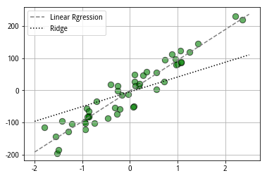

4.1.3 在研究环境中运行代码
1 | #pandas已经安装好，可以直接导入 |
| open | close | high | low | volume | money | |
|---|---|---|---|---|---|---|
| 2020-01-02 | 76.41 | 76.61 | 77.20 | 76.40 | 87487727.0 | 6.712532e+09 |
| 2020-01-03 | 77.22 | 76.68 | 77.28 | 76.41 | 66885076.0 | 5.137312e+09 |
| 2020-01-06 | 76.43 | 76.15 | 77.28 | 76.06 | 71546732.0 | 5.487968e+09 |
| 2020-01-07 | 76.51 | 76.64 | 76.91 | 76.21 | 50833053.0 | 3.886450e+09 |
| 2020-01-08 | 76.48 | 75.61 | 76.48 | 75.17 | 70603011.0 | 5.347387e+09 |
在聚宽中的get_price函数，传入的股票代码是用.XSHG扩展名代表上海证券交易所股票，用.XSHE扩展名代表深圳证券交易所股票
4.2 借助财务数据筛选股票
4.2.1 获取股票的概况
1 | #使用get_security_info函数可以获取股票概况 |
股票的中文名称： 中国平安
股票简称： ZGPA
股票上市日期： 2007-03-01
股票退市日期： 2200-01-01
产品类型： stock
产品的母基金： None
1 | #使用get_all_securities可获得全部证券信息 |
| display_name | name | start_date | end_date | type | |
|---|---|---|---|---|---|
| 000001.XSHE | 平安银行 | PAYH | 1991-04-03 | 2200-01-01 | stock |
| 000002.XSHE | 万科A | WKA | 1991-01-29 | 2200-01-01 | stock |
| 000004.XSHE | ST国华 | STGH | 1990-12-01 | 2200-01-01 | stock |
| 000005.XSHE | ST星源 | STXY | 1990-12-10 | 2200-01-01 | stock |
| 000006.XSHE | 深振业A | SZYA | 1992-04-27 | 2200-01-01 | stock |
get_all_securities函数默认获取股票的信息。如果需要获取其他类型的证券信息，则我们需要制定types参数，即get_all_securities(types=[‘etf’])
1 | info_index = get_all_securities(types=['etf'])[:5] |
| display_name | name | start_date | end_date | type | |
|---|---|---|---|---|---|
| 159001.XSHE | 货币ETF | BZJ | 2014-10-20 | 2200-01-01 | etf |
| 159003.XSHE | 招商快线ETF | ZSKX | 2014-10-20 | 2200-01-01 | etf |
| 159005.XSHE | 汇添富快钱ETF | TFKQ | 2015-01-13 | 2200-01-01 | etf |
| 159601.XSHE | A50ETF | A50ETF | 2021-11-08 | 2200-01-01 | etf |
| 159602.XSHE | 中国A50ETF | ZGA50ETF | 2021-11-08 | 2200-01-01 | etf |
4.2.2 获取股票的财务数据
get_fundamentals函数要传入一个query_object。query的原理：在数据库中有一个表格，其中包含若干个字段，使用query可以查询表格中的某个字段，并且可以设置筛选条件。
1 | #首先要创建一个query object对象 |
| id | code | pubDate | pe_ratio | turnover_ratio | pb_ratio | ps_ratio | pcf_ratio | capitalization | market_cap | circulating_cap | circulating_market_cap | day | pe_ratio_lyr | |
|---|---|---|---|---|---|---|---|---|---|---|---|---|---|---|
| 0 | 53742808 | 601318.XSHG | 2020-04-01 | 8.4814 | 0.5141 | 1.8824 | 1.0841 | -278.0137 | 1828024.125 | 12671.8633 | 1083266.5 | 7509.2031 | 2020-04-01 | 8.4814 |
pe_ratio：动态市盈率，指的是这只股票的市价除以每股收益。例如，某只股票的每股收益是1元，而某日的股价是10元，则这只股票的动态市盈率就是10.一般来说，市盈率越低的股票越值得投资。
turnover_ratio：换手率，指的是这只股票在某个时间内交易的频率。例如，某只股票一共发行了1亿股，而某天这只股票的成交量是1000万股，则这一天，该股票的换手率是10%。换手率越高，说明该股票的成交越活越
pb_ratio：市净率，指的是这只股票的价格与每股净资产的比值，比如，某公司净资产1亿元，发行股票1亿股，也就是说每股净资产为1元；而这只股票某日价格为5元，则该股票的市净率为5.**一般来说，市净率越低越好。
ps+ratio：市销率，指的是这只股票的价格与每股销售收入比值，例如，某公司的销售收入是2亿元，发行1亿股，每股销售收入为2元，而某日这只股票的市价是8元，则市销率为4，一般来说，市销率越低越好。
pcf_ratio：市现率，指的是这只股票的价格与每股现金流的比值，例如，某公司从事经营活动产生的净现金流是5亿元，该公司发行了1亿股，每股现金流为5元；某日这只股票的价格为10元，则市现率是2.一般来说，市现率大于0的时候，数值越小越好。
pe_ratio_lyr：静态市盈率，指的是这只股票的价格与最近公开的每股收益的比值，它与动态市盈率的区别在于：动态市盈率是股价除以预期的每股收益，而静态市盈率是股价除以已经实现的每股收益。
capitalization：股票的总股本
market_cap：流通股本
circulating_cap：
circulating_market_cap：
4.2.3 通过财务指标进行选股
1 | #创建一个query object |
| code | pe_ratio | pcf_ratio | turnover_ratio | |
|---|---|---|---|---|
| 0 | 002458.XSHE | 8.5327 | 15.0275 | 9.7450 |
| 1 | 600387.XSHG | 7.7496 | 4.9772 | 7.2717 |
| 2 | 300107.XSHE | 10.5846 | 11.8711 | 5.3762 |
| 3 | 002234.XSHE | 5.2662 | 17.8631 | 5.1201 |
| 4 | 002839.XSHE | 10.9746 | 14.5165 | 4.9225 |
| 5 | 000610.XSHE | 18.4441 | 11.9632 | 4.6329 |
| 6 | 603733.XSHG | 19.6847 | 7.6782 | 4.3345 |
| 7 | 002869.XSHE | 8.8296 | 6.0086 | 4.2709 |
4.3 谁是幕后“大佬”
问题：是不是所有上市公司的财务报表都能够反映其真实财务状况呢？可能财务会造假，也可能合理调整使其只是看起来好看
此外，虽然换手率确实可以体现交易活跃程度的指标，但是成交活跃也不代表股价一定会涨，可能是大股东在减持套利，或者是主力在出货，那么股价不是反而会跌吗？
故，在持仓前，我们有必要了解一下更多信息，比如大股东是谁、大股东近期增减持的状况，以及主力的资金流向。
4.3.1 找到最大的股东
查询002458这只股票的十大股东都有谁
在平台上，十大股东的数据是存储在名为STK_SHAREHOLDER_TOP10这张表中，使用query object就可以进行查询
1 | #从jqdata导入finance包 |
1 | #从jqdata导入finance包 |
| code | shareholder_rank | shareholder_name | shareholder_class | share_ratio | |
|---|---|---|---|---|---|
| 0 | 002458.XSHE | 1 | 曹积生 | 自然人 | 41.64 |
| 1 | 002458.XSHE | 2 | 迟汉东 | 自然人 | 3.09 |
| 2 | 002458.XSHE | 3 | 香港中央结算有限公司 | 其他机构 | 1.89 |
| 3 | 002458.XSHE | 4 | 李玲 | 自然人 | 1.41 |
| 4 | 002458.XSHE | 5 | 耿培梁 | 自然人 | 1.16 |
| 5 | 002458.XSHE | 6 | 中国农业银行股份有限公司-银华内需精选混合型证券投资基金（LOF） | 证券投资基金 | 1.09 |
| 6 | 002458.XSHE | 7 | 东方邦信创业投资有限公司 | 风险投资 | 1.02 |
| 7 | 002458.XSHE | 8 | 柳炳兰 | 自然人 | 0.96 |
| 8 | 002458.XSHE | 9 | 交通银行股份有限公司-工银瑞信双利债券型证券投资基金 | 证券投资基金 | 0.88 |
| 9 | 002458.XSHE | 10 | 李秀国 | 自然人 | 0.79 |
| 10 | 002458.XSHE | 1 | 曹积生 | 自然人 | 41.45 |
| 11 | 002458.XSHE | 2 | 迟汉东 | 自然人 | 3.22 |
| 12 | 002458.XSHE | 3 | 李玲 | 自然人 | 1.41 |
| 13 | 002458.XSHE | 4 | 耿培梁 | 自然人 | 1.29 |
| 14 | 002458.XSHE | 5 | 中国农业银行股份有限公司-银华内需精选混合型证券投资基金(LOF) | 证券投资基金 | 1.03 |
| 15 | 002458.XSHE | 6 | 柳炳兰 | 自然人 | 0.96 |
| 16 | 002458.XSHE | 7 | 香港中央结算有限公司 | 其他机构 | 0.85 |
| 17 | 002458.XSHE | 8 | 李秀国 | 自然人 | 0.78 |
| 18 | 002458.XSHE | 9 | 任升浩 | 自然人 | 0.62 |
| 19 | 002458.XSHE | 10 | 杨玲 | 自然人 | 0.42 |
| 20 | 002458.XSHE | 1 | 曹积生 | 自然人 | 41.25 |
| 21 | 002458.XSHE | 2 | 迟汉东 | 自然人 | 3.28 |
| 22 | 002458.XSHE | 3 | 李玲 | 自然人 | 1.41 |
| 23 | 002458.XSHE | 4 | 耿培梁 | 自然人 | 1.35 |
| 24 | 002458.XSHE | 5 | 柳炳兰 | 自然人 | 0.95 |
| 25 | 002458.XSHE | 6 | 李秀国 | 自然人 | 0.78 |
| 26 | 002458.XSHE | 7 | 香港中央结算有限公司 | 其他机构 | 0.70 |
| 27 | 002458.XSHE | 8 | 任升浩 | 自然人 | 0.62 |
| 28 | 002458.XSHE | 9 | 北京正华宝意控股有限公司 | 其他机构 | 0.59 |
| 29 | 002458.XSHE | 10 | 杨玲 | 自然人 | 0.42 |
| ... | ... | ... | ... | ... | ... |
| 90 | 002458.XSHE | 10 | 杨玲 | 自然人 | 0.42 |
| 91 | 002458.XSHE | 9 | 浙商银行股份有限公司-国泰中证畜牧养殖交易型开放式指数证券投资基金 | 证券投资基金 | 0.44 |
| 92 | 002458.XSHE | 8 | 任升浩 | 自然人 | 0.62 |
| 93 | 002458.XSHE | 7 | 李秀国 | 自然人 | 0.78 |
| 94 | 002458.XSHE | 6 | 香港中央结算有限公司 | 其他机构 | 0.95 |
| 95 | 002458.XSHE | 5 | 耿培梁 | 自然人 | 1.05 |
| 96 | 002458.XSHE | 4 | 柳炳兰 | 自然人 | 1.25 |
| 97 | 002458.XSHE | 3 | 李玲 | 自然人 | 2.01 |
| 98 | 002458.XSHE | 2 | 迟汉东 | 自然人 | 2.66 |
| 99 | 002458.XSHE | 1 | 曹积生 | 自然人 | 41.14 |
| 100 | 002458.XSHE | 10 | 浙商银行股份有限公司-国泰中证畜牧养殖交易型开放式指数证券投资基金 | 证券投资基金 | 0.60 |
| 101 | 002458.XSHE | 9 | 任升浩 | 自然人 | 0.62 |
| 102 | 002458.XSHE | 8 | 李秀国 | 自然人 | 0.78 |
| 103 | 002458.XSHE | 7 | 耿培梁 | 自然人 | 1.05 |
| 104 | 002458.XSHE | 6 | 香港中央结算有限公司 | 其他机构 | 1.07 |
| 105 | 002458.XSHE | 5 | 柳炳兰 | 自然人 | 1.25 |
| 106 | 002458.XSHE | 4 | 李玲 | 自然人 | 2.01 |
| 107 | 002458.XSHE | 3 | 迟汉东 | 自然人 | 2.66 |
| 108 | 002458.XSHE | 2 | 深圳毕升私募证券基金管理有限公司-必胜年年升1号私募基金 | 证券投资基金 | 2.71 |
| 109 | 002458.XSHE | 1 | 曹积生 | 自然人 | 41.14 |
| 110 | 002458.XSHE | 10 | 香港中央结算有限公司 | 其他机构 | 0.77 |
| 111 | 002458.XSHE | 9 | 李秀国 | 自然人 | 0.78 |
| 112 | 002458.XSHE | 8 | 中信证券-中信银行-中信证券红利价值一年持有混合型集合资产管理计划 | 券商资产管理计划 | 1.04 |
| 113 | 002458.XSHE | 7 | 耿培梁 | 自然人 | 1.05 |
| 114 | 002458.XSHE | 6 | 中信建投证券股份有限公司 | 券商和上市公司 | 1.13 |
| 115 | 002458.XSHE | 5 | 柳炳兰 | 自然人 | 1.25 |
| 116 | 002458.XSHE | 4 | 李玲 | 自然人 | 2.01 |
| 117 | 002458.XSHE | 3 | 深圳毕升私募证券基金管理有限公司-必胜年年升1号私募基金 | 证券投资基金 | 2.11 |
| 118 | 002458.XSHE | 2 | 迟汉东 | 自然人 | 2.66 |
| 119 | 002458.XSHE | 1 | 曹积生 | 自然人 | 41.14 |
120 rows × 5 columns
系统返回了是大股东信息，其中shareholder_rank字段是股东的持股排名；shareholder_name字段是股东名称；shareholder_class字段是股东类型；share_ratio字段是股东的持股比例
4.3.2 大股东们增持了还是减持了
如果大股东对公司未来发展有信心，一般会增持公司的股票，以便在未来获取更高的收益；相反，如果大股东认为短期股价已经见顶，则可能会减持一些股票，将已经获利的部分进行套现。也就是说，如果大股东增持了股票，则股价有可能上涨，反之股价有可能下降。当然，这也不是绝对的——有时候大股东的判断也可能出现失误。
我们可以了解一下大股东们的动作，可以使用query object来查询STK+SHAREHOLDERS_SHARE_CHANGE这张表
1 | #创建一个query object |
| code | pub_date | shareholder_name | type | change_number | change_ratio | after_change_ratio | |
|---|---|---|---|---|---|---|---|
| 0 | 002458.XSHE | 2019-09-25 | 耿培梁 | 1 | 122000.0 | 0.021 | NaN |
| 1 | 002458.XSHE | 2019-09-25 | 耿培梁 | 1 | 719300.0 | 0.125 | NaN |
| 2 | 002458.XSHE | 2019-09-25 | 耿培梁 | 1 | 10000.0 | 0.002 | NaN |
| 3 | 002458.XSHE | 2019-09-25 | 纪永梅 | 1 | 2100.0 | 0.000 | NaN |
| 4 | 002458.XSHE | 2019-09-25 | 耿培梁 | 1 | 62000.0 | 0.011 | NaN |
| 5 | 002458.XSHE | 2019-09-25 | 耿培梁 | 1 | 234000.0 | 0.041 | NaN |
| 6 | 002458.XSHE | 2019-09-25 | 耿培梁 | 0 | 782600.0 | 0.136 | 1.168 |
| 7 | 002458.XSHE | 2019-09-25 | 纪永梅 | 1 | 187770.0 | 0.033 | NaN |
| 8 | 002458.XSHE | 2019-09-25 | 耿培梁 | 1 | 782600.0 | 0.136 | NaN |
| 9 | 002458.XSHE | 2020-02-22 | 赵桂苹 | 0 | 1000.0 | 0.000 | NaN |
| 10 | 002458.XSHE | 2022-04-26 | 公司2022年员工持股计划 | 0 | 1204600.0 | 0.120 | 0.120 |
从这张表可以看出，系统返回了2019年9月1日以后公布的该股票的大股东增减持数据。其中，在type字段中，0表示增持，1表示减持；change_number字段存储的是增减持的股票数量；change_ratio字段存储的是持股变动数量占总股本的比例；after_change_ratio字段存储的是大股东持股数量变化后持股数量占总股本的比例。
例如，耿培梁这位股东，其增减持比较频繁，其中最引人注目的是其先增持了782600股，接着减持了等量的股票，这有可能是该股东在某个时间段获利套现了。
4.3.3 资金净流入还是净流出
我们可以获取时效性更高的数据——资金流向数据，以便看到主力的实时动向。
要做到这一点，我们只需要调用平台的get_money_flow函数即可，并指定查询的股票代码、日期和要查看的字段。
1 | #从jgdata中导入全部函数 |
1 | #使用get_money_flow函数获取002458的资金流向数据 |
| date | sec_code | change_pct | net_amount_main | net_pct_main | |
|---|---|---|---|---|---|
| 0 | 2020-03-23 | 002458.XSHE | -9.99 | -11561.8543 | -17.0788 |
| 1 | 2020-03-24 | 002458.XSHE | 0.53 | -4068.5285 | -7.1877 |
| 2 | 2020-03-25 | 002458.XSHE | 7.25 | 1817.5482 | 2.1306 |
| 3 | 2020-03-26 | 002458.XSHE | 2.36 | -2352.3292 | -2.5584 |
| 4 | 2020-03-27 | 002458.XSHE | -0.85 | -5059.1633 | -8.0721 |
| 5 | 2020-03-30 | 002458.XSHE | 6.96 | 4476.8310 | 4.2767 |
| 6 | 2020-03-31 | 002458.XSHE | 8.57 | -2550.2537 | -1.6243 |
| 7 | 2020-04-01 | 002458.XSHE | 1.00 | -2896.5712 | -1.7715 |
| 8 | 2020-04-02 | 002458.XSHE | -1.09 | -10572.1955 | -9.4150 |
| 9 | 2020-04-03 | 002458.XSHE | -0.37 | -4050.7753 | -3.4890 |
结果分析：截至2020年4月3日的10个交易日中，主力资金整体呈现出净流出的状态。尤其在3月23日，主力资金流出超过1.1亿元；4月2日这一天，主力资金流出也超过1亿元。
仔细观察，会发现3月25日这一天，股价上涨了7.25%，主力资金净流入超过1817万元，次日股价上涨了2.36%；同时，在3月30日，股价上涨了6.96%，主力资金净流入超过4476万元，次日股价上涨了8.57%。
这是否意味着如果该股某日股价上涨，且主力资金净流入的话，下一个交易日的股价会上涨呢？假如真的存在这个规律，我们是否可以把这两个数据处理成一个特征（或者说一个因子），用来预测股价的涨跌呢？
因子交易的基本思路：将诸多数据通过计算整理成不同因子，并据此制定交易策略。
第五章 因子来了——基本原理和用法
5.1 “瓦氏因子”了解一下
5.1.1 获取主力资金流向数据
在上一章中，我们用get_money_flow函数获取了股票的资金流入/流出数据，并且发现了一个可能存在的规律——某日该股票价格上涨，且主力资金净流入的话，次日股价可能上涨；否则股价下跌。
为了进行实验，再次获取股票的资金流入/流出数据。为了便于后面训练模型，这次将数据的时间范围扩大至两年
1 | #导入jqdata的全部函数 |
| date | sec_code | change_pct | net_amount_main | net_pct_main | |
|---|---|---|---|---|---|
| 0 | 2018-04-09 | 002458.XSHE | -0.84 | -570.2092 | -8.7478 |
| 1 | 2018-04-10 | 002458.XSHE | -2.55 | -360.5189 | -4.4665 |
| 2 | 2018-04-11 | 002458.XSHE | 0.44 | -601.2525 | -6.2953 |
| 3 | 2018-04-12 | 002458.XSHE | -1.01 | 168.3327 | 2.9341 |
| 4 | 2018-04-13 | 002458.XSHE | -0.73 | -81.8302 | -1.5589 |
5.1.2 简易特征工程
下面我们给原始数据增加两个新的字段，其中一个是up_or_down，用来表示当日股价是上涨还是下跌。如果change_pct（涨幅）这个字段为正数，说明股价上涨，则up_or_down用1来表示，反之，用0来表示，代表当日股价下跌。
类似，我们用money_in_out字段表示主力资金净流入还是净流出。如果net_amount_main大于0，说明主力资金净流入，则在money_in_out字段用1表示；反之说明主力资金净流出，money_in_out字段用0表示。
1 | #增加一个字段，记录股价上涨还是下跌 |
| date | sec_code | change_pct | net_amount_main | net_pct_main | up_or_down | money_in_out | |
|---|---|---|---|---|---|---|---|
| 0 | 2018-04-09 | 002458.XSHE | -0.84 | -570.2092 | -8.7478 | 0 | 0 |
| 1 | 2018-04-10 | 002458.XSHE | -2.55 | -360.5189 | -4.4665 | 0 | 0 |
| 2 | 2018-04-11 | 002458.XSHE | 0.44 | -601.2525 | -6.2953 | 1 | 0 |
| 3 | 2018-04-12 | 002458.XSHE | -1.01 | 168.3327 | 2.9341 | 0 | 1 |
| 4 | 2018-04-13 | 002458.XSHE | -0.73 | -81.8302 | -1.5589 | 0 | 0 |
5.1.3 “瓦氏因子”的计算
我们现在有两个新的特征，能够体现股价的涨跌和主力资金的流入/流出情况，下面就可以用这两个新的特征来计算“瓦氏因子”
思路：如果我们把两个特征相乘，则股价上涨，且主力资金净流入时，因子值就是up_or_down乘以money_in_out，也就是1x1=1；而其他情况，“瓦氏因子”的数值都为0。例如，股价下跌但主力资金净流入，“瓦氏因子”为0x1，结果为0。同时，为了后面便于训练模型，我们还需要做一个标签（即次日股票上涨还是下跌），存储在next_day字段中。
1 | #瓦氏因子来了，用两个自增的字段相乘，得出因子值 |
| date | sec_code | change_pct | net_amount_main | net_pct_main | up_or_down | money_in_out | factor_wa | next_day | |
|---|---|---|---|---|---|---|---|---|---|
| 0 | 2018-04-09 | 002458.XSHE | -0.84 | -570.2092 | -8.7478 | 0 | 0 | 0 | 0.0 |
| 1 | 2018-04-10 | 002458.XSHE | -2.55 | -360.5189 | -4.4665 | 0 | 0 | 0 | 1.0 |
| 2 | 2018-04-11 | 002458.XSHE | 0.44 | -601.2525 | -6.2953 | 1 | 0 | 0 | 0.0 |
| 3 | 2018-04-12 | 002458.XSHE | -1.01 | 168.3327 | 2.9341 | 0 | 1 | 0 | 0.0 |
| 4 | 2018-04-13 | 002458.XSHE | -0.73 | -81.8302 | -1.5589 | 0 | 0 | 0 | 0.0 |
结果分析：“瓦氏因子”字段factor_wa添加成功。例如,2018年4月10日，股价下跌，主力资金净流出，“瓦氏因子”的值是0；2018年4月11日，股价上涨，主力资金还是净流出，“瓦氏因子”还是0.
再看next_day字段，2018年4月11日，股价上涨，因此2018年4月11日这一天的next_day字段中的数值是1；2018年4月12日，股价下跌，因此2018年4月11日这一天的next_day字段中的数值是0.
5.1.4 用添加的“瓦氏因子”的数据训练模型
来试试在数据集中加入这个因子后，模型的预测准确率是否会提高
下面准备训练模型用的数据集
1 | #还是请出已经熟悉的KNN算法 |
| change_pct | net_amount_main | net_pct_main | factor_wa | next_day | |
|---|---|---|---|---|---|
| 0 | -0.84 | -570.2092 | -8.7478 | 0 | 0.0 |
| 1 | -2.55 | -360.5189 | -4.4665 | 0 | 1.0 |
| 2 | 0.44 | -601.2525 | -6.2953 | 0 | 0.0 |
| 3 | -1.01 | 168.3327 | 2.9341 | 0 | 0.0 |
| 4 | -0.73 | -81.8302 | -1.5589 | 0 | 0.0 |
处理成功，与训练模型无关的字段已经去掉了，只剩下特征和标签了
因为最后一天是没有next_day数据的（因为对于最后一天来说，下一个交易日还没到来），所以我们要去掉最后一行数据；同时，把除标签以外的特征赋给X，把标签付给y；再使用数据集拆分工具，将X和y分别拆分成训练集和验证集。
1 | #将‘next_day’以外的字段，作为数据集的特征 |
为了便于复现，上面的代码指定random_state为28.这样，即使多次运行代码，输出结果也不会不同
1 | #创建KNN分类器，n_neighbors参数依然取95 |
0.5671232876712329
0.5573770491803278
可见在添加瓦氏因子后，模型的预测准确率有了提高——同样的参数，模型在验证集中的准确率从54.1%提高到了55.7%
5.1.5 “因子”能干啥
经过这么多年的研究，因子的计算越来越复杂
总而言之，因子其实解决的就是两个问题：1.买谁，2.什么时候买和什么时候卖（《打开量化投资的黑箱》中也介绍了）
解决“买谁”这个问题的因子，一般称为量化选股因子
解决“什么时候买和什么时候卖”这个问题的因子，一般称为量化择时因子
也就是说，我们首先要通过选股因子确定投资标的。一旦确定投资标的之后，我们就要研究买卖的时机了，这个时候就可以使用量化择时因子：找到股票可能上涨的时机，并进行买入；找到股票可能下跌的时机，并进行卖出。在这个过程中，我们可以考虑用的因子就非常多了，如比较传统的动量因子、情绪因子，以及比较玄学的Alpha101因子、alpha191因子等
5.2 股票不知道怎么选？因子来帮忙
选股，即买谁
5.2.1 确定股票池
沪深300、上证50、中证100、中证200、中证500
沪深300:从上海证券交易所和深圳证券交易所跳出经营状况良好、规模庞大且流动性非常高的300只股票组成的指数，体现大盘股的走势
上证50：上海交易所中规模较大、流动性较高的50只股票组成的指数，体现超大盘股的走势
中证500：在沪深两市中，选出市值较高的800只股票，再把沪深300中的股票剔除出去，余下的500只股票组成的指数。体现中小盘股的走势
这三个指数没有好坏之分，只是风格不同。
中证500虽然代表中小盘股的走势，但是由于A股市场经过这么多年的发展，这些所谓的中小盘股的体量也要比创业板、中小板这些板块上的股票大得多。
所以，我们稳中求进，不管赚不赚到钱，要保证资金的安全，因此选择沪深300成分股作为选股的“股票池”，并结合量化选股因子，找到财务状况最好、发展前景最好的企业的股票，作为未来投资标的
5.2.2 获取沪深两市的全部指数
在聚宽平台上，我们可以通过get_all_securities函数，查询到全部指数的带啊吗、中文名称、简称、起止日期等
1 | #这里需要导入聚宽因子库的get_factor_values函数 |
思路是选超大盘股，净利润率高，且高速成长的
1 | #指定get_all_securities的types参数为index |
| display_name | name | start_date | end_date | type | |
|---|---|---|---|---|---|
| 000001.XSHG | 上证指数 | SZZS | 1991-07-15 | 2200-01-01 | index |
| 000002.XSHG | A股指数 | AGZS | 1992-02-21 | 2200-01-01 | index |
| 000003.XSHG | B股指数 | BGZS | 1992-02-21 | 2200-01-01 | index |
| 000004.XSHG | 工业指数 | GYZS | 1993-05-03 | 2200-01-01 | index |
| 000005.XSHG | 商业指数 | SYZS | 1993-05-03 | 2200-01-01 | index |
| 000006.XSHG | 地产指数 | DCZS | 1993-05-03 | 2200-01-01 | index |
| 000007.XSHG | 公用指数 | GYZS | 1993-05-03 | 2200-01-01 | index |
| 000008.XSHG | 综合指数 | ZHZS | 1993-05-03 | 2200-01-01 | index |
| 000009.XSHG | 上证380 | SZ380 | 2010-11-29 | 2200-01-01 | index |
| 000010.XSHG | 上证180 | SZ180 | 2002-07-01 | 2200-01-01 | index |
| 000011.XSHG | 基金指数 | JJZS | 2000-06-09 | 2200-01-01 | index |
| 000012.XSHG | 国债指数 | GZZS | 2003-01-02 | 2200-01-01 | index |
| 000013.XSHG | 上证企业债指数 | QZZS | 2003-06-09 | 2020-12-28 | index |
| 000015.XSHG | 红利指数 | HLZS | 2005-01-04 | 2200-01-01 | index |
| 000016.XSHG | 上证50 | SZ50 | 2004-01-02 | 2200-01-01 | index |
| 000017.XSHG | 新综指 | XZZ | 2006-01-04 | 2200-01-01 | index |
| 000018.XSHG | 180金融 | 180JR | 2007-12-10 | 2200-01-01 | index |
| 000019.XSHG | 治理指数 | ZLZS | 2008-01-02 | 2200-01-01 | index |
| 000020.XSHG | 中型综指 | ZXZZ | 2008-05-12 | 2200-01-01 | index |
| 000021.XSHG | 180治理 | 180ZL | 2008-09-10 | 2200-01-01 | index |
5.2.3 获取股票的市值因子
获取沪深300成分股的数据
1 | #导入聚宽的因子分析库 |
| 2020-04-30 00:00:00 | |
|---|---|
| code | |
| 600010.XSHG | 4.923184e+10 |
| 600028.XSHG | 5.399776e+11 |
| 600030.XSHG | 3.063646e+11 |
| 600031.XSHG | 1.657582e+11 |
| 600036.XSHG | 8.849644e+11 |
从表中我们看出，我们使用get_factor_values函数获得了沪深300成分股的在2020年4月30日这一天的市值数据，也就是market_cap。例如，600010在这一天的市值约为492亿元，算得上一个庞然大物了
5.2.4 获取股票的现金流因子
除了关心股票整体市值外，我们还想了解企业的现金流与股价的对比关系，也就是市现率这个指标的情况。毕竟大环境不好的情况下，充足的现金流才是保证企业生菜发展的前提。因此，我们来获取一下股票市现率的倒数（因为市现率越小越好，因此其倒数越大越好）
1 | #get_factor_values中 |
| 2020-04-30 00:00:00 | |
|---|---|
| code | |
| 600010.XSHG | -0.009713 |
| 600028.XSHG | -0.046224 |
| 600030.XSHG | 0.270966 |
| 600031.XSHG | 0.001367 |
| 600036.XSHG | 0.219173 |
使用get_factor_values函数，只要指定factors参数为cash_flow_to_price_ratio，即可获得股票的市现率倒数
5.2.5 获取股票的净利率因子
看看企业究竟是盈利还是亏损，如果盈利，那么净利润率又是多少
1 | #在get_factor_values函数中 |
| 2020-04-30 00:00:00 | |
|---|---|
| code | |
| 600010.XSHG | 0.002249 |
| 600028.XSHG | 0.011633 |
| 600030.XSHG | 0.275232 |
| 600031.XSHG | 0.144949 |
| 600036.XSHG | 0.345430 |
我们指定factors参数为net_profit_ratiio，即可用get_factor_values函数获得上市企业的净利润率
5.2.6 获取股票的净利润增长率因子
对于企业来说，盈利固然重要，比盈利更重要的是，能够持续不断地创造更多的利润，也就是说，企业需要有良好的成长性。衡量成长性的一个重要指标就是净利润的增长率
1 | #在get_factor_values函数中 |
| 2020-04-30 00:00:00 | |
|---|---|
| code | |
| 600010.XSHG | -0.955338 |
| 600028.XSHG | -0.560616 |
| 600030.XSHG | 0.094400 |
| 600031.XSHG | 0.285818 |
| 600036.XSHG | 0.146780 |
当指定factors参数为net_profit_growth_rate时，使用get_factor_values函数即可获取股票的净利润增长率数据
5.3 把诸多因子“打个包”
至此，我们已经有了4个因子——市值、市现率倒数、净利润率和净利润增长率
5.3.1 将4个因子存入一个DataFrame
这里的思路是，把4个因子进行降维处理，用一个主成分表示4个因子，这样我们就可以按照主成分的数值高低来选择股票了
1 | #新建一个DataFrame，和前面市值数据保持同样的序号 |
| mc | cfp | npr | npgr | |
|---|---|---|---|---|
| code | ||||
| 600010.XSHG | 4.923184e+10 | -0.009713 | 0.002249 | -0.955338 |
| 600028.XSHG | 5.399776e+11 | -0.046224 | 0.011633 | -0.560616 |
| 600030.XSHG | 3.063646e+11 | 0.270966 | 0.275232 | 0.094400 |
| 600031.XSHG | 1.657582e+11 | 0.001367 | 0.144949 | 0.285818 |
| 600036.XSHG | 8.849644e+11 | 0.219173 | 0.345430 | 0.146780 |
5.3.2 使用PCA提取主成分
下面开始进行主成分分析的过程，PCA算法，PCA是一种无监督算法，通过方差来确定样本各个特征的重要性，并且给它们分配不同的权重（重要性越高的特征，分配的权重也越高），并根据权重，将高维数据降到低维的过程
为了便于计算，数据中不能有空值，所以要用下面的代码进行处理
1 | #为了计算，先把数据中的空值去掉 |
mc 0
cfp 0
npr 0
npgr 0
dtype: int64
经过去除空值操作后，样本的四个因子中均没有空值了
接下来，我们使用PCA来对4个因子进行降维处理，考虑到各个因子的量纲差异比较大，这里先进行数据缩放步骤，再进行主成分分析
1 | #因为各因子数值的量纲差异较大 |
array([[0.6902996976209287, 0.7021000940348576, -0.17476208233109072]])
新的代码中给除了市值外的三个因子分配了权重？？？
5.3.3 找到主成分数值最高的股票
将PCA提取的主成分添加到数据表里，并找到主成分数值最高的几只股票
1 | #在factors数据表中添加一个pca字段 |
| mc | cfp | npr | npgr | pca | |
|---|---|---|---|---|---|
| code | |||||
| 601166.XSHG | 3.452670e+11 | 0.800000 | 0.370036 | 0.075121 | 4.563748 |
| 601288.XSHG | 1.210941e+12 | 0.448029 | 0.335705 | 0.045967 | 2.792800 |
| 601398.XSHG | 1.842620e+12 | 0.402414 | 0.372866 | 0.044122 | 2.788498 |
| 600519.XSHG | 1.589970e+12 | 0.014857 | 0.520656 | 0.130552 | 1.830660 |
| 600036.XSHG | 8.849644e+11 | 0.219173 | 0.345430 | 0.146780 | 1.801488 |
| 601688.XSHG | 1.646504e+11 | 0.186306 | 0.359591 | 0.515651 | 1.688506 |
| 600030.XSHG | 3.063646e+11 | 0.270966 | 0.275232 | 0.094400 | 1.660772 |
| 601066.XSHG | 2.675470e+11 | 0.069972 | 0.400202 | 0.661239 | 1.367239 |
| 600900.XSHG | 3.839000e+11 | 0.006233 | 0.421832 | -0.078471 | 1.279813 |
| 603288.XSHG | 3.319564e+11 | 0.012757 | 0.272045 | 0.183514 | 0.468368 |
1 | factors.sort_values(by='pca', ascending = False).head(50) |
| mc | cfp | npr | npgr | pca | |
|---|---|---|---|---|---|
| code | |||||
| 601166.XSHG | 3.452670e+11 | 0.800000 | 0.370036 | 0.075121 | 4.563748 |
| 601288.XSHG | 1.210941e+12 | 0.448029 | 0.335705 | 0.045967 | 2.792800 |
| 601398.XSHG | 1.842620e+12 | 0.402414 | 0.372866 | 0.044122 | 2.788498 |
| 600519.XSHG | 1.589970e+12 | 0.014857 | 0.520656 | 0.130552 | 1.830660 |
| 600036.XSHG | 8.849644e+11 | 0.219173 | 0.345430 | 0.146780 | 1.801488 |
| 601688.XSHG | 1.646504e+11 | 0.186306 | 0.359591 | 0.515651 | 1.688506 |
| 600030.XSHG | 3.063646e+11 | 0.270966 | 0.275232 | 0.094400 | 1.660772 |
| 601066.XSHG | 2.675470e+11 | 0.069972 | 0.400202 | 0.661239 | 1.367239 |
| 600900.XSHG | 3.839000e+11 | 0.006233 | 0.421832 | -0.078471 | 1.279813 |
| 603288.XSHG | 3.319564e+11 | 0.012757 | 0.272045 | 0.183514 | 0.468368 |
| 601225.XSHG | 7.540000e+10 | 0.054623 | 0.210243 | 0.054202 | 0.336977 |
| 600436.XSHG | 8.461524e+10 | -0.007563 | 0.244179 | 0.196216 | 0.224285 |
| 600276.XSHG | 4.112731e+11 | 0.011001 | 0.228043 | 0.270156 | 0.212337 |
| 600585.XSHG | 3.177462e+11 | 0.000930 | 0.221024 | 0.036247 | 0.155115 |
| 601012.XSHG | 1.162158e+11 | 0.072519 | 0.191460 | 1.535772 | 0.149718 |
| 601088.XSHG | 3.168416e+11 | 0.002430 | 0.205398 | -0.114188 | 0.094109 |
| 600809.XSHG | 9.352370e+10 | 0.010427 | 0.196036 | 0.347873 | 0.027626 |
| 603986.XSHG | 8.918960e+10 | 0.011579 | 0.206477 | 1.072090 | 0.008121 |
| 603259.XSHG | 1.680351e+11 | 0.004414 | 0.135661 | -0.261985 | -0.258160 |
| 600406.XSHG | 9.290101e+10 | -0.000548 | 0.143026 | 0.049815 | -0.275638 |
| 600104.XSHG | 2.208174e+11 | 0.115800 | 0.035203 | -0.431745 | -0.280734 |
| 600031.XSHG | 1.657582e+11 | 0.001367 | 0.144949 | 0.285818 | -0.283062 |
| 600196.XSHG | 8.619028e+10 | 0.016558 | 0.127676 | 0.167600 | -0.294826 |
| 600309.XSHG | 1.412886e+11 | -0.008723 | 0.135728 | -0.212917 | -0.322582 |
| 603260.XSHG | 2.184602e+10 | 0.004085 | 0.114592 | -0.634253 | -0.332014 |
| 600048.XSHG | 1.937866e+11 | -0.036488 | 0.159450 | 0.419256 | -0.390291 |
| 601601.XSHG | 2.788377e+11 | 0.060415 | 0.080259 | 0.551656 | -0.396909 |
| 601318.XSHG | 1.361147e+12 | -0.025746 | 0.129929 | 0.032310 | -0.458331 |
| 600346.XSHG | 9.946248e+10 | 0.075258 | 0.102152 | 3.247378 | -0.513823 |
| 601633.XSHG | 7.356579e+10 | 0.047008 | 0.036152 | -0.219070 | -0.609874 |
| 600887.XSHG | 1.782581e+11 | 0.006231 | 0.066561 | -0.121291 | -0.640104 |
| 600893.XSHG | 5.568365e+10 | 0.025837 | 0.047206 | 0.045521 | -0.675210 |
| 600690.XSHG | 1.017201e+11 | -0.001163 | 0.056223 | 0.096626 | -0.753929 |
| 601888.XSHG | 1.782610e+11 | -0.020879 | 0.055983 | -0.553747 | -0.771214 |
| 601628.XSHG | 8.066747e+11 | 0.004216 | 0.065057 | 1.048788 | -0.788644 |
| 600111.XSHG | 3.280659e+10 | 0.002373 | 0.036874 | 0.281116 | -0.863500 |
| 601899.XSHG | 9.922509e+10 | -0.002792 | 0.037268 | 0.227714 | -0.878680 |
| 603799.XSHG | 3.930505e+10 | -0.012998 | 0.015050 | -0.572506 | -0.955305 |
| 600438.XSHG | 6.478950e+10 | -0.056975 | 0.065208 | 0.165167 | -0.964788 |
| 600010.XSHG | 4.923184e+10 | -0.009713 | 0.002249 | -0.955338 | -0.966873 |
| 601669.XSHG | 5.461756e+10 | -0.034690 | 0.029359 | -0.019222 | -1.037754 |
| 601857.XSHG | 8.126131e+11 | -0.047949 | 0.015447 | -0.486498 | -1.120518 |
| 600028.XSHG | 5.399776e+11 | -0.046224 | 0.011633 | -0.560616 | -1.125080 |
| 601919.XSHG | 4.413431e+10 | -0.084415 | 0.065301 | 1.741214 | -1.264959 |
| 603501.XSHG | 1.679484e+11 | 0.010378 | 0.068072 | 6.033906 | -1.303906 |
| 601668.XSHG | 2.198970e+11 | -0.113691 | 0.044307 | 0.082724 | -1.324694 |
| 600745.XSHG | 1.199456e+11 | 0.028727 | 0.041341 | 8.109001 | -1.598781 |
这样，我们就选出了一些基本面数据看起来不错的股票，完成量化选股的步骤
第六章 因子好用吗——有些事需要知道
6.1 针对投资组合获取因子值
在第五章中，我们用来选股的因子基本是与企业的基本面相关的，这类因子可以归为价值因子；除此之外，常用因子还有动量因子、情绪因子、波动因子、规模因子、质量因子等。这些因子有些可以用来选股，有些可以用来帮助我们寻找买卖时机
下面我们以一个情绪因子为例来研究一下与因子有关的评价指标
6.1.1 建立投资组合并设定日期
我们采用第五章的方法，通过不同的量化选股因子，在不同的股票池中选取若干只股票，这里我们选取基本面比较不错且成交较为活跃的股票，把这些股票存入一个列表，命名为portfolio
注意：这些股票是当时获取的因子数据得出的结果，不具有时效性，只能拿来参考一下
1 | #因为是新建的notebook |
1 | #通过第5章中的思路 |
为了日后方便，我们不需要每次都输入起止日期，可以使用python中的datetime来获取当日的日期，并使用timedelta找到若干天以前的日期（这里选择的是500天），并分别将若干天以前的日期作为起始日期，将当前日期作为截至日期
1 | #使用datetime获取当日的日期 |
2021-08-15 2022-12-28
从代码运行结果可以看到，使用datetime和timedelta的组合，获取到start_date为2021年8月15日，end_data为2022年12月28日（做实验时间），这两个变量将会对参数进行传入
6.1.2 获取一个情绪因子
在确定了投资组合和时间范围之后，我们就可以来找一个因子进行实验。这里我们选择的因子是成交量的5日指数移动平均（VEMA5）.这个因子股票成交量在过去5个交易日中的移动平均值。我们使用get_factor_values函数可获取这个因子的数据
1 | # 为了和书中数据相同便于分析，这里强行修改start_date和end_date |
/opt/conda/lib/python3.6/site-packages/jqdata/apis/data.py:159: UserWarning: 不建议继续使用panel（panel将在pandas未来版本不再支持，将来升级pandas后，您的策略会失败），建议 get_price 传入 panel=False 参数
warnings.warn("不建议继续使用panel（panel将在pandas未来版本不再支持，将来升级pandas后，您的策略会失败），"
1 | #查看因子值5个分位对应的3个周期的收益 |
| period_1 | period_5 | period_10 | |
|---|---|---|---|
| factor_quantile | |||
| 1 | 0.000762 | 0.000329 | 0.000226 |
| 2 | 0.000892 | 0.000357 | 0.000294 |
| 3 | 0.001506 | 0.000851 | 0.000666 |
| 4 | 0.000820 | 0.000375 | 0.000265 |
| 5 | 0.000930 | 0.000432 | 0.000306 |
结果分析：从表中我们可以看到，程序返回了因子不同分位对应的不同周期的加权平均收益，在上面的代码中，我们设置的分位数量为5个，因此程序返回的是5个分位的收益情况。
举例，假如我们买入VEMA5因子值在第一分位的股票，则1天周期的加权平均收益是0.000762，而5天周期的加权平均收益是0.000329，10天周期的加权平均收益是0.000226
6.1.3 获取全部的因子分析结果
除了简单了解各分位因子值对应的加权平均收益之外，我们也可以对因子进行更加全面的了解。create_full_tear_sheet方法可以以图表的形式，直观展现因子的收益，因子的信息系数（IC），换手率等。
1 | #使用create_full_tear_sheet来获取全部的因子分析结果 |
分位数统计
| min | max | mean | std | count | count % | |
|---|---|---|---|---|---|---|
| factor_quantile | ||||||
| 1 | 2.673041e+05 | 3.840905e+06 | 9.655232e+05 | 6.118617e+05 | 662 | 22.222222 |
| 2 | 7.515145e+05 | 1.144836e+07 | 2.560969e+06 | 1.246911e+06 | 662 | 22.222222 |
| 3 | 1.709980e+06 | 1.756855e+07 | 6.092334e+06 | 3.208800e+06 | 331 | 11.111111 |
| 4 | 2.648931e+06 | 5.355542e+07 | 1.598732e+07 | 7.896577e+06 | 662 | 22.222222 |
| 5 | 1.690484e+07 | 2.954431e+08 | 8.363240e+07 | 4.213471e+07 | 662 | 22.222222 |
————————-
收益分析
| period_1 | period_5 | period_10 | |
|---|---|---|---|
| Ann. alpha | -0.123 | -0.162 | -0.174 |
| beta | 0.934 | 0.949 | 0.935 |
| Mean Period Wise Return Top Quantile (bps) | 5.252 | 5.167 | 5.011 |
| Mean Period Wise Return Bottom Quantile (bps) | 24.442 | 24.549 | 25.042 |
| Mean Period Wise Spread (bps) | -19.190 | -19.976 | -20.921 |
<Figure size 432x288 with 0 Axes>
<Figure size 432x288 with 0 Axes>
<Figure size 432x288 with 0 Axes>
<Figure size 432x288 with 0 Axes>
<Figure size 432x288 with 0 Axes>
————————-
IC 分析
| period_1 | period_5 | period_10 | |
|---|---|---|---|
| IC Mean | -0.021 | -0.080 | -0.110 |
| IC Std. | 0.394 | 0.411 | 0.432 |
| IR | -0.054 | -0.195 | -0.255 |
| t-stat(IC) | -0.981 | -3.550 | -4.641 |
| p-value(IC) | 0.327 | 0.000 | 0.000 |
| IC Skew | 0.031 | 0.114 | 0.225 |
| IC Kurtosis | -0.487 | -0.794 | -0.659 |
<Figure size 432x288 with 0 Axes>
<Figure size 432x288 with 0 Axes>
<Figure size 432x288 with 0 Axes>

————————-
换手率分析
| period_1 | period_10 | period_5 | |
|---|---|---|---|
| Quantile 1 Mean Turnover | 0.074 | 0.226 | 0.187 |
| Quantile 2 Mean Turnover | 0.117 | 0.333 | 0.261 |
| Quantile 3 Mean Turnover | 0.161 | 0.421 | 0.325 |
| Quantile 4 Mean Turnover | 0.045 | 0.109 | 0.089 |
| Quantile 5 Mean Turnover | 0.005 | 0.014 | 0.008 |
| period_1 | period_5 | period_10 | |
|---|---|---|---|
| Mean Factor Rank Autocorrelation | 0.988 | 0.963 | 0.953 |
<Figure size 432x288 with 0 Axes>

<Figure size 432x288 with 0 Axes>
————————-
<Figure size 432x288 with 0 Axes>
6.2 因子收益分析
如果我们使用这些因子来进行投资，那么我们到底能赚多少钱。这里我们就针对因子收益来进行分析。在因子收益分析中，我们主要针对各分位数的平均收益、累计收益以及多空组合收益来进行研究
6.2.1 因子分位统计
.png)
结果分析：在factor_quantile为1这一行，也就是因子值最小分位数中，因子的最小值约为26.7万，最大值约为384万，平均值为96.5万，标准差为61.1万。
通过查看分位数的情况，我们可以大致了解自己的投资组合中的股票处在哪一个因子值的分位中
注意：这里有5个分位，是因为我们在使用analyze_factor函数时，指定了quantiles参数为5，如果想希望更多因子的分位统计信息，则可自行将quantiles参数的数值设置的大一些

注意：bps基点，是债券和票据利率该变量的度量单位
结果分析：程序返回的结果包括因子的年化alpha、Beta、最高分位的平均期内收益、最低分位的平均期内收益，以及最高分位平均收益与最低分位平均收益的差。
该因子的年华alpha在1天周期、5天周期和10天周期中都是负数，同时最高分位的平均期内收益要低于最低分位的平均期内收益。也就是说，这个因子的数值越小，收益反而越高。
结果分析：上图是create_full_tear_sheet方法运行结果的一部分，因子处于第一分位的投资组合，不管是1天周期、5天周期、10天周期，其平均收益都明显高于另外几个分位。通过这种情况，我们可以知道，在最近这段时间范围内，5天平均成交量越低的股票，能够带来的收益较高。也就是说，我们需要关注选出的股票中，VEMA5因子数值最低的哪些。
6.2.2 因子加权多空组合累计收益
我们可以查看因子值加权的多空组合累计收益。简单来说，在选定的时间范围中，根据因子值的变化对投资组合中的股票同时进行做多和做空的操作，所实现的总收益如下图
结果分析：使用因子加权多空组合的方式来进行操作，累计收益的波动还是比较大的。虽然在2020年1月，累计收益超过了30%，但与我们期待的收益相比，还是有很比较大的差距；同时，在某些时间范围内，累计收益的缩水非常严重。这说明，基于VEMA5因子来进行多空组合的操作，收益情况并不理想。
除了看到1天平均多空组合累计收益之外，我们还可以查看5天平均多空组合累计收益和10天平均多空多空组合累计收益
结果分析：5天和10天相对于1天更加平滑一些，但整体走势是保持一致的
6.2.3 做多最大分位做空最小分位收益
我们做多VEMA5因子值处在最大分位的股票，同时做空VEMA5因子值处在最小分位的股票，收益会如何
结果分析：这样会赔得一塌糊涂。累计收益曲线一路下行，直接亏损39%左右
同时5天和10天的平均累计收益也呈现出类似的情况
是否说明VEMA5因子完全没用？恰恰相反，实际上，是要我们反过来操作——做多最小分位，作空最大分位，就可以实现盈利了
6.2.4 分位数累计收益对比
下面来看一下VEMA5因子在各分位的累计收益情况
结果分析：同前面的分析结果一致，VEMA5因子1分位股票的回报率是最高的，且遥遥领先于其他分位股票的回报率；5分位股票的累计收益是最低的，而2，3，4分位股票的累计收益比较接近。
通过这个现象，我们可以大胆预测，在过去的一段时间中，某些股票的5日平均成交量降到一定程度后，会有比较高的涨幅。
结果分析：与1天平均累计收益的情况相仿，各分位的5天平均累计收益和10天平均累计收益也呈现出类似的趋势
6.3 因子IC分析
IC（信息系数）：某个因子的数值与投资收益的相关系数。
解释：如果你买入一个A因子很高的股票，这只股票带给你的收益也很高，则说明A因子的IC很高；反之，如果你买一个B因子很低的股票，但这只股票带给你的收益反而很高，则说明B因子的IC很低（是个负数）。
因子的IC为-1~+1，不论正负，只要IC的绝对值比较大，就说明该因子的预测能力还是比较强的，也就是比较可信
下面我们以VEMA5因子为例来进行因子的IC分析
6.3.1 因子IC分析概况
.png)
IC Mean是因子IC在不同周期的均值。可以看到，VEMA5因子在1天周期中的IC均值是-0.021，在5天周期中的IC均值是-0.08，在10天周期的IC均值是-0.11.从这个数据看，VEMA5还是具备一定的预测能力的，只不过因为其是负值，所以需要“反向操作”————因子值低的做多，因子值高的做空。
6.3.2 因子IC时间序列图
.png)
结果分析：在选定的时间范围内，VEMA5因子的IC大部分时间处于小于０的状态，但有部分时间是处于大于０的状态。这说明，因子预测“风格”是会在不同时期有所转变的。我们的操作策略也需要根据这种风格有所转变；
当因子IC小于0时，做多低分位，做空高分位。当因子IC大于0时，做空低分位，做多高分位
.png)
.png)
结果分析：VEMA5因子5天IC和10天IC同样是在大部分时间中处于负值的状态，尤其是10天IC更为明显，可以说，VEMA5因子10天IC预测能力要更强一些
6.3.3 因子IC正态分布Q-Q图和月度均值
Q-Q图用于判断一组样本是否符合正态分布。如果样本在图像中十分接近y=x这条直线，就说明样本符合正态分布，否则会出现左偏或者右偏的情况。
对于因子的IC来说，我们自然希望它比较符合正态分布的情况，这样才具备比较不错的预测能力，某个因子的IC均值看起来很高，但是出现了非常高的偏度，那么其依然不能够用来帮助我们做投资决策。
VEMA5因子的IC在1天、5天和10天中都比较接近正态分布的情况，这说明VEMA5因子是具备一定的预测能力的。
结果分析：因子的IC绝对值越高，说明它的预测能力越好，然而，IC不是一成不变的。因此我们希望知道，在哪些时段中，因子的IC绝对值最高。
图中显示的是VEMA5因子的月度均值。其中，颜色越深的部分代表IC在当月的均值绝对值越高。
例如，在2020年4月，10天IC月度均值为-0.69，绝对值超过了0.5，这说明在这个月中，VEMA5因子的预测能力是非常强的
6.4 因子换手率、因子相关性和因子预测能力分析
既然我们知道因子的预测能力在一年当中哪个月份最强，那就在那个月初找到因子值最高或者最低的股票买入，等到月底的时候卖出不久可以了？显然不行，因为股票的因子值经常发生变化，或许之前在因子值在1分位的股票，明天同样的因子值就到了5分位，这时候需要进行调仓。
在因子值的不同分位，对应持仓股票的变化情况，就是因子换手率。因子换手率主要体现的是该因子的稳定性————换手率越低，因子在时间序列层面的持续性越好。
此外，我们还可以对因子进行自相关性分析。简单来说，如果某股票前一天的某因子值很高，而今天的因子值很低，则在这两天的时间范围内，因子的自相关性就很低；如果前一天的因子值很高，而今天的因子值也很高，则在这两天的时间范围内，因子的自相关性就很高
6.4.1 因子换手率分析
.png)
因子值3分位的换手率高了不少，在1天周期中就达到了16.1%，在10天周期中达到了42.1%，这说明成交量5日平均处于中等水平的股票，其调仓换股的次数要更高一些。
结果分析：VEMA5因子的1分位和5分位换手率相对不是很高，尤其是5分位，只在2020年4月才出现了50%左右的换手；1分位换手率在2019-7到2019年年底，换手情况较少。这样来看，VEMA5因子的稳定性还可以
6.4.2 因子自相关性分析
结果分析：在我们选定的投资组合中，VEMA5因子的自相关性是比较高的——整体的自相关系数在1左右，只有在为数不多的时间里，下降到0.9以下，均值为0.988.这说明，在选定的投资组合中，成交量基本保持了比较稳定的状态，也印证了VEMA5因子确实是比较稳定的
结果分析：VEMA5滞后5天和10天的自相关系数稍有降低，分别为0.963和0.953.总体来说，自相关系数还是处于比较高的水平。也就是说，在我们选定的投资组合中，VEMA5因子在较短的时间内不会发生太大的变化。
6.4.3 因子预测能力分析
结果分析：上图直观地展示了VEMA5因子的预测能力，而这种能力体现为平均累计收益。
虚线的位置就是开始使用因子对投资组合买入的日期，而在之前的5天中，由于没有买入，假设某只股票上涨了100元，但我们没有赚到这本该属于我们的100元。如果以持有该股票为基准的话，我们的收益就是-100元。
假设某个分位的股票涨得越多，我们的“损失”也就越大。
图中可以看出，在前五天中，VEMA5因子3分位的股票带来的平均累计收益是最大的，而4分位的股票带来的平均累计收益最小；但在后15天中，情况发生了变化，1分位的股票带来了最大的平均累计收益，4分位，，，最低。从这个结果看，VEMA5因子的预测能力尚可。假如我们减持做多1分位，那么即便市场风向有所转变，总体来说市场还是会带来正向收益的。
第七章 当因子遇上线性模型
7.1 什么是线性模型
线性模型不是某一个算法，而是一类算法的统称。它包括基本的线性回归、岭回归、套索回归，以及用于分类任务的逻辑回归等。
7.1.1 准备用于演示的数据
scikitlearn内置了用来生成实验数据集的工具——make_regression和make_classificasion。前者用来生成回归任务数据集，后者用来生成分类任务数据集
我们先用make_regression来生成数据集
1 | #首先导入线性回归模型 |
1 | plt.rcParams['font.sans-serif']=['SimHei'] # SimHei表示简体黑体 |
结果分析：图中横轴对应的是样本的特征，纵轴对应的是样本的目标。当然，我们噪音参数只设置为40，所以我们还是可以很明显地观察到样本的特征与目标之间有显著的线性相关关系——样本的分布情况大致呈现为一条直线。如果我们把噪音参数调高，则样本的分布会面目全非
下面这行代码可以让我们查看某个样本的特征值与目标值
1 | #可以查看一下第一个样本的特征值与目标值 |
[-0.2770237835989297] -74.20883782560651
结果分析：这里，特征值是一个数组（用中括号括起来），而目标值是一个浮点数；
因为n_features参数设置为1，所以样本只有一个特征值（中括号里只有一个数字）；第一个样本的特征值大致是-0.277，而目标值大致是-74.2
7.1.2 来试试最简单的线性回归
公式为：
y^=w1x1+w2x2+w3x3+…+wnxn+b
在这个公式中，y^（读作y-hat）表示模型对于样本目标值的预测。模型要做的工作就是找到特征值x前面的系数w和偏差b，使得样本总体的y^与真实的目标值y的差距最小
1 | plt.rcParams['font.sans-serif']=['SimHei'] # SimHei表示简体黑体 |
结果分析：图中我们可以看到一条“斜着”的虚线，这条虚线就是我们使用线性回归生成的模型，直观来看，这条线大致可以表达出样本分布的情况。
为什么这条线的位置在这里呢？这是因为这条直线的位置，距离所有样本的距离之和，是最小的
直线是有斜率和截距的
1 | #查看这条直线的斜率与截距 |
[95.33470141581209] -1.7453511239155963
这条直线的斜率大致是95.33，截距大致是-1.75.
也就是说，方程大概可以表示为：y=95.33x-1.75
通过这个方程，我们就可以根据样本的特征值来估计它的目标值了，举例，假设现在我们有一个样本，它的特征值是3，
1 | #样本的特征值是3，用模型预测它的目标值 |
array([284.25875312352065])
结果分析：调用模型进行预测的方法还是比较简单的——只要使用.predict方法就可以。从代码运行的结果就可以看到，如果某个样本的特征值是3，则它对应的目标值大致是284.259
注意：为了便于可视化，这里我们设置样本只有一个特征，因此模型是一条直线。如果样本的特征更多，或者说维度更高的话，模型将会是一个超平面
7.1.3 使用正则化的线性模型
线性回归有一定的局限性——对于样本较少，且噪音较大的数据集来说，比较容易出现过度拟合的现象。
例如，假如老师让小明统计班里同学家长收入情况，大部分同学家长的年收入在10万元到30万元之间，但有少量同学家长的年收入高达数亿元。这些为数不多的家长的收入数字就是统计学上所讲的离群值（outliers），会影响整个班级家长收入数据的分布情况。在这种情况下，要反映整体的真实值水平，我们就可以考虑使用带有正则化的模型，对特征进行约束
岭回归就是使用了正则化的线性模型之一
1 | #导入岭回归模型 |
Ridge(alpha=50, copy_X=True, fit_intercept=True, max_iter=None,
normalize=False, random_state=None, solver='auto', tol=0.001)
我们对岭回归参数进行了返回。这里除了我们设置alpha为50之外，其他参数都是模型缺省设置
通过图像来看一下岭回归模型与线性回归模型的差异
1 | #用岭回归对X_new作出预测 |

结果分析：岭回归模型对应的那条线要比线性回归模型的线更“平”一点，没有那么陡峭。岭回归模型的斜率要比线性回归模型的斜率更小。换句话说，岭回归模型的特征值前面的权重要小一些，这也是正则化带来的结果：使样本特征值中的噪声对模型预测值的影响更小，从而避免模型出现过度拟合的情况
综上所述，如果样本有若干特征，且每个特征都比较重要（或者噪声较小），那我们应该使用线性回归来训练模型；反之，如果样本有些特征没有那么重要（或者噪声比较大），那我们可以考虑使用类似岭回归这样带有正则化功能的算法来进行模拟的训练
注意：岭回归模型使用的是L2正则化，就是它虽然会对样本特征的系数进行约束，但不会让系数变成0，也就是不会丢弃任何一个特征，相对地，使用L1正则化的算法，是有可能把特征的系数约束到0的（如套索回归），也就是会完全丢弃样本的某些特征。因此，如果样本的某些特征完全没有用的话，就可以考虑使用套索回归来进行模型的训练
7.2 用线性模型搞搞交易策略
如何用线性模型来制定交易策略：
假如我们把炒股看作做生意，那么我要做的就是以较低的价格买入股票，等价格涨起来之后卖出股票。那么问题来了——我们怎么知道股票的价格是在较低的水平，还是在较高的水平
我们提出一个假设——市场是有效的，在某个时期内，企业的估值总是在一定的范围内上下波动（有时候被低估，有时候被高估），市场整体存在一个公允的估值方法，被低估的股票迟早会上涨，被高估的股票迟早会回调。借助线性模型的图可以说明这个假设
.png)
这个假设有一定道理，我们可以把线性回归模型看作一个市场公允的估值（在这条线以下的股票是价值被低估的，在这条线以上的股票价值是被高估的），带着这种假设，来进行实验
7.2.1 准备因子
既然我们要判断某只股票的估值，我们要用到财务相关的因子：如净资产、资产负债率、净利润、利润的增长、以及在研发方面的投入等等。当然资产负债率越低，说明财务状况越好。为了使这个指标与估值呈现正相关的关系，我们来取它的倒数，下面我们就来获取这些因子的数据
1 | #导入聚宽数据加载工具 |
1 | #这回咱们就把上证50成分股作为股票池 |
| code | mcap | na | 1/DA ratio | net income | growth | RD | |
|---|---|---|---|---|---|---|---|
| 0 | 600010.XSHG | 879.7911 | 6.198162e+10 | 1.721479 | -1.407279e+09 | -30.21 | NaN |
| 1 | 600028.XSHG | 5222.6997 | 9.255369e+11 | 1.822713 | 1.339400e+10 | 13.41 | NaN |
| 2 | 600030.XSHG | 2931.5042 | 2.538121e+11 | 1.234698 | 5.587781e+09 | -25.66 | NaN |
| 3 | 600031.XSHG | 1330.0486 | 6.596622e+10 | 1.746315 | 9.901590e+08 | -8.27 | 531280000.0 |
| 4 | 600036.XSHG | 9389.3486 | 9.277664e+11 | 1.105676 | 3.797700e+10 | 3.73 | NaN |
7.2.2 训练模型
接下来对数据做预处理，首先，把股票代码作为数据表的index，让它们不参与模型的训练；其次，要把数据分成特征和目标——股票的市值作为数据集的目标值，其他财务因子作为特征值；最后，要用0来替换原始数据中的空值，防止在模型训练的过程中产生错误
1 | #把股票代码做成数据表的index |
1 | #使用线性回归来拟合数据 |
| predict_mcap | |
|---|---|
| 600010.XSHG | 1578.503135 |
| 600028.XSHG | 4741.222422 |
| 600030.XSHG | 2414.459326 |
| 600031.XSHG | 1860.004133 |
| 600036.XSHG | 6568.577880 |
结果分析：通过使用样本股票的特征数据进行训练之后，模型已经可以对股票的市值做出预测了。
以600010为例，可以看到这只股票的真实市值大约是879.79亿元，模型给出的预测市值大约是1578.5亿元，也就是说，模型给出的结论是：这只股票的价值被低估了
7.2.3 基于模型的预测进行选股
既然现在的模型已经可以对股票的市值做出预测了，我们就继续验证我们的假设：把真实的市值比模型预测值低得最多的股票找出来
1 | #使用真实的市值，减去模型预测的市值 |
| diff | |
|---|---|
| 603986.XSHG | -4087.218052 |
| 601919.XSHG | -4047.569143 |
| 600276.XSHG | -3087.546760 |
| 601288.XSHG | -2341.502871 |
| 601668.XSHG | -2131.547602 |
| 600585.XSHG | -1831.204375 |
| 600438.XSHG | -1677.323115 |
| 601166.XSHG | -1619.978951 |
| 600436.XSHG | -1473.564018 |
| 603799.XSHG | -1435.884564 |
结果分析：程序计算出实际市值比模型预测市值低的最多的10只股票进行了返回，后面我们将对这个列表中的股票进行买入并持有。一旦某只股票的市值上升后，与模型预测的市值差距将缩小，这时该股票可能不会再出现在这个列表中，此时就考虑将该股票卖出。
7.3 能不能赚到钱
根据我们的设想，使用财务因子和线性模型，列出了一个包含若干只股票的表——表中的股票都是市值被低估的，交易思路是，当某只股票出现在这个表中，就买入并持仓，当原本在列表中的股票从列表中消失时（也急就是市值上升），就将其卖出。
至于这个策略是否可行，我们来回测以下
以下内容在聚宽的策略列表中实现
代码在聚宽——线性回归策略中
结果：.png)
结果分析：这个策略确实给我们带来了正向收益，而且收益在绝大多数情况下都跑赢了大盘，再具体指标：三年来，策略的累计收益率为16.1%，年华收益率为5.55%，超额收益率为22.79%
1.阿尔法：也就是Alpha，指的是我们通过投资，获得的与市场波动无关的回报，简单来说，也就是策略收益比基准收益多（或者少）的部分
Alpha=$R_p-(R_f+β_P (R_m-R_f ))$
式中，$R_p$是策略的年化收益率，$R_f$是无风险利润（默认0.04），$R_m$是基准收益率，$β_p$是策略的贝塔值。阿尔法值越大，说明策略的收益越高。如果有个策略的阿尔法值小于0，那说明使用这个策略进行交易，还不如直接买指数基金赚的多
2.贝塔：也是Beta，指的是策略对与大盘变化的敏感性。例如，假如大盘上涨了1%，而策略的收益上涨了2%，说明贝塔值在2左右。当然这是粗略的说法，详细的公式是：
Beta=$Cov（D_p,D_m）/Var(D_m)$
式中，$D_p$指的是每日策略的收益，$D_m$指的是每日的基准收益。Cov指的是协方差，Var指的是方差。
如果β<0，说明策略收益与大盘的走势相反
如果β=0，说明策略收益与大盘走势没有关系
如果0<β<1，说明策略收益与大盘走势相同，但是波动幅度比大盘的波动幅度小
如果β>1，说明策略收益与大盘走势相同，而且波动幅度比大盘的波动幅度大
3.夏普比率：Sharpe Ratio,值的是策略每承受一单位的风险，能够产生多少超额回报，计算公式为：
Sharpe Ratio=$(R_p-R_f)/σ_p$
式中，$R_p$是策略的年化收益率，$R_f$是基准收益，$σ_p$是策略收益的标准差，也就是策略收益的波动率。对于收益来说，夏普率的值越高越好
4.最大回撤：也就是Max DrawDown，指的是在一定时间范围内，总资产的最大值与最小值的差与最大值的比率。这个指标衡量的是策略可能带来的亏损，其计算公式为：
$Max Drawdown = Max(P_x-P_y)/P_x$
通俗地说，假设某日我们的总资产$P_x$是1万元，而过了若干天，总资产$P_y$缩水倒了8000元，则最大回撤率为（10000-8000）/10000x100%=20%。即该策略的最大回撤率为20%
第八章 因子遇到决策树与随机森林
8.1 什么是决策树和随机森林
当样本的特征与目标没有明显的线性关系时，就要考虑使用非线性模型
8.1.1 线性模型不适用的数据样本
1 | plt.rcParams['font.sans-serif']=['SimHei'] # SimHei表示简体黑体 |
我们来生成一个数据集，并且这个数据集不适用线性模型
1 | #生成一个回归任务数据集，样本数量100 |
1 | #使用散点图将样本进行可视化 |
结果分析：当我们把样本的噪声参数增加到60时，样本不再呈现一条线的分布状况，而是更加“零散”地散布在二维空间中，在这种情况下，使用线性模型进行拟合显然有些不合理
8.1.2 决策树的用法和原理
1 | #创建一个决策树示例，可以通过调节max_depth参数来防止模型过拟合 |
结果分析：决策树模型是一条曲线，这条曲线在尽力地覆盖所有的样本，以此来提高模型的准确率，也可以说，决策树模型的复杂度比线性模型高了不少
8.1.3 随机森林的用法和原理
通过观察可以发现，决策树会努力地覆盖样本中的每个点。这种机制可以让模型准确率更高。但是如果样本中有过多噪声，模型就难免出现过拟合的现象，为了解决这个问题，我们引入一种集成方法——随机森林
随机森林的原理用一句话概括：将多棵决策树打包在一起，并且将多棵决策树的预测结果的平均值作为随机森林的预测结果。这样就可以在一定程度上避免过拟合
1 | #导入随机森林回归器 |
结果分析：实线部分是决策树模型，虚线部分是随机森林模型，我们可以发现，随机森林模型“波动”的幅度没有决策树模型大。这说明，随机森林模型要比决策树模型更简单，相对不容易受到噪声的干扰，也就更不容易出现过拟合的现象。
使用下面的代码，可以看见随机森林在的每一棵树
1 | #查看随机森林中前两棵决策树 |
[DecisionTreeRegressor(criterion='mse', max_depth=None, max_features='auto',
max_leaf_nodes=None, min_impurity_decrease=0.0,
min_impurity_split=None, min_samples_leaf=1,
min_samples_split=2, min_weight_fraction_leaf=0.0,
presort=False, random_state=68927329, splitter='best'),
DecisionTreeRegressor(criterion='mse', max_depth=None, max_features='auto',
max_leaf_nodes=None, min_impurity_decrease=0.0,
min_impurity_split=None, min_samples_leaf=1,
min_samples_split=2, min_weight_fraction_leaf=0.0,
presort=False, random_state=936016940, splitter='best')]
结果分析：系统返回了随机森林中前两棵决策树的模型。可以看到，这两棵决策树模型大部分参数是相同的，只有rando_state参数不同。当然仅仅是这个参数的差别也能让两棵决策树的预测结果有一定的差异。在我们的随机森林中，有100棵不同的决策树，这就使得随机森林的预测结果更倾向于中立，从而降低过拟合的风险。
8.2 哪些因子重要，决策树能告诉你
有没有一种可能，我们选的因子对于股价的变动压根儿不重要呢？我们可以借助决策树的“隐藏功能”——判断特征重要性
8.2.1 多来点因子
1 | #还是先导入jqdata和技术分析工具 |
| code | 市值 | 净营运资本 | 净债务 | 产权比率 | 非流动资产比率 | 股东权益比率 | 营收增长率 | 换手率 | PE | PB | PS | 总资产收益率 | |
|---|---|---|---|---|---|---|---|---|---|---|---|---|---|
| 0 | 000001.XSHE | 2528.5911 | NaN | -4.253842e+11 | 11.212808 | NaN | 0.081881 | 8.78 | 0.3437 | 5.7651 | 0.7114 | 1.4012 | 0.28 |
| 1 | 000002.XSHE | 2112.1367 | 3.139084e+11 | -4.059684e+11 | 5.917107 | 0.191196 | 0.131564 | 25.28 | 0.6245 | 9.2291 | 0.8760 | 0.4070 | 0.49 |
| 2 | 000063.XSHE | 1210.0767 | 5.596039e+10 | -5.846901e+10 | 2.140853 | 0.231090 | 0.316350 | 6.46 | 0.5275 | 15.5536 | 2.1114 | 0.9818 | 1.19 |
| 3 | 000069.XSHE | 433.0547 | 1.242620e+11 | -1.190248e+11 | 4.336695 | 0.235088 | 0.171682 | -51.25 | 1.0476 | 85.6062 | 0.5632 | 0.5254 | 0.03 |
| 4 | 000100.XSHE | 631.6600 | 4.021854e+09 | -1.217908e+11 | 5.793576 | 0.730321 | 0.112026 | -9.97 | 0.6150 | 51.4595 | 1.3117 | 0.3735 | 0.01 |
下面继续获取技术因子
1 | #将股票代码作为数据表的index |
| 市值 | 净营运资本 | 净债务 | 产权比率 | 非流动资产比率 | 股东权益比率 | 营收增长率 | 换手率 | PE | PB | PS | 总资产收益率 | 动量线 | 成交量 | 累计能量线 | 平均差 | 指数移动平均 | 移动平均 | 乖离率 | |
|---|---|---|---|---|---|---|---|---|---|---|---|---|---|---|---|---|---|---|---|
| 000001.XSHE | 2528.5911 | 0.000000e+00 | -4.253842e+11 | 11.212808 | 0.000000 | 0.081881 | 8.78 | 0.3437 | 5.7651 | 0.7114 | 1.4012 | 0.28 | -0.09 | 791191.98 | 256400922.0 | 0.9700 | 13.022366 | 13.008 | 1.014760 |
| 000002.XSHE | 2112.1367 | 3.139084e+11 | -4.059684e+11 | 5.917107 | 0.191196 | 0.131564 | 25.28 | 0.6245 | 9.2291 | 0.8760 | 0.4070 | 0.49 | -0.67 | 397502.52 | 98804905.0 | 1.9286 | 18.731235 | 18.823 | -1.290974 |
| 000063.XSHE | 1210.0767 | 5.596039e+10 | -5.846901e+10 | 2.140853 | 0.231090 | 0.316350 | 6.46 | 0.5275 | 15.5536 | 2.1114 | 0.9818 | 1.19 | -1.44 | 200173.15 | -75924871.0 | 1.1390 | 25.484054 | 25.535 | -1.390249 |
| 000069.XSHE | 433.0547 | 1.242620e+11 | -1.190248e+11 | 4.336695 | 0.235088 | 0.171682 | -51.25 | 1.0476 | 85.6062 | 0.5632 | 0.5254 | 0.03 | -0.27 | 473075.15 | 121838216.0 | 0.4384 | 5.519886 | 5.521 | -0.742619 |
| 000100.XSHE | 631.6600 | 4.021854e+09 | -1.217908e+11 | 5.793576 | 0.730321 | 0.112026 | -9.97 | 0.6150 | 51.4595 | 1.3117 | 0.3735 | 0.01 | -0.17 | 690095.26 | -72103607.0 | -0.2730 | 3.790962 | 3.792 | -1.635021 |
以上表格包括了财务因子和技术因子。关于技术因子，我们选择的是两天前的数据，用它们来预测一天前股票价格变动带来的收益，并找到相对更重要的因子。
1 | df.info() |
<class 'pandas.core.frame.DataFrame'>
Index: 300 entries, 000001.XSHE to 688981.XSHG
Data columns (total 19 columns):
市值 300 non-null float64
净营运资本 300 non-null float64
净债务 300 non-null float64
产权比率 300 non-null float64
非流动资产比率 300 non-null float64
股东权益比率 300 non-null float64
营收增长率 300 non-null float64
换手率 300 non-null float64
PE 300 non-null float64
PB 300 non-null float64
PS 300 non-null float64
总资产收益率 300 non-null float64
动量线 300 non-null float64
成交量 300 non-null float64
累计能量线 300 non-null float64
平均差 300 non-null float64
指数移动平均 300 non-null float64
移动平均 300 non-null float64
乖离率 300 non-null float64
dtypes: float64(19)
memory usage: 46.9+ KB
8.2.2 设定目标并训练模型
设定目标：我们的思路是，先找到股票的历史收盘价（如前50天），再用前一天的收盘价除以50天前的收盘价并减1，计算出这50天来股票的收益；然后我们找到那些收益水平大于平均水平的股票，标记为1，其余标记为0，作为模型的分类标签
1 | #获取股票前一日的收盘价 |
| 市值 | 净营运资本 | 净债务 | 产权比率 | 非流动资产比率 | 股东权益比率 | 营收增长率 | 换手率 | PE | PB | PS | 总资产收益率 | 动量线 | 成交量 | 累计能量线 | 平均差 | 指数移动平均 | 移动平均 | 乖离率 | close1 | close2 | return | signal | |
|---|---|---|---|---|---|---|---|---|---|---|---|---|---|---|---|---|---|---|---|---|---|---|---|
| 000001.XSHE | 2528.5911 | 0.000000e+00 | -4.253842e+11 | 11.212808 | 0.000000 | 0.081881 | 8.78 | 0.3437 | 5.7651 | 0.7114 | 1.4012 | 0.28 | -0.09 | 791191.98 | 256400922.0 | 0.9700 | 13.022366 | 13.008 | 1.014760 | 13.03 | 10.87 | 0.198712 | 1 |
| 000002.XSHE | 2112.1367 | 3.139084e+11 | -4.059684e+11 | 5.917107 | 0.191196 | 0.131564 | 25.28 | 0.6245 | 9.2291 | 0.8760 | 0.4070 | 0.49 | -0.67 | 397502.52 | 98804905.0 | 1.9286 | 18.731235 | 18.823 | -1.290974 | 18.16 | 14.33 | 0.267271 | 1 |
| 000063.XSHE | 1210.0767 | 5.596039e+10 | -5.846901e+10 | 2.140853 | 0.231090 | 0.316350 | 6.46 | 0.5275 | 15.5536 | 2.1114 | 0.9818 | 1.19 | -1.44 | 200173.15 | -75924871.0 | 1.1390 | 25.484054 | 25.535 | -1.390249 | 25.55 | 22.89 | 0.116208 | 1 |
| 000069.XSHE | 433.0547 | 1.242620e+11 | -1.190248e+11 | 4.336695 | 0.235088 | 0.171682 | -51.25 | 1.0476 | 85.6062 | 0.5632 | 0.5254 | 0.03 | -0.27 | 473075.15 | 121838216.0 | 0.4384 | 5.519886 | 5.521 | -0.742619 | 5.28 | 4.60 | 0.147826 | 1 |
| 000100.XSHE | 631.6600 | 4.021854e+09 | -1.217908e+11 | 5.793576 | 0.730321 | 0.112026 | -9.97 | 0.6150 | 51.4595 | 1.3117 | 0.3735 | 0.01 | -0.17 | 690095.26 | -72103607.0 | -0.2730 | 3.790962 | 3.792 | -1.635021 | 3.70 | 4.08 | -0.093137 | 0 |
结果分析：closa1,close2,return和signal，它们分别对应的是1天前的收盘价、50天前的收盘价、该时间段内的收益，以及收益是否大于平均值。signal这一列是训练模型用的分类标签。
现在数据集已经准备就绪，我们可以开始训练模型
1 | #导入数据集拆分工具 |
1.0 0.7333333333333333
结果分析：从代码运行结果来看，决策树模型的表现比较不错——训练集的准确率达到了100%，在验证集中的准确率达到了73.3%，这样的情况下，我们相信模型给出的特征重要性还是有一定参考价值的
8.2.3 哪些因子重要
决策树的属性——feature_importances_存储的是模型判断的样本特征的重要程度，为了便于查看，我们把这个属性存储到一个列表中
1 | #为了便于观察，我们创建一个数据表 |
| features | importance | |
|---|---|---|
| 15 | 平均差 | 0.647979 |
| 18 | 乖离率 | 0.092945 |
| 6 | 营收增长率 | 0.067748 |
| 14 | 累计能量线 | 0.035882 |
| 1 | 净营运资本 | 0.024896 |
| 16 | 指数移动平均 | 0.023317 |
| 11 | 总资产收益率 | 0.022228 |
| 5 | 股东权益比率 | 0.021581 |
| 10 | PS | 0.016496 |
| 3 | 产权比率 | 0.015836 |
| 12 | 动量线 | 0.015574 |
| 8 | PE | 0.015519 |
| 17 | 移动平均 | 0.000000 |
| 0 | 市值 | 0.000000 |
| 13 | 成交量 | 0.000000 |
| 7 | 换手率 | 0.000000 |
| 4 | 非流动资产比率 | 0.000000 |
| 2 | 净债务 | 0.000000 |
| 9 | PB | 0.000000 |
结果分析：在所有因子中，平均差（DMA）这个因子的重要性竟然是最高的，达到了0.647，远远超过其他因子
平均差因子的含义是：短期均线的数值减去长期均线的数值，这里的DMA是默认的参数，也就是10天均线减去50天均线
8.3 用重要因子和随机森林来制订策略
既然我们找到了一些对收益影响最多的因子，那就来用这些因子训练模型制定交易策略。使用模型进行回归分析，找到价值低估的股票，并编写策略进行回测
注意：接下来的代码无用，转而去看聚宽上的——随机森林策略
1 | stocks = get_index_stocks('000300.XSHG') |
| code | market_cap | 平均差 | 换手率 | 移动平均 | 乖离率 | 动量线 | |
|---|---|---|---|---|---|---|---|
| 0 | 000001.XSHE | 2528.5911 | 0.9264 | 0.343660 | 13.006 | 0.256476 | -0.21 |
| 1 | 000002.XSHE | 2112.1367 | 1.7918 | 0.624520 | 18.480 | -1.952668 | -1.32 |
| 2 | 000063.XSHE | 1210.0767 | 0.9688 | 0.527461 | 25.334 | 1.088032 | -0.80 |
| 3 | 000069.XSHE | 433.0547 | 0.4030 | 1.047584 | 5.420 | -2.822086 | -0.46 |
| 4 | 000100.XSHE | 631.6600 | -0.2826 | 0.615023 | 3.732 | -0.715564 | -0.21 |
1 | dataset.index = dataset.code |
| market_cap | 平均差 | 换手率 | 移动平均 | 乖离率 | 动量线 | |
|---|---|---|---|---|---|---|
| code | ||||||
| 000001.XSHE | 2528.5911 | 0.9264 | 0.343660 | 13.006 | 0.256476 | -0.21 |
| 000002.XSHE | 2112.1367 | 1.7918 | 0.624520 | 18.480 | -1.952668 | -1.32 |
| 000063.XSHE | 1210.0767 | 0.9688 | 0.527461 | 25.334 | 1.088032 | -0.80 |
| 000069.XSHE | 433.0547 | 0.4030 | 1.047584 | 5.420 | -2.822086 | -0.46 |
| 000100.XSHE | 631.6600 | -0.2826 | 0.615023 | 3.732 | -0.715564 | -0.21 |
1 | from sklearn.ensemble import RandomForestRegressor |
<bound method DataFrame.diff of diff
code
002032.XSHE -3457.69843
600606.XSHG -3032.12636
601390.XSHG -2687.79675
601668.XSHG -2225.65243
300595.XSHE -1802.05338
300751.XSHE -1722.25609
688363.XSHG -1661.99326
603833.XSHG -1574.83712
600332.XSHG -1555.53435
002252.XSHE -1518.26201
300769.XSHE -1506.47182
600115.XSHG -1502.14917
002555.XSHE -1495.35866
601009.XSHG -1478.46858
300896.XSHE -1470.28062
603486.XSHG -1439.11373
300413.XSHE -1413.75560
603986.XSHG -1386.54560
600745.XSHG -1371.08463
000625.XSHE -1266.33087
600362.XSHG -1237.12706
601336.XSHG -1237.06657
600025.XSHG -1146.93954
002601.XSHE -1128.63898
000596.XSHE -1096.22128
600426.XSHG -1086.99393
003816.XSHE -1083.00372
002311.XSHE -1051.53796
601728.XSHG -962.16691
000786.XSHE -951.41011
... ...
600030.XSHG 512.18582
601166.XSHG 537.39571
000651.XSHE 542.37472
601319.XSHG 740.86340
002475.XSHE 762.42913
601899.XSHG 771.83105
300059.XSHE 778.49319
600276.XSHG 850.14143
002714.XSHE 880.74165
000333.XSHE 897.84908
603288.XSHG 911.60087
688981.XSHG 912.38874
300015.XSHE 932.99456
601012.XSHG 975.18165
601633.XSHG 1118.51824
601658.XSHG 1413.96586
600036.XSHG 1495.56422
600900.XSHG 1614.14414
600028.XSHG 1642.24899
000858.XSHE 2046.33541
601088.XSHG 2418.78792
601857.XSHG 2481.43953
601288.XSHG 2636.47093
002594.XSHE 2727.37020
300750.XSHE 2917.27644
601318.XSHG 3575.00548
600941.XSHG 4186.84610
601398.XSHG 4270.32446
600519.XSHG 4409.03137
601939.XSHG 5232.13002
[300 rows x 1 columns]>
1 | reg.score(X,y) |
0.8498808937397061
8.3.6 对策略进行回测
.png)
结果分析：经过决策树遴选出的因子，再加上随机森林模型的选股，我们的策略收益与第七章中使用线性模型的策略相比，略微提高了一些——累计收益率达到了18.44%，年化收益率达到了5.98%,不过需要注意的是，这个策略的最大回撤率高一些，超过了30%，这比第七章还略高
思考：因子的重要程度会不会在不同的时期发生变化呢？换句话说，有些因子是否会在某个时间失效呢？看第九章
第九章 因子遇到支持向量机
9.1 什么是支持向量机
9.1.1 支持向量机的基本原理
“支持” “向量”
拿分类任务来举例子：模型要能够将样本根据特征归纳至不同的类别，就会有一个区分的“边界”。而支持模型找到这个“边界”的向量就是支持向量
1 | #先导入要用的库 |
结果分析：在50个样本中，有3个样本被选了出来（图中黑色圆圈中的点）。这三个样本，作为支持模型进行分类的向量，帮助模型找到了决策边界（图中的黑色实线）。这就是“支持向量机”名称的由来
9.1.2 线性内核有时“很着急”
从上图来看，支持向量机和线性模型的样子很像，那二者有什么区别呢？
确实，因为我们这里设置了支持向量机的内核为线性（linear），所以模型表现出来的样子就与线性模型非常接近了。不过，假设分布不像上图那样可以用一条直线来分割的话，恐怕线性内核的支持向量机就会表现得差一点
1 | #重新生成数据，这次把cluster_std增加到3 |
当我们把cluster_std的值增加到5的时候，虽然线性内核的支持向量机能够做出分类预测，但是正确率下降了很多——很多样本的分类都是错误的。这也是线性内核的局限性所在
9.1.3 RBF内核“闪亮登场”
RBF内核全称是径向基内核，它是利用样本在空间中的欧式距离来判断样本是否处于同一个分类当中。因此，我们只要控制径向基内核的距离参数，就能够调节模型的拟合度。
1 | #在创建一个支持向量机实例 |
结果分析：RBF内核的支持向量机它不再是用一条直线去尝试将样本进行分类，而是根据不同类别样本的距离，在空间中划分出若干个“区域”，然后把处于不同区域的样本放入对应的类别中
9.2 动态因子选择策略
在第7章和第8章中，我们使用机器学习算法和多因子做的策略虽然说年化率都不高，我们会发现拖累整体收益的，大致是在2018年1月到10月这段时间，也正好是最大回撤的时间范围。这说明在这段时间当中，我们选择的因子可能是失效了。基于这种情况，在我们的策略中，有没有可能设计一种机制，即能够在每次运行时，自动判断因子的重要性，再选出重要的因子来训练模型，换句话说，就是不要人为地选定因子，而是让机器动态地选择因子
9.2.1 设置回测环境
以下部分在聚宽策略中实现
9.3 策略的回测详情
9.3.1 策略收益概述
.png)
结果分析：总体上不算优秀，只能算一般
9.3.2 策略交易详情
交易详情.png)
我们可以看到策略买了哪些股票，以及买卖的数量、日期、成交量等信息
.png)
我们可以看到，2019年3月6号这一天，基于策略买了5只股票，买入平安银行数量1500股，每股13.06元买入近2万元。因为这一天是建仓，所以没有平仓盈亏。这一笔交易的手续费是58.77元。
9.3.3 持仓和收益情况
每日持仓&收益
.png)
我们编写的策略在3月6日持仓5只股票（也就是当日建仓的5只)。在这一天中，我们持有中国平安股票1500股，当天收盘价是13.8元，持有这只股票的市值在当日一共是19620元，给我们带来的浮盈是30元。对于中兴通讯这只股票，我们持有600股，该股当日的收盘价是31.3元，当日的总市值是18780元，但持有这只股票让我们的浮亏达到678元
从2019年3月6日来看，我们持有的股票有盈有亏，总体是浮亏的状态，总的亏损金额达到980元，那么策略会如何调仓呢？继续往下看
.png)
在2019年4月9号这一天，策略的持仓发生了变化，中兴通讯这只“赔钱货”已经不在持仓列表中。当日持仓的股票只有4只，且每一只都是浮盈的状态。尤其是华侨城A股票带来了4671元的盈利，整体盈利也到达了8068元
注意：页面只提供显示1000条持仓和收益的记录，如果要查看全部记录，可以把页面拉到最低端，将记录导出后查看
9.4 使用策略进行模拟交易
先使用模拟交易，看看交易的表现如何。如果策略表现不错，可以进行“跟单”，也就是把模拟买入并持仓的股票使用自己的实盘账户买入；如果模拟把某只股票清仓，则我们也可以在自己的实盘账户将股票卖出
9.4.3 模拟交易的持仓与下单
以下内容看聚宽自行学习
第十章 初始自然语言处理
10.1 我们的想法是否靠谱
思考几个问题
有的时候，无论使用什么因子和算法，都会在2018年1月至10月这段时间，遇到最大回撤。在这段时间，中国股市由于受到某些国际因素的影响而略显“萎靡不振”，这也使得绝大多数因子处于失效的状态
我们能不能让机器在危机爆发的初期就感知到“大事不妙”，及时抛出全部股票，从而躲过后面的大跌
我们能不能让机器从各类新闻与媒体报道中，找到对应某个行业或概念的重大利好，并迅速建仓，吃一波热点的红利
假如机器可以捕捉到“韭菜”们积极主动“送人头”的疯狂情绪，并预判到“镰刀”即将落下，不就可以帮我们及时止盈平仓了吗？
10.1.2 参考一下“大佬”们的做法
对冲基金Two Sigma就使用了NLP技术中的LDA话题模型，分析美国联邦公开市场委员会（FOMC）历年会议记录的主题，根据不同主题比例的变化趋势来分析FOMC在不同时期对于美国经济及金融状况的主要观点和立场。
贝莱德集团与加利福尼亚大学伯克利分校共同开展了一项研究。该研究的主要工作是通过从新闻标题中聚类出典型事件来分析各类事件对标准普尔500指数公司股价的正负影响及影响周期：在此基础上，运用组合投资的方法来获取超额收益。研究人员选取了新闻标题而非新闻正文作为原始文本。主要原因在于，他们认为新闻正文包含了太多的噪声信息，尤其当新闻中引用过去的其他事件时，这会对提取结果造成很大的误差，而新闻标题只会聚焦于文本的主题，相当于事前加了一层噪声过滤。
此外，在波兰克拉科夫举行的2019年秋季研讨会上，约100名投资专业人士和学者讨论了“利用机器学习和新技术进行投资”的问题。他们研究了NLP技术如何通过将语言转换为数据来帮助投资者简单有效地消化大量文本。例如，洛佩兹拉里的论文《重要的风险因素：收益回报的横截面的文本分析》研究了风险因素是否能够比现有模型更好地解释公司的收益。她利用美国上市公司在2005年至2018年间提交的10-K年度报告中声明的风险，通过lemmatization技术简化了文本。然后，他构造了一个文档术语矩阵，并使用了LDA模型来生成25个主题。对于整个样本，保留了2006年报告的四个风险较高的主题，以避免数据挖掘中的“前瞻性偏差”。
10.1.3 什么是NLP
NLP：自然语言处理，自然语言认知和理解是让计算机把输入的语言变成有意思的符号和关系，然后根据目的再处理。通俗地说，自然语言处理就是让计算机能够懂得我们人类的语言，并且能够帮助我们干活
10.2 获取文本数据并简单清洗
10.2.1 获取新闻联播文本数据
1 | #导入jqdata和datetime |
1 | #使用timedelta计算出前一日的日期 |
| id | day | title | content | |
|---|---|---|---|---|
| 0 | 103822 | 2022-12-30 | 【央视快评】以奋进拼搏开辟未来 | 央视网消息\n（新闻联播）：本台播发央视快评《以奋进拼搏开辟未来》。 |
| 1 | 103833 | 2022-12-30 | 中央广播电视总台元旦假期节目精彩纷呈 | 央视网消息\n（新闻联播）：元旦假期期间，中央广播电视总台将推出一系列精彩节目，陪伴您迎接新... |
| 2 | 103830 | 2022-12-30 | 中央广播电视总台发布2022国内十大新闻 国际十大新闻 | 央视网消息\n（新闻联播）：中央广播电视总台今天（12月30日）发布2022国内十大新闻、国... |
| 3 | 103823 | 2022-12-30 | 习近平同俄罗斯总统举行视频会晤 | 央视网消息\n（新闻联播）：12月30日下午，国家主席习近平在北京同俄罗斯总统普京举行视频会... |
| 4 | 103824 | 2022-12-30 | 习近平签署国家主席令 | 央视网消息\n（新闻联播）：国家主席习近平12月30日签署第一二六号、一二七号、一二八号、一... |
1 | news.head(20) |
| id | day | title | content | |
|---|---|---|---|---|
| 0 | 103822 | 2022-12-30 | 【央视快评】以奋进拼搏开辟未来 | 央视网消息\n（新闻联播）：本台播发央视快评《以奋进拼搏开辟未来》。 |
| 1 | 103833 | 2022-12-30 | 中央广播电视总台元旦假期节目精彩纷呈 | 央视网消息\n（新闻联播）：元旦假期期间，中央广播电视总台将推出一系列精彩节目，陪伴您迎接新... |
| 2 | 103830 | 2022-12-30 | 中央广播电视总台发布2022国内十大新闻 国际十大新闻 | 央视网消息\n（新闻联播）：中央广播电视总台今天（12月30日）发布2022国内十大新闻、国... |
| 3 | 103823 | 2022-12-30 | 习近平同俄罗斯总统举行视频会晤 | 央视网消息\n（新闻联播）：12月30日下午，国家主席习近平在北京同俄罗斯总统普京举行视频会... |
| 4 | 103824 | 2022-12-30 | 习近平签署国家主席令 | 央视网消息\n（新闻联播）：国家主席习近平12月30日签署第一二六号、一二七号、一二八号、一... |
| 5 | 103836 | 2022-12-30 | 俄称摧毁乌方美制装备 乌称拦截俄方导弹 | 央视网消息\n（新闻联播）：俄罗斯国防部29日称，俄军在扎波罗热等地打击乌军人员，并在顿涅茨... |
| 6 | 103829 | 2022-12-30 | 全国政协主席会议建议明年3月4日召开全国政协十四届一次会议 | 央视网消息\n（新闻联播）：政协第十三届全国委员会日前召开主席会议，建议全国政协十四届一次会... |
| 7 | 103821 | 2022-12-30 | 全国政协举行新年茶话会 习近平发表重要讲话 | 央视网消息\n（新闻联播）：中国人民政治协商会议全国委员会12月30日上午在全国政协礼堂举行... |
| 8 | 103828 | 2022-12-30 | 十三届全国人大常委会第三十八次会议在京闭幕 栗战书强调 紧紧围绕党和国家工作大局依法履职担当... | 央视网消息\n（新闻联播）：十三届全国人大常委会第三十八次会议30日下午在北京人民大会堂闭幕... |
| 9 | 103831 | 2022-12-30 | 各地新年氛围渐浓 假日市场供应丰富 | 央视网消息\n（新闻联播）：亮起彩灯，备足年货。各地新年氛围渐浓，假日市场供应丰富。\n\n... |
| 10 | 103832 | 2022-12-30 | 各地采取措施提升基层医疗救治能力 | 央视网消息\n（新闻联播）：为了应对新冠病毒感染，各地普遍采取医疗专家下沉、加强农村药品配备... |
| 11 | 103834 | 2022-12-30 | 国内联播快讯 | 央视网消息\n（新闻联播）：\n\n\n\n铁路元旦小长假运输今天启动\n\n\n\n为期四... |
| 12 | 103825 | 2022-12-30 | 国家主席习近平将发表二〇二三年新年贺词 | 央视网消息\n（新闻联播）：国家主席习近平将于31日晚7时通过中央广播电视总台和互联网，发表... |
| 13 | 103837 | 2022-12-30 | 国际联播快讯 | 央视网消息\n（新闻联播）：\n\n\n\n塞尔维亚总统下令解除最高战备状态\n\n\n\n... |
| 14 | 103835 | 2022-12-30 | 多国人士：中国为各国共同发展提供强劲引擎 | 央视网消息\n（新闻联播）：国际人士表示，2022年中国为充满不确定性的世界注入稳定性和正能... |
| 15 | 103826 | 2022-12-30 | 应习近平邀请 菲律宾总统将访华 | 央视网消息\n（新闻联播）：应国家主席习近平邀请，菲律宾共和国总统费迪南德·罗慕尔德兹·马科... |
| 16 | 103827 | 2022-12-30 | 李克强向尼泊尔新任总理致贺电 | 央视网消息\n（新闻联播）：国务院总理李克强12月29日致电普拉昌达，祝贺他就任尼泊尔总理。... |
10.2.2 对文本数据进行简单清洗
既然现在已经可以很便利地获得新闻联播的文本数据，下面我们就找一条关心的文本来看看完整的正文是什么样的
1 | #通过指定行与列序号， |
'央视网消息\n（新闻联播）：\n\n\n\n塞尔维亚总统下令解除最高战备状态\n\n\n\n据塞尔维亚媒体报道，塞尔维亚总统武契奇29日下令解除最高战备状态。科索沃塞族民众当天开始拆除北部要道上的路障，部分路段已恢复交通。\n\n\n2008年2月科索沃单方面宣布独立，塞尔维亚始终坚持对科索沃的主权。近来，一名科索沃塞族前警察被科索沃当局逮捕引发抗议，科索沃北部紧张局势升级。\n\n\n\n内塔尼亚胡宣誓就任以色列总理\n\n\n\n以色列新一届政府29日宣誓就职，利库德集团领导人内塔尼亚胡出任总理。内塔尼亚胡当天表示，新政府将致力于重构以色列安全、解决生活成本高和住房问题等。 \n\n\n\n\n\n美媒：纽约流浪者收容所暴力事件频发\n\n\n\n美国《纽约邮报》日前报道称，内部报告显示美国最大城市纽约市的无家可归者收容机构充斥着殴打、虐待、无端攻击等各类暴力事件，仅今年9月的一个星期，就记录了约273起“严重事件”。另有美国媒体报道称，2019到2021年间纽约市收容机构收容人员死亡人数上升了58%。'
结果分析：平台返回了行序号13、列序号3（也就是DataFrame中的content列）。我们注意到，文本中参杂了一些空格，还有回车换行符（\r\n,r代表return， n代表newline），为避免这些无用字符影响结果分析结果，我们需要把它们去掉
1 | #去掉正文中的空格 |
'央视网消息（新闻联播）：塞尔维亚总统下令解除最高战备状态据塞尔维亚媒体报道，塞尔维亚总统武契奇29日下令解除最高战备状态。科索沃塞族民众当天开始拆除北部要道上的路障，部分路段已恢复交通。2008年2月科索沃单方面宣布独立，塞尔维亚始终坚持对科索沃的主权。近来，一名科索沃塞族前警察被科索沃当局逮捕引发抗议，科索沃北部紧张局势升级。内塔尼亚胡宣誓就任以色列总理以色列新一届政府29日宣誓就职，利库德集团领导人内塔尼亚胡出任总理。内塔尼亚胡当天表示，新政府将致力于重构以色列安全、解决生活成本高和住房问题等。美媒：纽约流浪者收容所暴力事件频发美国《纽约邮报》日前报道称，内部报告显示美国最大城市纽约市的无家可归者收容机构充斥着殴打、虐待、无端攻击等各类暴力事件，仅今年9月的一个星期，就记录了约273起“严重事件”。另有美国媒体报道称，2019到2021年间纽约市收容机构收容人员死亡人数上升了58%。'
10.3 中文分词，“结巴”来帮忙
10.3.1 使用结巴进行分词
1 | #导入结巴分词 |
Building prefix dict from the default dictionary ...
Dumping model to file cache /tmp/jieba.cache
Loading model cost 1.168 seconds.
Prefix dict has been built succesfully.
'央视网 消息 （ 新闻联播 ） ： 塞尔维亚 总统 下令 解除 最高 战备 状态 据 塞尔维亚 媒体报道 ， 塞尔维亚 总统 武契奇 29 日 下令 解除 最高 战备 状态 。 科索沃 塞族 民众 当天 开始 拆除 北部 要 道 上 的 路障 ， 部分 路段 已 恢复 交通 。 2008 年 2 月 科索沃 单方面 宣布独立 ， 塞尔维亚 始终 坚持 对 科索沃 的 主权 。 近来 ， 一名 科索沃 塞族 前 警察 被 科索沃 当局 逮捕 引发 抗议 ， 科索沃 北部 紧张局势 升级 。 内塔尼亚胡 宣誓 就任 以色列 总理 以色列 新一届 政府 29 日 宣誓就职 ， 利库德集团 领导人 内塔尼亚胡 出任 总理 。 内塔尼亚胡 当天 表示 ， 新政府 将 致力于 重构 以色列 安全 、 解决 生活 成本 高 和 住房问题 等 。 美媒 ： 纽约 流浪者 收容所 暴力事件 频发 美国 《 纽约 邮报 》 日前 报道 称 ， 内部 报告 显示 美国 最大 城市 纽约市 的 无家可归者 收容 机构 充斥 着 殴打 、 虐待 、 无端 攻击 等 各类 暴力事件 ， 仅 今年 9 月 的 一个 星期 ， 就 记录 了 约 273 起 “ 严重 事件 ” 。 另有 美国 媒体报道 称 ， 2019 到 2021 年间 纽约市 收容 机构 收容 人员 死亡 人数 上升 了 58% 。'
1 | type(words) |
str
10.3.2 使用“结巴”进行列表分词
我们希望返回的结果是一个列表
1 | #使用lcut将文本分词并存为列表 |
['央视网',
'消息',
'（',
'新闻联播',
'）',
'：',
'塞尔维亚',
'总统',
'下令',
'解除',
'最高',
'战备',
'状态',
'据',
'塞尔维亚',
'媒体报道',
'，',
'塞尔维亚',
'总统',
'武契奇',
'29',
'日',
'下令',
'解除',
'最高',
'战备',
'状态',
'。',
'科索沃',
'塞族']
结果可以看出，使用lcut可以对同一条文本数据进行分词，并将分词结果保存为一个列表，但是有一个问题——例表中有大量的标点符号，以及一些诸如“和”“并”等没有什么实际意义的词。我们需要把这些词和标点符号去掉
10.3.3 建立停用词表
无论是中文还是英文，都存在一些诸如语气助词、介词、连词等词。在处理文本的时候，这些停用词可以被看作噪声数据，需要被去除
首先建立一个停用词表，我们有一个1893个停用词的版本
10.3.4 去掉文本中的停用词
1 | #首先创建一个空字符串 |
'央视网 消息 新闻联播 塞维亚 总统 令 解 高 战备 状态 塞维亚 媒体报道 塞维亚 总统 武契 日 令 解 高 战备 状态 科索沃 塞族 民众 天 开始 拆 北部 道 路障 部分 路段 恢复 交通 年 月 科索沃 面 宣布 塞维亚 始终 坚持 科索沃 主权 名 科索沃 塞族 前 警察 科索沃 局 逮捕 引发 抗议 科索沃 北部 紧张局势 升级 塔尼亚胡 宣誓 色列 总理 色列 新届 政府 日 宣誓职 利库德集团 领导 塔尼亚胡 总理 塔尼亚胡 天 表示 新政府 力 重构 色列 安全 解决 生 成 高 住房问题 美媒 纽约 流浪 收容 暴力事件 频发 美国 纽约 邮报 日前 报道 称 部 报告 显示 美国 城市 纽约市 家 收容 机构 充斥 殴 虐 端 攻击 类 暴力事件 年 月 星期 记录 约 严重 事件 美国 媒体报道 称 年间 纽约市 收容 机构 收容 员 死亡 数 升 '
10.3.5 使用“结巴”提取关键词
在一段文本中，往往较为关键的几个词就可以让我们理解80%或者更多的含义。
“结巴”分词工具具有提取关键词的功能
1 | #导入结巴分词中的analyse |
1 | #抽取关键词 |
['科索沃',
'塞尔维亚',
'内塔尼亚胡',
'收容',
'塞族',
'29',
'以色列',
'暴力事件',
'纽约市',
'战备',
'媒体报道',
'解除',
'下令',
'纽约',
'总理',
'当天',
'美国',
'总统',
'无家可归者',
'收容所']
结果分析：使用“结巴”的analyse.extract_tags.可以将原始文本的关键词提取出来。其原理是基于某个词在文本中出现的频率，计算出它的权重，并返回权重最大的词。在缺省参数的情况下，“结巴”返回的是权重较高的前20个词
当然，我们还可以通过调整参数来控制“结巴”返回的关键词的个数，以及是否包含权重等
1 | #调节extract_tags的参数 |
[('科索沃', 0.5428077607149999),
('塞尔维亚', 0.3057763277753333),
('内塔尼亚胡', 0.289952313975),
('收容', 0.240600288324),
('塞族', 0.213367756055),
('29', 0.19924612504833333),
('以色列', 0.1901352912635),
('暴力事件', 0.18546814882833335),
('纽约市', 0.16289238778216666),
('战备', 0.14931725382283334)]
第11章 新闻文本向量化和话题建模
11.1 让机器“读懂”新闻
11.1.1 准备文本数据
给机器输入一段文字，机器会根据某个词出现的次数或者频率，给这个词分配一个向量，那么这一整段文字会变成一个由多个向量组成的矩阵。这样就可以让机器“了解”这段话所表达的意思了。
1 | #导入需要的库 |
1 | #设置日期 |
| id | day | title | content | |
|---|---|---|---|---|
| 0 | 103844 | 2022-12-31 | “奋进新时代”主题成就展闭幕 | 央视网消息\n（新闻联播）：由中央宣传部、国家发展改革委、中央军委政治工作部、北京市联合主办... |
| 1 | 103839 | 2022-12-31 | 【央视快评】让明天的中国更美好 | 央视网消息\n（新闻联播）：本台播发央视快评《让明天的中国更美好》。 |
| 2 | 103840 | 2022-12-31 | 中俄两国元首互致新年贺电 中俄两国总理互致新年贺电 | 央视网消息\n（新闻联播）：2022年12月31日，国家主席习近平和俄罗斯总统普京互致新年贺... |
| 3 | 103845 | 2022-12-31 | 中央文明办部署开展元旦春节文明实践志愿服务活动 | 央视网消息\n（新闻联播）：中央文明办日前印发通知，要求元旦春节期间在全国城乡广泛开展文明实... |
| 4 | 103841 | 2022-12-31 | 习近平向拉马福萨当选连任南非非洲人国民大会主席致贺电 | 央视网消息\n（新闻联播）：12月31日，中共中央总书记习近平致电祝贺拉马福萨当选连任南非非... |
1 | news.head(20) |
| id | day | title | content | |
|---|---|---|---|---|
| 0 | 103844 | 2022-12-31 | “奋进新时代”主题成就展闭幕 | 央视网消息\n（新闻联播）：由中央宣传部、国家发展改革委、中央军委政治工作部、北京市联合主办... |
| 1 | 103839 | 2022-12-31 | 【央视快评】让明天的中国更美好 | 央视网消息\n（新闻联播）：本台播发央视快评《让明天的中国更美好》。 |
| 2 | 103840 | 2022-12-31 | 中俄两国元首互致新年贺电 中俄两国总理互致新年贺电 | 央视网消息\n（新闻联播）：2022年12月31日，国家主席习近平和俄罗斯总统普京互致新年贺... |
| 3 | 103845 | 2022-12-31 | 中央文明办部署开展元旦春节文明实践志愿服务活动 | 央视网消息\n（新闻联播）：中央文明办日前印发通知，要求元旦春节期间在全国城乡广泛开展文明实... |
| 4 | 103841 | 2022-12-31 | 习近平向拉马福萨当选连任南非非洲人国民大会主席致贺电 | 央视网消息\n（新闻联播）：12月31日，中共中央总书记习近平致电祝贺拉马福萨当选连任南非非... |
| 5 | 103842 | 2022-12-31 | 人民日报社论：锚定奋斗目标 创造新的伟业——元旦献词 | 央视网消息\n（新闻联播）：明天（2023年1月1日）出版的《人民日报》将发表社论，题目是《... |
| 6 | 103848 | 2022-12-31 | 各地医疗机构全力以赴保障患者医疗救治 | 央视网消息\n（新闻联播）：连日来，各地各级医疗机构全力以赴，着力做好诊疗关口前移和患者救治... |
| 7 | 103838 | 2022-12-31 | 国家主席习近平发表二〇二三年新年贺词 | 央视网消息\n（新闻联播）：新年前夕，国家主席习近平通过中央广播电视总台和互联网，发表了二〇... |
| 8 | 103850 | 2022-12-31 | 大美中国 | 央视网消息\n（新闻联播）：新年将至，神州大地银装素裹，流光溢彩。节目的最后，让我们一起领略... |
| 9 | 103847 | 2022-12-31 | 李家超欢迎全国人大常委会就香港国安法有关条款作出解释 驻港国家安全公署发言人就全国人大常委会... | 央视网消息\n（新闻联播）：12月30日下午，十三届全国人大常委会第三十八次会议表决通过了《... |
| 10 | 103843 | 2022-12-31 | 欢乐祥和迎新年 神州大地气象新 | 央视网消息\n（新闻联播）：今天（2022年12月31日）是元旦假期第一天，人们在丰富多彩的... |
| 11 | 103846 | 2022-12-31 | 民政部部署各地保障元旦春节期间困难群众基本生活 | 央视网消息\n（新闻联播）：民政部日前印发通知，要求各地及时将符合条件的困难群众纳入救助范围... |
| 12 | 103849 | 2022-12-31 | 联播快讯 | 央视网消息\n（新闻联播）：\n\n\n今天全国铁路预计发送旅客550万人次\n\n\n元旦... |
1 | news.iloc[7][3] |
'央视网消息\n（新闻联播）：新年前夕，国家主席习近平通过中央广播电视总台和互联网，发表了二〇二三年新年贺词。全文如下：\n\n大家好！2023年即将到来，我在北京向大家致以美好的新年祝福！\n\n2022年，我们胜利召开党的二十大，擘画了全面建设社会主义现代化国家、以中国式现代化全面推进中华民族伟大复兴的宏伟蓝图，吹响了奋进新征程的时代号角。\n\n我国继续保持世界第二大经济体的地位，经济稳健发展，全年国内生产总值预计超过120万亿元。面对全球粮食危机，我国粮食生产实现“十九连丰”，中国人的饭碗端得更牢了。我们巩固脱贫攻坚成果，全面推进乡村振兴，采取减税降费等系列措施为企业纾难解困，着力解决人民群众急难愁盼问题。\n\n疫情发生以来，我们始终坚持人民至上、生命至上，坚持科学精准防控，因时因势优化调整防控措施，最大限度保护了人民生命安全和身体健康。广大干部群众特别是医务人员、基层工作者不畏艰辛、勇毅坚守。经过艰苦卓绝的努力，我们战胜了前所未有的困难和挑战，每个人都不容易。目前，疫情防控进入新阶段，仍是吃劲的时候，大家都在坚忍不拔努力，曙光就在前头。大家再加把劲，坚持就是胜利，团结就是胜利。\n\n2022年，江泽民同志离开了我们。我们深切缅怀他的丰功伟绩和崇高风范，珍惜他留下的宝贵精神财富。我们要继承他的遗志，把新时代中国特色社会主义事业不断推向前进。\n\n历史长河波澜壮阔，一代又一代人接续奋斗创造了今天的中国。\n\n今天的中国，是梦想接连实现的中国。北京冬奥会、冬残奥会成功举办，冰雪健儿驰骋赛场，取得了骄人成绩。神舟十三号、十四号、十五号接力腾飞，中国空间站全面建成，我们的“太空之家”遨游苍穹。人民军队迎来95岁生日，广大官兵在强军伟业征程上昂扬奋进。第三艘航母“福建号”下水，首架C919大飞机正式交付，白鹤滩水电站全面投产……这一切，凝结着无数人的辛勤付出和汗水。点点星火，汇聚成炬，这就是中国力量！\n\n今天的中国，是充满生机活力的中国。各自由贸易试验区、海南自由贸易港蓬勃兴起，沿海地区踊跃创新，中西部地区加快发展，东北振兴蓄势待发，边疆地区兴边富民。中国经济韧性强、潜力大、活力足，长期向好的基本面依然不变。只要笃定信心、稳中求进，就一定能实现我们的既定目标。今年我去了香港，看到香港将由治及兴十分欣慰。坚定不移落实好“一国两制”，香港、澳门必将长期繁荣稳定。\n\n今天的中国，是赓续民族精神的中国。这一年发生的地震、洪水、干旱、山火等自然灾害和一些安全事故，让人揪心，令人难过，但一幕幕舍生取义、守望相助的场景感人至深，英雄的事迹永远铭记在我们心中。每当辞旧迎新，总会念及中华民族千年传承的浩然之气，倍增前行信心。\n\n今天的中国，是紧密联系世界的中国。这一年，我在北京迎接了不少新老朋友，也走出国门讲述中国主张。百年变局加速演进，世界并不太平。我们始终如一珍视和平和发展，始终如一珍惜朋友和伙伴，坚定站在历史正确的一边、站在人类文明进步的一边，努力为人类和平与发展事业贡献中国智慧、中国方案。\n\n党的二十大后我和同事们一起去了延安，重温党中央在延安时期战胜世所罕见困难的光辉岁月，感悟老一辈共产党人的精神力量。我常说，艰难困苦，玉汝于成。中国共产党百年栉风沐雨、披荆斩棘，历程何其艰辛又何其伟大。我们要一往无前、顽强拼搏，让明天的中国更美好。\n\n明天的中国，奋斗创造奇迹。苏轼有句话：“犯其至难而图其至远”，意思是说“向最难之处攻坚，追求最远大的目标”。路虽远，行则将至；事虽难，做则必成。只要有愚公移山的志气、滴水穿石的毅力，脚踏实地，埋头苦干，积跬步以至千里，就一定能够把宏伟目标变为美好现实。\n\n明天的中国，力量源于团结。中国这么大，不同人会有不同诉求，对同一件事也会有不同看法，这很正常，要通过沟通协商凝聚共识。14亿多中国人心往一处想、劲往一处使，同舟共济、众志成城，就没有干不成的事、迈不过的坎。海峡两岸一家亲。衷心希望两岸同胞相向而行、携手并进，共创中华民族绵长福祉。\n\n明天的中国，希望寄予青年。青年兴则国家兴，中国发展要靠广大青年挺膺担当。年轻充满朝气，青春孕育希望。广大青年要厚植家国情怀、涵养进取品格，以奋斗姿态激扬青春，不负时代，不负华年。\n\n此时此刻，许多人还在辛苦忙碌，大家辛苦了！新年的钟声即将敲响，让我们怀着对未来的美好向往，共同迎接2023年的第一缕阳光。\n\n祝愿祖国繁荣昌盛、国泰民安！祝愿世界和平美好、幸福安宁！祝愿大家新年快乐、皆得所愿！\n\n谢谢！'
接下来，我们选择一条文本数据，对其进行分词处理
1 | #选择行序号为7的新闻正文文本 |
'央视网 消息 新闻联播 新年 前夕 国家 主席 习平 通 中央 广播电视 总台 联网 发表 〇 年 新年贺词 全文 家 年 北京 家 美 新年 祝福 年 胜利 召开 党 十 擘画 全面 建设 社主义 现代化 国家 中国式 现代化 全面 推进 中华民族 伟 复兴 宏伟蓝图 吹响 奋进 新 征程 时代 号角 国 继续 保持 世界 济体 位 济 稳健 发展 全年 国 生产总值 预计 超 万亿元 面 全球 粮食 危机 国 粮食 生产 实现 十 丰 中国 饭碗 端 牢 巩 脱贫 攻坚 成果 全面 推进 乡村 振兴 采取 减税 降费 系列 措施 企业 纾 难 解困 力 解决 民 群众 急难 愁 盼 问题 疫情 发生 始终 坚持 民 生命 坚持 科学 精准 防控 时 势 优化 调整 防控 措施 限度 保护 民 生命安全 身体健康 广干部 群众 特 医务员 基层 工作 畏 艰辛 勇毅 坚守 艰苦卓 努力 战胜 前未 困难 挑战 容易 目前 疫情 防控 进入 新 阶段 吃劲 时候 家 坚忍拔 努力 曙 前头 家 加劲 坚持 胜利 团结 胜利 年 江泽民 志 开 深 缅怀 丰功伟绩 崇高 风范 珍惜 留 宝贵 精神财富 继承 遗志 新 时代 中国 特色 社主义 事业 断 推 前进 史长河 波澜壮阔 代 代 接续 奋斗 创造 天 中国 天 中国 梦想 接 实现 中国 北京 冬奥 冬 残奥 成功 举办 冰雪 健 驰骋 赛场 取 骄成绩 神舟 十号 十号 十号 接力 飞 中国 空间站 全面 建成 太空 家 遨游 苍穹 民军队 迎 岁 生日 广 官兵 强军 伟业 征程 昂扬 奋进 艘 航母 福建 号 水 首架 C 飞机 正式 交付 鹤 滩 水电站 全面 投产 凝结 数 辛勤 付 汗水 点点 星火 汇聚 成炬 中国 力量 天 中国 充生机 力 中国 贸易 试验区 海南 贸易 港 蓬勃 兴 海区 踊跃 创新 中西部 区 加 发展 东北 振兴 蓄势发 疆区 兴 富民 中国 济 韧性 强 潜力 力 足 长期 基面 变 笃 信心 稳中求进 实现 目标 年 香港 香港 治 兴 十分 欣慰 坚移 落实 国两制 香港 澳门 长期 繁荣 稳 天 中国 赓续 民族 精神 中国 年 发生 震 洪水 干旱 山火 灾害 安全事 揪心 令 难 幕幕 舍生取义 守相助 场景 感深 英雄 事迹 永远 铭记 心中 辞旧迎新 总 念 中华民族 年 承 浩气 倍增 前行 信心 天 中国 紧密联系 世界 中国 年 北京 迎接 少 新朋友 走 国门 讲述 中国 主张 百年 变局 加速 演进 世界 太平 始终 珍视 平 发展 始终 珍惜 朋友 伙伴 坚 站 史 正确 站 类文明 进步 努力 类 平 发展 事业 贡献 中国 智慧 中国 案 党 十 事 延安 重温 党中央 延安 时期 战胜 世 罕 困难 辉 岁月 感悟 辈 产党 精神力量 说 艰难困苦 玉成 中国产党 百年 栉风沐雨 披荆斩棘 程 艰辛 伟 前 顽强拼搏 明天 中国 美 明天 中国 奋斗 创造 迹 苏轼 句 话 犯 难 图 远 意思 说 难 处 攻坚 追求 远 目标 路 远 行 事 难 做 成 愚公移山 志气 滴水穿石 毅力 脚踏实 埋头苦干 积 跬步 里 够 宏伟目标 变 美 现实 明天 中国 力量 源 团结 中国 诉求 件 事 法 正 通 沟通 协商 凝聚 识 亿 中国 心 处 想 劲 处 舟济 众志成城 干 成 事 迈 坎 海峡两岸 家亲 衷心希 两岸 胞 相 行 携手 进 创 中华民族 绵长 福祉 明天 中国 希 寄予 青年 青年 兴 国家 兴 中国 发展 广青年 挺膺 担 年轻 充 气 青春 孕育 希 广青年 厚 植家国 情怀 涵养 进取 品格 奋斗 姿态 激扬 青春 负 时代 负 华年 时刻 许 辛苦 忙碌 家 辛苦 新年 钟声 敲响 怀 未 美 迎接 年 缕 阳 祝愿 祖国 繁荣昌盛 国泰民安 祝愿 世界 平 美 幸福 安 祝愿 家 新年乐 皆 愿 谢谢 '
11.1.2 使用CountVectorizer将文本转化为向量
scikit_learn中主要有两种用于文本向量化的方法：一种是基于单个词在整段文本中出现的次数来进行向量化的方法，另一种是基于词频——逆文本频率（TF-IDF）方法来进行量化的方法
首先我们来练习比较容易理解的方法，也就是基于单个词在整段文本中出现的次数来进行向量化的方法——CountVectorizer
1 | #首先我们来使用 |
1 | #把上一步分好词的文本保存为一个txt文档 |
1 | #创建一个CountVectoerizer实例 |
CountVectorizer(analyzer='word', binary=False, decode_error='strict',
dtype=<class 'numpy.int64'>, encoding='utf-8', input='content',
lowercase=True, max_df=1.0, max_features=None, min_df=1,
ngram_range=(1, 1), preprocessor=None, stop_words=None,
strip_accents=None, token_pattern='(?u)\\b\\w\\w+\\b',
tokenizer=None, vocabulary=None)
CountVectorizer完成对文本数据的拟合。我们可以用它进行向量化操作
1 | #接下来就可以将该文本数据转化为向量了 |
[[1 4 1 1 3 24 1 1 1 1 1 1 1 1 1 1 2 1 1 1 1 1 1 1 1 1 1 2 1 1 1 1 1 1 5
1 1 1 1 1 1 2 1 1 1 1 1 2 1 1 3 1 3 1 1 3 1 1 1 5 2 1 1 1 1 1 1 1 1 2 2
1 3 1 1 1 1 1 3 1 1 1 1 1 1 1 1 3 2 3 1 1 1 1 1 1 1 1 3 1 1 1 1 1 1 1 1
1 1 1 1 1 1 2 2 1 1 1 2 1 1 1 1 1 1 1 1 1 1 1 1 1 2 1 1 1 2 1 1 1 2 2 1
1 1 2 1 3 1 1 1 1 3 1 1 1 1 4 1 1 1 1 1 1 1 1 1 1 1 1 1 1 1 1 1 1 1 1 1
1 1 1 1 1 1 1 1 1 1 1 1 1 1 1 1 2 1 2 1 1 1 1 1 1 1 2 2 1 2 2 1 3 1 1 1
1 1 1 1 1 1 2 1 1 1 1 1 1 1 1 1 1 1 1 2 1 3 1 1 1 1 1 1 2 1 1 1 1 1 1 1
1 1 1 1 1 1 1 1 1 2 1 1 1 1 1 1 2 1 2 1 1 1 1 1 1 1 1 1 1 2 1 3 1 1 1 2
2 1 1 1 1 1 1 1 3 1 1]]
1 | vect.vocabulary_ |
{'央视网': 86,
'消息': 184,
'新闻联播': 151,
'新年': 147,
'前夕': 42,
'国家': 72,
'主席': 11,
'习平': 14,
'中央': 8,
'广播电视': 112,
'总台': 123,
'联网': 235,
'发表': 61,
'新年贺词': 149,
'全文': 32,
'北京': 52,
'祝福': 212,
'胜利': 236,
'召开': 63,
'擘画': 144,
'全面': 34,
'建设': 116,
'社主义': 209,
'现代化': 195,
'中国式': 7,
'推进': 140,
'中华民族': 4,
'复兴': 83,
'宏伟蓝图': 95,
'吹响': 67,
'奋进': 88,
'征程': 118,
'时代': 152,
'号角': 65,
'继续': 231,
'保持': 26,
'世界': 1,
'济体': 179,
'稳健': 218,
'发展': 59,
'全年': 31,
'生产总值': 200,
'预计': 290,
'万亿元': 0,
'全球': 33,
'粮食': 221,
'危机': 58,
'生产': 199,
'实现': 98,
'中国': 5,
'饭碗': 293,
'脱贫': 238,
'攻坚': 145,
'成果': 130,
'乡村': 15,
'振兴': 136,
'采取': 276,
'减税': 37,
'降费': 284,
'系列': 226,
'措施': 141,
'企业': 20,
'解困': 253,
'解决': 252,
'群众': 234,
'急难': 122,
'问题': 281,
'疫情': 205,
'发生': 60,
'始终': 89,
'坚持': 78,
'生命': 201,
'科学': 216,
'精准': 222,
'防控': 282,
'优化': 22,
'调整': 257,
'限度': 285,
'保护': 25,
'生命安全': 202,
'身体健康': 265,
'广干部': 111,
'医务员': 53,
'基层': 81,
'工作': 106,
'艰辛': 243,
'勇毅': 51,
'坚守': 76,
'艰苦卓': 242,
'努力': 50,
'战胜': 132,
'前未': 44,
'困难': 70,
'挑战': 135,
'容易': 100,
'目前': 207,
'进入': 270,
'阶段': 283,
'吃劲': 66,
'时候': 153,
'坚忍拔': 77,
'前头': 43,
'加劲': 48,
'团结': 69,
'江泽民': 175,
'缅怀': 233,
'丰功伟绩': 10,
'崇高': 105,
'风范': 291,
'珍惜': 197,
'宝贵': 97,
'精神财富': 225,
'继承': 230,
'遗志': 274,
'特色': 193,
'事业': 16,
'前进': 46,
'史长河': 64,
'波澜壮阔': 177,
'接续': 139,
'奋斗': 87,
'创造': 41,
'梦想': 162,
'冬奥': 35,
'残奥': 167,
'成功': 129,
'举办': 13,
'冰雪': 36,
'驰骋': 296,
'赛场': 262,
'骄成绩': 297,
'神舟': 213,
'十号': 55,
'接力': 138,
'空间站': 219,
'建成': 115,
'太空': 85,
'遨游': 275,
'苍穹': 245,
'民军队': 169,
'生日': 203,
'官兵': 96,
'强军': 117,
'伟业': 24,
'昂扬': 156,
'航母': 241,
'福建': 214,
'首架': 294,
'飞机': 292,
'正式': 165,
'交付': 18,
'水电站': 171,
'投产': 133,
'凝结': 38,
'辛勤': 266,
'汗水': 174,
'点点': 192,
'星火': 158,
'汇聚': 173,
'成炬': 131,
'力量': 47,
'充生机': 29,
'贸易': 260,
'试验区': 256,
'海南': 182,
'蓬勃': 250,
'海区': 181,
'踊跃': 264,
'创新': 40,
'中西部': 9,
'东北': 2,
'蓄势发': 249,
'疆区': 204,
'富民': 102,
'韧性': 288,
'潜力': 188,
'长期': 280,
'基面': 82,
'信心': 27,
'稳中求进': 217,
'目标': 208,
'香港': 295,
'十分': 54,
'欣慰': 164,
'坚移': 79,
'落实': 248,
'国两制': 71,
'澳门': 189,
'繁荣': 228,
'赓续': 261,
'民族': 170,
'精神': 223,
'洪水': 178,
'干旱': 108,
'山火': 103,
'灾害': 191,
'安全事': 93,
'揪心': 142,
'幕幕': 107,
'舍生取义': 239,
'守相助': 92,
'场景': 75,
'感深': 128,
'英雄': 247,
'事迹': 17,
'永远': 172,
'铭记': 279,
'心中': 119,
'辞旧迎新': 268,
'浩气': 180,
'倍增': 28,
'前行': 45,
'紧密联系': 227,
'迎接': 269,
'新朋友': 150,
'国门': 74,
'讲述': 254,
'主张': 12,
'百年': 206,
'变局': 62,
'加速': 49,
'演进': 187,
'太平': 84,
'珍视': 198,
'朋友': 160,
'伙伴': 23,
'正确': 166,
'类文明': 220,
'进步': 272,
'贡献': 259,
'智慧': 159,
'延安': 114,
'重温': 277,
'党中央': 30,
'时期': 155,
'岁月': 104,
'感悟': 127,
'产党': 19,
'精神力量': 224,
'艰难困苦': 244,
'玉成': 194,
'中国产党': 6,
'栉风沐雨': 161,
'披荆斩棘': 134,
'顽强拼搏': 289,
'明天': 157,
'苏轼': 246,
'意思': 125,
'追求': 273,
'愚公移山': 126,
'志气': 120,
'滴水穿石': 186,
'毅力': 168,
'脚踏实': 237,
'埋头苦干': 80,
'跬步': 263,
'宏伟目标': 94,
'现实': 196,
'诉求': 255,
'沟通': 176,
'协商': 57,
'凝聚': 39,
'舟济': 240,
'众志成城': 21,
'海峡两岸': 183,
'家亲': 99,
'衷心希': 251,
'两岸': 3,
'携手': 143,
'绵长': 232,
'福祉': 215,
'寄予': 101,
'青年': 286,
'广青年': 113,
'挺膺': 137,
'年轻': 109,
'青春': 287,
'孕育': 91,
'植家国': 163,
'情怀': 124,
'涵养': 185,
'进取': 271,
'品格': 68,
'姿态': 90,
'激扬': 190,
'华年': 56,
'时刻': 154,
'辛苦': 267,
'忙碌': 121,
'钟声': 278,
'敲响': 146,
'祝愿': 211,
'祖国': 210,
'繁荣昌盛': 229,
'国泰民安': 73,
'幸福': 110,
'新年乐': 148,
'谢谢': 258}
我们可以看到原始文本数据现在现在已经变成由整数组成的数组。无论后面的话题提取，还是文本分类等，都以此为基础来进行
11.1.3 使用TfidVectorizer将文本转换为向量
此方法是基于词频——逆文本频率方法来进行向量化，也就是TfidVectorizor,它不是基于文档中每个词出现的次数来进行向量转化的，而是根据单个词在文档中出现的概率（TF），再乘以逆向文档频率（IDF）来计算的
具体公式如下：
其中，tf(t,d)表示某个词（term）在文档（document）中出现的频率；idf(t)表示逆向文档频率；n表示一个文档集合中所有文档的个数；df(t)表示一个文档集合中包含某个词的文档的个数
这种计算方法的思想是：假如某个词在某一个文档中出现的频率很高，但在其他文档中出现的概率较低，则说明这个词可以很好地将不同的文档区分开，算法就会给其分配更高的权重；假如某个词在所有文档中出现的概率都很高，则说明这个词区分文档的作用不大，这样算法就会给其分配一个较低的权重。
1 | #导入Tfidf向量化工具 |
[0.02931051908802746 0.11724207635210984 0.02931051908802746
0.02931051908802746 0.08793155726408239 0.7034524581126591
0.02931051908802746 0.02931051908802746 0.02931051908802746
0.02931051908802746]
结果分析：所返回向量的结果不是整数类型而是浮点类型。在文档个数不太多的情况下，使用CountVecyorizer与TfidfVetorizer进行向量转化，效果并没有太大区别。当文档个数比较多时，推荐使用后者来进行操作
1 | tfidf.vocabulary_ |
{'央视网': 86,
'消息': 184,
'新闻联播': 151,
'新年': 147,
'前夕': 42,
'国家': 72,
'主席': 11,
'习平': 14,
'中央': 8,
'广播电视': 112,
'总台': 123,
'联网': 235,
'发表': 61,
'新年贺词': 149,
'全文': 32,
'北京': 52,
'祝福': 212,
'胜利': 236,
'召开': 63,
'擘画': 144,
'全面': 34,
'建设': 116,
'社主义': 209,
'现代化': 195,
'中国式': 7,
'推进': 140,
'中华民族': 4,
'复兴': 83,
'宏伟蓝图': 95,
'吹响': 67,
'奋进': 88,
'征程': 118,
'时代': 152,
'号角': 65,
'继续': 231,
'保持': 26,
'世界': 1,
'济体': 179,
'稳健': 218,
'发展': 59,
'全年': 31,
'生产总值': 200,
'预计': 290,
'万亿元': 0,
'全球': 33,
'粮食': 221,
'危机': 58,
'生产': 199,
'实现': 98,
'中国': 5,
'饭碗': 293,
'脱贫': 238,
'攻坚': 145,
'成果': 130,
'乡村': 15,
'振兴': 136,
'采取': 276,
'减税': 37,
'降费': 284,
'系列': 226,
'措施': 141,
'企业': 20,
'解困': 253,
'解决': 252,
'群众': 234,
'急难': 122,
'问题': 281,
'疫情': 205,
'发生': 60,
'始终': 89,
'坚持': 78,
'生命': 201,
'科学': 216,
'精准': 222,
'防控': 282,
'优化': 22,
'调整': 257,
'限度': 285,
'保护': 25,
'生命安全': 202,
'身体健康': 265,
'广干部': 111,
'医务员': 53,
'基层': 81,
'工作': 106,
'艰辛': 243,
'勇毅': 51,
'坚守': 76,
'艰苦卓': 242,
'努力': 50,
'战胜': 132,
'前未': 44,
'困难': 70,
'挑战': 135,
'容易': 100,
'目前': 207,
'进入': 270,
'阶段': 283,
'吃劲': 66,
'时候': 153,
'坚忍拔': 77,
'前头': 43,
'加劲': 48,
'团结': 69,
'江泽民': 175,
'缅怀': 233,
'丰功伟绩': 10,
'崇高': 105,
'风范': 291,
'珍惜': 197,
'宝贵': 97,
'精神财富': 225,
'继承': 230,
'遗志': 274,
'特色': 193,
'事业': 16,
'前进': 46,
'史长河': 64,
'波澜壮阔': 177,
'接续': 139,
'奋斗': 87,
'创造': 41,
'梦想': 162,
'冬奥': 35,
'残奥': 167,
'成功': 129,
'举办': 13,
'冰雪': 36,
'驰骋': 296,
'赛场': 262,
'骄成绩': 297,
'神舟': 213,
'十号': 55,
'接力': 138,
'空间站': 219,
'建成': 115,
'太空': 85,
'遨游': 275,
'苍穹': 245,
'民军队': 169,
'生日': 203,
'官兵': 96,
'强军': 117,
'伟业': 24,
'昂扬': 156,
'航母': 241,
'福建': 214,
'首架': 294,
'飞机': 292,
'正式': 165,
'交付': 18,
'水电站': 171,
'投产': 133,
'凝结': 38,
'辛勤': 266,
'汗水': 174,
'点点': 192,
'星火': 158,
'汇聚': 173,
'成炬': 131,
'力量': 47,
'充生机': 29,
'贸易': 260,
'试验区': 256,
'海南': 182,
'蓬勃': 250,
'海区': 181,
'踊跃': 264,
'创新': 40,
'中西部': 9,
'东北': 2,
'蓄势发': 249,
'疆区': 204,
'富民': 102,
'韧性': 288,
'潜力': 188,
'长期': 280,
'基面': 82,
'信心': 27,
'稳中求进': 217,
'目标': 208,
'香港': 295,
'十分': 54,
'欣慰': 164,
'坚移': 79,
'落实': 248,
'国两制': 71,
'澳门': 189,
'繁荣': 228,
'赓续': 261,
'民族': 170,
'精神': 223,
'洪水': 178,
'干旱': 108,
'山火': 103,
'灾害': 191,
'安全事': 93,
'揪心': 142,
'幕幕': 107,
'舍生取义': 239,
'守相助': 92,
'场景': 75,
'感深': 128,
'英雄': 247,
'事迹': 17,
'永远': 172,
'铭记': 279,
'心中': 119,
'辞旧迎新': 268,
'浩气': 180,
'倍增': 28,
'前行': 45,
'紧密联系': 227,
'迎接': 269,
'新朋友': 150,
'国门': 74,
'讲述': 254,
'主张': 12,
'百年': 206,
'变局': 62,
'加速': 49,
'演进': 187,
'太平': 84,
'珍视': 198,
'朋友': 160,
'伙伴': 23,
'正确': 166,
'类文明': 220,
'进步': 272,
'贡献': 259,
'智慧': 159,
'延安': 114,
'重温': 277,
'党中央': 30,
'时期': 155,
'岁月': 104,
'感悟': 127,
'产党': 19,
'精神力量': 224,
'艰难困苦': 244,
'玉成': 194,
'中国产党': 6,
'栉风沐雨': 161,
'披荆斩棘': 134,
'顽强拼搏': 289,
'明天': 157,
'苏轼': 246,
'意思': 125,
'追求': 273,
'愚公移山': 126,
'志气': 120,
'滴水穿石': 186,
'毅力': 168,
'脚踏实': 237,
'埋头苦干': 80,
'跬步': 263,
'宏伟目标': 94,
'现实': 196,
'诉求': 255,
'沟通': 176,
'协商': 57,
'凝聚': 39,
'舟济': 240,
'众志成城': 21,
'海峡两岸': 183,
'家亲': 99,
'衷心希': 251,
'两岸': 3,
'携手': 143,
'绵长': 232,
'福祉': 215,
'寄予': 101,
'青年': 286,
'广青年': 113,
'挺膺': 137,
'年轻': 109,
'青春': 287,
'孕育': 91,
'植家国': 163,
'情怀': 124,
'涵养': 185,
'进取': 271,
'品格': 68,
'姿态': 90,
'激扬': 190,
'华年': 56,
'时刻': 154,
'辛苦': 267,
'忙碌': 121,
'钟声': 278,
'敲响': 146,
'祝愿': 211,
'祖国': 210,
'繁荣昌盛': 229,
'国泰民安': 73,
'幸福': 110,
'新年乐': 148,
'谢谢': 258}
11.2 让机器告诉我们新闻说了啥
我们已经使用scikit-learn内置工具来将文本转化为向量了，接下来我们用经过预处理的数据来开展下一步的工作
11.2.1 什么是话题建模
让机器帮助我们在海量的文本中快速地找到关键信息，这种技术就被称为话题建模。
目前话题建模的方法很多，入潜在语义索引LSI或LSA，概率潜在语义分析pLSA，潜狄狄利克雷分布LDA。其中LSI是一种基于线性代数的方法。它通过分解文档词条矩阵（DTM）来找到给定数量的潜在主题K。这里我们简单讲一下它的原理：LSI是一种无监督算法，它根据给定的K个奇异值和向量去寻找彼此相似度最高的文档。LSI的优点很多，包括能够消除噪声和降低数据的维度，同时捕获一些语义并对文本进行聚类。然而，LSI的结果很难解释，因为LSI的主题是同时具有正项和负项的词向量。在选择维度或主题的数量时，也没有任何基础模型允许对拟合进行评估并用来改进。
pLSA则从统计学的角度对潜在语义进行分析，并建立了一个生成模型来解决LSI缺乏理论基础的问题。pLSA将文档矩阵中的文档和单词每次同时出现的概率显式建模为代表某个主题的若干个词语的组合。
11.2.2 什么是LDA模型
LDA 就是在 pLSA 的基础上加层贝叶斯框架,即 LDA 就是 pLSA 的贝叶斯版本
LDA模型更倾向于生成人类看得懂的主题，还可以将主题分配给新文档，并且LDA模型还具备可扩展性，它的变体可以包括文本的元数据，如文章的作者或图像数据等．与pLSA所不同的是,LDA模型在pLSA模型基础上添加了主题生成的过程
LDA模型是一个分层贝叶斯模型，它假设主题是单词的概率分布，而文档是主题的分布．更具体来说，该模型假设文本的主题都符合稀疏的狄利克雷分布．这意味着我们只需阅读文档的一小部分内容就可以概括出主题，而主题往往是由一小部分单词组成的．
在LDA主题模型中，狄利克雷分布非常重要．当我们向文档集中添加一篇文章时，LDA主题模型假定文章的内容取决于每个主题的权重和构成每个主题的词语．迪利克雷分布控制文档主题和主题词的选择，并基于文档仅包含少数主题，而每个主题仅频繁使用少量单词的思想来进行建模
LDA算法对文本的生成过程进行逆向操作,得到文档主题词关系的摘要.该摘要简明地描述了每个主题对文档的贡献率,以及每个单词与主题的概率关联.在LDA中,这种通过对假设的内容生成过程进行逆向操作的方法,解决了从文档体及其包含的单词中恢复分布的贝叶斯推理问题.
LDA模型是一种无监督学习的方法,而这种无监督的主题模型往往很难保证结果是有意义的或可解释的,也没有客观的标准来评估结果.当然,人工对聚类出的话题做出的评价,可以看作黄金标准,但数据规模一旦达到一定量级,这种做法就会带来高昂的成本
这里我们提供两种可以更客观地评估结果的方法:一种是用新的文档用模型来进行话题建模,看模型能否正确地找出文本中的话题;另一种就是使用主题一致性度量,评估模型识别出来的话题质量
11.3 话题建模实战
11.3.1 加载数据并进行分词
为了使数据更为丰富一些,这次我们不使用单条新闻正文文本,而将所有的新闻正文文本都拿过来进行操作,首先做的还是对文本进行分词
1 | #导入scikit-learn中的潜狄利克雷分布 |
1 | #这次我们用当天的全部新闻正文来实验 |
| id | day | title | content | tokens | |
|---|---|---|---|---|---|
| 0 | 103844 | 2022-12-31 | “奋进新时代”主题成就展闭幕 | 央视网消息\n（新闻联播）：由中央宣传部、国家发展改革委、中央军委政治工作部、北京市联合主办... | 央视网 消息 \n 新闻联播 中央宣部 国家 发展 改革 委 中央军委 政治 工... |
| 1 | 103839 | 2022-12-31 | 【央视快评】让明天的中国更美好 | 央视网消息\n（新闻联播）：本台播发央视快评《让明天的中国更美好》。 | 央视网 消息 \n 新闻联播 台 播发 央视 评 明天 中国 美 |
| 2 | 103840 | 2022-12-31 | 中俄两国元首互致新年贺电 中俄两国总理互致新年贺电 | 央视网消息\n（新闻联播）：2022年12月31日，国家主席习近平和俄罗斯总统普京互致新年贺... | 央视网 消息 \n 新闻联播 年 月 日 国家 主席 习平 俄罗斯 总统 普... |
| 3 | 103845 | 2022-12-31 | 中央文明办部署开展元旦春节文明实践志愿服务活动 | 央视网消息\n（新闻联播）：中央文明办日前印发通知，要求元旦春节期间在全国城乡广泛开展文明实... | 央视网 消息 \n 新闻联播 中央文明办 日前 印发 通知 求 元旦 春节 期间 ... |
| 4 | 103841 | 2022-12-31 | 习近平向拉马福萨当选连任南非非洲人国民大会主席致贺电 | 央视网消息\n（新闻联播）：12月31日，中共中央总书记习近平致电祝贺拉马福萨当选连任南非非... | 央视网 消息 \n 新闻联播 月 日 中中央 总书记 习平 电 祝贺 拉马 福萨... |
我们可以看到,这次我们把当天的新闻联播中的全部正文文本数据都进行了分词处理,并保存到了DataFrame当中
11.3.2 将分词结果合并保存
下面将全部的新闻正文文本数据的分词结果合并成一个长字符串,即我们要把所有的新闻正文合并在一个文档中
1 | #下面我们把所有的分词结果合并成一个长字符串 |
'央视网 消息 \n 新闻联播 中央宣部 国家 发展 改革 委 中央军委 政治 工作部 北京市 联合 主办 奋进 新 时代 主题 成展 天 年 月 日 京 圆 闭幕 展览 月 日 开幕 广干部 群众 踊跃 参观 新闻媒体 集中 报道 社界 高度评价 迎接 宣 贯彻 党 十 营造 良 社 氛围 \n \n 展览 紧扣 奋进 新 时代 主题 设置 展区 总面积 平米 展 图片 视频 实物 模型 展览 素 项 全位 全景式 展现 新 时代 十年 党国家 事业 取 史性 成 发生 史性 变革 悉 奋进 新 时代 主题 成展 网 展馆 继续 运行 \n央视网 消息 \n 新闻联播 台 播发 央视 评 明天 中国 美 \n央视网 消息 \n 新闻联播 年 月 日 国家 主席 习平 俄罗斯 总统 普京 新年 贺电 \n \n 习平 代表 中国政府 中国 民 普京 总统 俄罗斯 民 诚挚 祝贺 美 祝愿 习平 指 年 平 年 面 加速 演变 国际形势 持续 蔓延 全球 疫情 中俄关系 始终保持 健康 发展势头 年 中 俄 贸合作 稳步 推进 源 投资 联通 领域 合作 取 新 成果 两国 发展 提供 助力 双 正式 启动 中 俄 体育 交流 年 两 国 民众 相解 统友谊 进步 加深 \n \n 习平 指 年 中国 全面落实 中 十 精神 开局 年 中俄关系 迎 新 发展 机遇 愿 普京 总统 保持 密 交 引领 双 深化 全面 战 协作 领域 务实 合作 造福 两国 两国民 \n \n 普京 总统 习平 主席 衷心 节日 祝贺 祝愿 友 中国 民 幸福 安康 普京 表示 年 里 俄中 全面 战 协作 伙伴关系 持续 加强 展现 强劲 发展势头 受 住 外部 挑战 考验 两 国 政治 话 容 丰富 双 贸易额 创 史 新高 重 跨境 交通 基础设施 项目 建设 完工 俄中 体育 交流 年 利 举办 推动 双 文 合作 作 重 贡献 相信 通 努力 双 够 两国 合作 提升 新 高水平 造福 俄中 两国民 \n \n 日 国务院 总理 李克强 俄罗斯 总理 米 舒斯京 新年 贺电 李克强 表示 年 中 俄 全位 务实 合作 持续 深化 文 交流 日益 密 两 国 友 社 民意基础 愈加 稳 双 成功 举行 中 俄 总理 十次 期 晤 达成 重 识 愿 米 舒斯京 总理 加强 沟通交流 推动 两国 领域 务实 合作 取 实实 成果 米 舒斯京 表示 俄中 全面 战 协作 伙伴关系 断 前 发展 相信 两 国 总理 期 晤 框架 达成 项 识 助 增进 两 国 战 协作 提升 两国民 福祉 \n央视网 消息 \n 新闻联播 中央文明办 日前 印发 通知 求 元旦 春节 期间 全国 城乡 广泛开展 文明 实践 志愿 服务 \n \n 通知 强调 组织 开展 党 声音 进万家 主题 动 推动 党 十 精神 深入心 落生根 优化 疫情 防控 志愿 服务 举措 开展 丰富彩 节庆 文化 动 统 民俗 年俗 动 组织 志愿 参 平安 谐社 建设 城乡居民 成 文明 实践 参 受益 \n央视网 消息 \n 新闻联播 月 日 中中央 总书记 习平 电 祝贺 拉马 福萨 选 南非非洲国民 主席 \n \n 习平 贺电 中说 欣悉 选 南非非洲国民 主席 诚挚 祝贺 祝 崇高 岗位 取 新 成 \n \n 习平 指 中国产党 南非非洲国民 统友谊 深厚 交流 合作 成果 丰硕 推动 两 国 全面 战伙伴 关系 深入 发展 发挥 重 作 愿 主席 先生 道 引领 中南 两党 两国关系 迈 高水平 携手 构建 新 时代 中非 命运 体 类 命运 体 \n\n央视网 消息 \n 新闻联播 明天 年 月 日 版 民日报 发表 社 题目 锚 奋斗目标 创造 新 伟业 元旦 献词 \n央视网 消息 \n 新闻联播 日 级 医疗机构 全力赴 力 做 诊疗 关口 前移 患 救治 工作 \n \n 目前 北京 疫情 总体 趋缓 缓解 级 医院 救治 压力 北京市 社区卫生 服务中心 百计 提升 服务 力 需求 居民 提供 氧气 灌装 服务 丰台区 辖 家 社区卫生 中心 增设 张 住院 床位 居民 提供 住院 诊疗 服务 \n \n 海市 统筹 医疗 资源 实施 分类 分级 诊疗 全市 家 社区卫生 服务中心 家 区级 医院 家 市级 综合 医院 形成 应 合作 关系 \n \n 川 实行 分片包干 责制 建 级 重症 救治 体系 覆盖 全省 市 州 家 级 医院 家区 县级 医院 目前 级 医疗机构 总 床位 重症 床位 率 分 \n央视网 消息 \n 新闻联播 新年 前夕 国家 主席 习平 通 中央 广播电视 总台 联网 发表 〇 年 新年贺词 全文 \n \n 家 年 北京 家 美 新年 祝福 \n \n 年 胜利 召开 党 十 擘画 全面 建设 社主义 现代化 国家 中国式 现代化 全面 推进 中华民族 伟 复兴 宏伟蓝图 吹响 奋进 新 征程 时代 号角 \n \n 国 继续 保持 世界 济体 位 济 稳健 发展 全年 国 生产总值 预计 超 万亿元 面 全球 粮食 危机 国 粮食 生产 实现 十 丰 中国 饭碗 端 牢 巩 脱贫 攻坚 成果 全面 推进 乡村 振兴 采取 减税 降费 系列 措施 企业 纾 难 解困 力 解决 民 群众 急难 愁 盼 问题 \n \n 疫情 发生 始终 坚持 民 生命 坚持 科学 精准 防控 时 势 优化 调整 防控 措施 限度 保护 民 生命安全 身体健康 广干部 群众 特 医务员 基层 工作 畏 艰辛 勇毅 坚守 艰苦卓 努力 战胜 前未 困难 挑战 容易 目前 疫情 防控 进入 新 阶段 吃劲 时候 家 坚忍拔 努力 曙 前头 家 加劲 坚持 胜利 团结 胜利 \n \n 年 江泽民 志 开 深 缅怀 丰功伟绩 崇高 风范 珍惜 留 宝贵 精神财富 继承 遗志 新 时代 中国 特色 社主义 事业 断 推 前进 \n \n 史长河 波澜壮阔 代 代 接续 奋斗 创造 天 中国 \n \n 天 中国 梦想 接 实现 中国 北京 冬奥 冬 残奥 成功 举办 冰雪 健 驰骋 赛场 取 骄成绩 神舟 十号 十号 十号 接力 飞 中国 空间站 全面 建成 太空 家 遨游 苍穹 民军队 迎 岁 生日 广 官兵 强军 伟业 征程 昂扬 奋进 艘 航母 福建 号 水 首架 C 飞机 正式 交付 鹤 滩 水电站 全面 投产 凝结 数 辛勤 付 汗水 点点 星火 汇聚 成炬 中国 力量 \n \n 天 中国 充生机 力 中国 贸易 试验区 海南 贸易 港 蓬勃 兴 海区 踊跃 创新 中西部 区 加 发展 东北 振兴 蓄势发 疆区 兴 富民 中国 济 韧性 强 潜力 力 足 长期 基面 变 笃 信心 稳中求进 实现 目标 年 香港 香港 治 兴 十分 欣慰 坚移 落实 国两制 香港 澳门 长期 繁荣 稳 \n \n 天 中国 赓续 民族 精神 中国 年 发生 震 洪水 干旱 山火 灾害 安全事 揪心 令 难 幕幕 舍生取义 守相助 场景 感深 英雄 事迹 永远 铭记 心中 辞旧迎新 总 念 中华民族 年 承 浩气 倍增 前行 信心 \n \n 天 中国 紧密联系 世界 中国 年 北京 迎接 少 新朋友 走 国门 讲述 中国 主张 百年 变局 加速 演进 世界 太平 始终 珍视 平 发展 始终 珍惜 朋友 伙伴 坚 站 史 正确 站 类文明 进步 努力 类 平 发展 事业 贡献 中国 智慧 中国 案 \n \n 党 十 事 延安 重温 党中央 延安 时期 战胜 世 罕 困难 辉 岁月 感悟 辈 产党 精神力量 说 艰难困苦 玉成 中国产党 百年 栉风沐雨 披荆斩棘 程 艰辛 伟 前 顽强拼搏 明天 中国 美 \n \n 明天 中国 奋斗 创造 迹 苏轼 句 话 犯 难 图 远 意思 说 难 处 攻坚 追求 远 目标 路 远 行 事 难 做 成 愚公移山 志气 滴水穿石 毅力 脚踏实 埋头苦干 积 跬步 里 够 宏伟目标 变 美 现实 \n \n 明天 中国 力量 源 团结 中国 诉求 件 事 法 正 通 沟通 协商 凝聚 识 亿 中国 心 处 想 劲 处 舟济 众志成城 干 成 事 迈 坎 海峡两岸 家亲 衷心希 两岸 胞 相 行 携手 进 创 中华民族 绵长 福祉 \n \n 明天 中国 希 寄予 青年 青年 兴 国家 兴 中国 发展 广青年 挺膺 担 年轻 充 气 青春 孕育 希 广青年 厚 植家国 情怀 涵养 进取 品格 奋斗 姿态 激扬 青春 负 时代 负 华年 \n \n 时刻 许 辛苦 忙碌 家 辛苦 新年 钟声 敲响 怀 未 美 迎接 年 缕 阳 \n \n 祝愿 祖国 繁荣昌盛 国泰民安 祝愿 世界 平 美 幸福 安 祝愿 家 新年乐 皆 愿 \n \n 谢谢 \n央视网 消息 \n 新闻联播 新年 神州 银装素裹 流溢彩 节目 领 美 中国 \n央视网 消息 \n 新闻联播 月 日 午 十届 全国委 十 次 议 表决 通 全国民代表务委员 关 中华民国香港特行政区 维护 国家 安全法 十条 十条 解释 香港特区 行政长官 李家 超 晚 发表声明 表示 欢迎 感谢 李家 超 表示 香港特行政区 维护 国家 安全 委员 特区政府 全力 落实 次 释法 容 中 说明 责 全国委 根 宪法 香港 国安法 赋予 权力 解释 香港 国安法 条文 进步 完善 特区 维护 国家 安全 法律 制度 执行 机制 效 维护 国家 安全 重意义 特区政府 坚决 维护 国家主权 安全 发展 利益 维护 香港 国安法 权威 法 履行 维护 国家 安全 职责 义务 确保 国两制 实践 行稳 远 \n \n 中央民政府 驻 香港特行政区 维护 国家 安全 公署 发言 发表谈话 表示 全国委 法律 解释 香港 国安法 具 效力 香港特区 行政 法 司法机关 须 遵 执行 驻港 国家 安全 公署 法 监督 指导 协调 支持 香港特行政区 履行 维护 国家 安全 职责 支持 特区 国安 委 落实 委 释法 精神 求 实 执行 香港 国安法 释法 确保 国家 安全 效 维护 \n \n \n 香港特区 法 司法 机构 表示 欢迎 尊重 全国委 香港 国安法 条文 作 解释 \n央视网 消息 \n 新闻联播 天 年 月 日 元旦假期 天 丰富彩 假日 生 中 享 祖国 发展 成果 喜迎 新年 \n \n 年 接 田 羌 铁路 正式 开通 运营 环抱 塔克拉玛干沙漠 世界 首 沙漠 铁路 环线 全线贯通 旅游 探亲 成 少 家庭 假日 选择 \n \n 年 辛勤耕耘 换 果实累累 安徽 颍 冬捕 现场 黑龙江 逊克县 田间 头 江南北 庆 丰收 迎新年 \n \n 假期 运动 节 气 旺 福建 鼓山 年 古道 登高远 览 秀美 风 海南 亚 蜈支洲岛 风破浪 体验 浪 潜水 云南 怒江 皮划艇 竞技 赛 激烈 展开 百名 选手 奋楫 争先 拼搏 中 怀信心 未 \n \n 辽沈阳 冰雪 嘉年华 玩冰乐雪 吉林 梅河口 雪道 疾驰 北京 冬奥 首 雪季 精彩纷呈 冰雪 动 中 迎接 新年 \n \n 假期 文化 节 选择 世界 文化遗产 重庆 足 石刻 造 深度 体验 游 帮助 游客 领 年 石窟 石刻 造 艺术 特 魅力 广州 永庆 坊 粤剧 表演 河南 开封 民俗 展示 蒙古 拉善右旗 达慕 欢度 假日 时 感知 统 文化 天津 推 航天 科技成果 主题 展 吸引 广 青少年 前 观展 \n央视网 消息 \n 新闻联播 民政部 日前 印发 通知 求 时 符合条件 困难群众 纳入 救助 范围 时 足额 发放 类 救助金 密 关注 综合 研判 节日期间 物价 波动 情况 规 时 启动 困难群众 价格 补贴 联动机制 确保 困难群众 基 生 受 物价涨 影响 加强 分散 供养 特困 员 困难群众 走访 探视 疫情 导 基 生 现 暂时性 困难 群众 时 予 时 救助 实 保障 元旦 春节 期间 困难群众 基 生 \n央视网 消息 \n 新闻联播 \n \n \n 天 全国 铁路 预计 发送 旅客 万次 \n \n \n 元旦 长假 首日 全国 铁路 预计 发送 旅客 万次 长角 成渝 行 热门 区域 铁路 部门 采取 灵 增加 运力 投放 加密 重点部位 消毒 频次 优化 客流 组织 式 保障 旅客 假日 平安 序 行 \n \n \n 两项 民币 汇率 指数 货币 篮子 权重 明年 调整 \n \n \n 进步 增强 民币 汇率 指数 货币 篮子 代表性 中国外汇交易中心 调整 CFETS 民币 汇率 指数 SDR 货币 篮子 民币 汇率 指数 货币 篮子 权重 新版 指数 年 月 日 生效 \n \n \n 启航 中央 广播电视 总台 跨年 晚 晚 播 \n \n \n 启航 中央 广播电视 总台 跨年 晚 晚 年 月 日 总台 央视 综合 频道 综艺 频道 音乐频道 央 视频 央视网 音乐 声 文艺 声 平台 推 载 未 美 愿景 营造 暖心 舒心 信心 跨年 氛围 \n \n \n 俄称 击 乌 源 系统 乌称 击 俄 弹药库 \n \n \n 俄罗斯国防部 日称 俄军 日 乌克兰 军 源 系统 进行 规模 击 乌 军事装备 生产 维修 中断 西 武器 运输 受阻 乌 称 乌军 俄军 弹药库 雷达站 发动 击 击落 架 俄军 机 \n'
1 | #这个代码也是学过的 |
11.3.3 使用LDA进行话题建模
重点来了,接下来,我们让机器根据我们的要求,从文档中提取出指定数量的话题,并且告诉我们每个话题包含的高频词有哪些
1 | #为了一会儿方便我们打印话题建模的结果 |
运行上面的代码后,我们就有了一个可以很方便输出模型结果的函数了,接下来我们使用LDA模型来进行话题建模
1 | #打开刚刚保存的文本文档，指定打开方式为r |
/opt/conda/lib/python3.6/site-packages/sklearn/decomposition/online_lda.py:536: DeprecationWarning: The default value for 'learning_method' will be changed from 'online' to 'batch' in the release 0.20. This warning was introduced in 0.18.
DeprecationWarning)
topic #0:系统 乌称 俄称 系统 乌称 弹药库 题目 奋斗目标 元旦 献词
topic #1:新年 祝福 北京 新年 引领 中南 十号 十号 发展 发挥
topic #2:祝贺 拉马 新闻联播 中中央 拉马 福萨 习平 祝贺 中中央 总书记
topic #3:旅客 万次 铁路 预计 全国 铁路 预计 发送 发送 旅客
topic #4:银装素裹 流溢彩 节目 中国 神州 银装素裹 新年 神州 世界 幸福
topic #5:央视网 消息 国家 安全 维护 国家 香港 国安法 发展 成果
topic #6:汇率 指数 民币 汇率 货币 篮子 指数 货币 篮子 权重
topic #7:明天 中国 播发 央视 新闻联播 播发 央视 明天 普京 新年
topic #8:史长河 波澜壮阔 接续 奋斗 波澜壮阔 接续 奋斗 创造 全面 协作
topic #9:总台 跨年 启航 中央 中央 广播电视 广播电视 总台 冰雪 迎接
其中我们可以调整ngram_range参数,ngram_range(a,b)意思是模型”装进口袋”的词最少是a个,最多是b个
第12章 股评数据情感分析
12.1 机器懂我们的情感吗
情感分析(情绪分析),这项技术的主要目的是识别和提取文本数据中的主观信息,以便我们对文本所表达的情绪做出判断
归根结底,情感分析还是属于机器学习中分类任务的范畴,同样地,我们可以把这个方法用于判断由市场投资者的情绪反映出的股市的状态,并借此来对交易进行择时
12.1.1 了解好分类的语料
预先下载已经根据市场投资者的情绪分类好的文本数据
positive.txt
negtive.txt
12.1.2 将文件上传到量化交易平台
12.2 用语料制作数据集
下一步我们要把这些语料数据加工成可以训练模型的数据集.由于原始的语料数据是以TXT文件的形式存储的,我们要对文件做一点处理,将TXT文件中的数据转化成一个包含正负极性且两个分类中的样本数量基本均衡的数据集
12.2.1 将正面情绪语料存储为列表
将txt文件中的语料数据按照逐行的方式存储到列表中
1 | #先把一些会用到的库进行导入 |
把positive.txt中的内容读取出来,并将其保存到一个列表中
1 | #创建一个空列表，用来存储正面情绪的语料 |
4607
这样操作的原因是,我们不可能把positive.txt和negtive.txt两个文件作为训练数据直接扔给模型.在原始的语料数据中,每一行应该就是一条股评文本.这样的话,思路就是应该是把每条股评作为单独的一条数据来看待.从代码运行结果可以看到代表正面情绪的股评就有4607条,数量还是较多的
1 | #可以用下面的方法检查一下列表的前5条 |
['买入 长期 持有 沃森 生物 19条 简短 想法',
'利好 出 还 涨',
'线 战士 持 全安 牌 伟哥 火爆 进货 深交所 9月 17日 暂停 etf 融资 买入 etf 融资 余额 已 达到 证券 上市 流通 市值 每个 男人 都 一颗 王全安 心 王 后 深 男哥 私募 火爆 大战 伟哥 股 王全安 时代 召唤',
'浙江 冬日 彻底 破位',
'达安 基因 该涨']
12.2.2 将负面情绪语料存储为列表
1 | #创建一个空列表，用来存储负面情绪的语料 |
4607
正负面情绪语料数量相同,说明这两种语料的数量还是比较均衡的,省去了我们要手动均衡正负面情绪语料的工作
1 | #检查一下列表的前5条 |
['此股 垃圾 买 上套 nndnull 整个 上午 大 单 都 抛 基本上 跑 跑掉 下午 猛冲',
'变绿',
'明天 开盘 清仓 卖光 一文不值 弄 虚 造假 实际 巨亏 国农 最 明智 最 理智 决定',
'资金 已经 出逃 融券 大胆 做空 跳水 走为上着 已 清仓 希望 18块 接回 今天 全部 卖 出 清仓 完 明天 大跌 清仓 坐等 3个 跌停 后 进货',
'鬼 弄 金融 SB 顶 老贴 不累']
12.2.3 给数据”打上标签”
在监督学习方法中,数据是带有分类标签的,所以接下来,我们要用标签来区分语料代表的情绪,或者说极性
下面我们用1来代表正面情绪,用0来代表负面情绪,对数据进行标签
1 | #将正面情绪列表转化为DataFrame |
| text | polarity | |
|---|---|---|
| 0 | 买入 长期 持有 沃森 生物 19条 简短 想法 | 1 |
| 1 | 利好 出 还 涨 | 1 |
| 2 | 线 战士 持 全安 牌 伟哥 火爆 进货 深交所 9月 17日 暂停 etf 融资 买入 e... | 1 |
| 3 | 浙江 冬日 彻底 破位 | 1 |
| 4 | 达安 基因 该涨 | 1 |
1 | #将正面情绪列表转化为DataFrame |
| text | polarity | |
|---|---|---|
| 0 | 此股 垃圾 买 上套 nndnull 整个 上午 大 单 都 抛 基本上 跑 跑掉 下午 猛冲 | 0 |
| 1 | 变绿 | 0 |
| 2 | 明天 开盘 清仓 卖光 一文不值 弄 虚 造假 实际 巨亏 国农 最 明智 最 理智 决定 | 0 |
| 3 | 资金 已经 出逃 融券 大胆 做空 跳水 走为上着 已 清仓 希望 18块 接回 今天 全部... | 0 |
| 4 | 鬼 弄 金融 SB 顶 老贴 不累 | 0 |
12.2.4 合并正负面情绪语料
现在我们已经分别给代表正负面情绪语料打上了标签,并且将其保存在DataFrame中
接下来要做的事情是把正负面情绪语料合并到一个数据集中,以便于模型的训练
1 | #用pandas的concat方法就可以合并两个DataFrame |
在使用concat方法将两个DataFrame合并后,我们使用了seaborn中的countplot来绘制新数据集中不同极性标签的数量分布情况.
从图中可以看到,合并完成之后,在新的数据集中,极性标注为0的数据和极性标注为1的数据的数量是相同的.这说明数据的合并已经成功
12.3 隆重推出”朴素贝叶斯”
12.3.1 “朴素贝叶斯”又是什么
假如我们计划买一只股票,肯定希望买入之后它就会涨停(俗话叫抓涨停板),但做到这一点非常困难
首先我们针对某只股票的历史数据,统计出它涨停的概率;然后分析一下它在涨停前成交量的变化,计算出”如果该股票涨停,则前一日成交量显著增加”的概率
如果股票涨停的前一日成交量显著增加的概率非常高,那我们每天下单买前一日成交量显著增加的股票,就更容易抓到”涨停板”了,用贝叶斯定理描述就是:
(1)某只股票涨停的概率,记为P(涨停),等于5%
(2)该股票每次涨停前一日,成交量显著增加的概率,记为P(成交量增加|涨停), 等于60%
(3)该股票在过去的时间中,成交量显著增加的概率,记为P(成交量增加), 假设为4%
(4)该股票成交量显著增加, 次日涨停的概率, 记为P(涨停|成交量增加)
根据贝叶斯定理,想知道成交量显著增加的股票在次日涨停的概率,计算方法为
P(涨停|成交量增加)=p(成交量增加|涨停)·p(涨停)/p(成交量增加)=0.6X0.05/0.04X100%=75%
要是上面的假设全部成立,那么根据贝叶斯公式,只要我们每次都买入前一日成交量显著增加的股票,就会有75%的概率抓到”涨停板”
12.3.2 为贝叶斯模型准备数据
要判断一条新文本包含的是正面情绪还是负面情绪,则模型需要先在已经增加了极性标签的数据中去分别学习包含正面情绪的文本中的各个词汇出现的概率及包含负面情绪的文本的各个词汇出现的概率,然后根据这条文本包含的词汇来预测该文本包含某种情绪的概率.
在文本分析领域,朴素贝叶斯算法是最常见的算法之一了
1 | #使用数据集中的text作为特征 |
<9214x14503 sparse matrix of type '<class 'numpy.float64'>'
with 56565 stored elements in Compressed Sparse Row format>
结果分析:在使用Tfidf将文本转化为向量之后,数据集的特征成为一个9214行14503列的稀疏矩阵
12.3.3 开始训练贝叶斯模型并评估其性能
现在我们已经把原始的文本数据集转化成可以用来训练模型的稀疏矩阵了,接下来开始进行模型的训练工作.
按照惯例, 我们先把数据集拆分为训练集和验证集,以便于对模型的性能进行评估
1 | #将数据集拆分为训练集和验证集 |
(6910, 14503)
在缺省的情况下,train_test_split默认的拆分是将数据集中75%的样本作为训练集,将其余25%的样本作为验证集.经过拆分之后,在全部9214条数据中,训练集中的样本数量为6910. 当然, 特征数量不变,仍然是14503
下面可以开始训练一个朴素贝叶斯模型, 这里要说明, 朴素贝叶斯包含了一系列算法—伯努利朴素贝叶斯, 多项式朴素贝叶斯, 高斯朴素贝叶斯
其中,伯努利朴素贝叶斯适用于样本特征符合伯努利分布(或者说二值分布)的情况;高斯朴素贝叶斯适用于非稀疏矩阵. 在这种情况下,多项式朴素贝叶斯更加适用. 于是我们就选择多项式朴素贝叶斯来进行模型的训练
1 | #导入scikit-learn中的朴素贝叶斯 |
模型在验证集中的准确率为：0.86
结果分析:可以看到多项式朴素贝叶斯模型在验证集中的得分达到了86%
具体来说,对于一条新的股评数据,我们就可以使用这个训练好的模型来进行预测,并给出交易信号.
下面我们随机抽取一条股评数据来进行实验
1 | #我们抽取数据集中序号为5127的数据来看一下 |
text 周二 跌停
polarity 0
Name: 5127, dtype: object
1 | #使用模型对矩阵中序号为5127的数据作出预测 |
赶快清仓
第13章 深度学习来了
13.1 开始研究前的准备
13.1.1 翻翻工具箱,看看有什么
TensorFlow是一个开源软件库,可以用于各种感知和语言理解任务的机器学习(做文本分类也不在话下)
1 | #先来看看平台是否提供了tensorflw |
Name: tensorflow
Version: 1.12.2
Summary: TensorFlow is an open source machine learning framework for everyone.
Home-page: https://www.tensorflow.org/
Author: Google Inc.
Author-email: opensource@google.com
License: Apache 2.0
Location: /opt/conda/lib/python3.6/site-packages
Requires: protobuf, absl-py, gast, grpcio, keras-preprocessing, astor, keras-applications, termcolor, wheel, numpy, six, tensorboard
Required-by:
Keras是一个用python编写的开源神经网络库
基于Tensor Flow等深度学习框架,Keras才可以用来构建神经网络. Keras是一个接口,而非独立的机器学习框架, 可以提供更高级别,更直观的抽象集. 无论使用何种计算后端, 用户都可以通过Keras轻松地开发深度学习模型
1 | #如果有keras就更好了 |
Name: Keras
Version: 2.2.4
Summary: Deep Learning for humans
Home-page: https://github.com/keras-team/keras
Author: Francois Chollet
Author-email: francois.chollet@gmail.com
License: MIT
Location: /opt/conda/lib/python3.6/site-packages
Requires: keras-applications, six, pyyaml, keras-preprocessing, h5py, numpy, scipy
Required-by:
1 | #导入keras，看看在用什么做后端 |
Using TensorFlow backend.
13.1.2 为神经网络准备数据
不管什么样的算法, 我们用算法来完成的任务不外乎分类,回归等. 神经网络也不例外(GAN对抗神经网络另当别论), 也可以用来分类和回归. 对感知类任务,神经网络的优势是非常明显的
在第12章中,我们所做的股评文本情感分析任务也属于一种感知类任务. 既然这样,我们就复用第12章中的数据,用神经网络来进行情感分类,看看效果如何
1 | #导入要用到的库 |
1 | #这个单元格中的内容就是在第12章中用过的 |
<class 'pandas.core.frame.DataFrame'>
RangeIndex: 9214 entries, 0 to 9213
Data columns (total 2 columns):
text 9214 non-null object
polarity 9214 non-null int64
dtypes: int64(1), object(1)
memory usage: 144.0+ KB
可以看到,现在的数据集中有9214条记录,且有两列,这说明我们完成了数据的载入,打标及合并的工作
13.2 使用Keras对文本进行预处理
在第12章中,要想用文本数据来训练模型,要先对文本数据进行处理,将它们转化为向量.当时我们使用的工具是scikit-learn中的CountVectorizer和TfidVectorizer
这两个工具是比较好用的,在本章中,我们还要学习一个新的工具_Keras内置的文本预处理工具
13.2.1 使用Tokenizer提取特征
在Keras中,文本预处理模块processing.text中的Tokenizer类能够做的事情和CountVetorizer是基本相同的–把文本转化为向量
1 | #首先还是将文本作为样本特征 |
1 | X[0] |
'买入 长期 持有 沃森 生物 19条 简短 想法'
1 | #这里使用keras中的tokenizer来进行向量的转化 |
15644
Tokenizer是Keras内置的文本数据预处理工具,它的作用也是将文本转化为向量. 其原理其实和scikit-learn中的CountVectorizer的原理非常接近, 即通过每个词在文档中出现的次数来生成一个特征字典, 再根据特征字典将每条文本中出现的词转化为数字. Tokenizer生成的特征字典就存储在word_index中.我们可以看到,该字典中存储了15644个特征
如果想查看word_index中存储的字典是什么样子的,可以使用下面的代码来查看
1 | #如果大家好奇的话，可以查看一下前几个特征 |
{'不': 1,
'今天': 2,
'大': 3,
'涨停': 4,
'明天': 5,
'跌': 6,
'大盘': 7,
'都': 8,
'涨': 9,
'股': 10}
这里我们从word_index中取出来前10个键, 可以看到, 第一个特征是”不”, 对应的是1….
这个字典将会被用来将文本转化为向量
13.2.2 将文本转化为序列
在13.2.1节中,我们使用Tokenizer中fit_on_texts方法提取出了文本数据中的特征.
fit_on_texts方法的作用和scikit-learn中CountVectorizer的fit方法的作用是相同的. 与CountVectorizer的transform方法对应的是texts_to_sequences方法.
texts_to_sequences方法的作用是把原始的文本转为序列
1 | #这里导入scikit-learn的数据集拆分工具 |
在运行这个代码后,我们就完成了将训练集中的文本转化为序列的工作了
1 | #和原始的训练集对比一下 |
3467 目前 走势 良好 继续 持股 观望
8296 伊利 行情 会 不会 一日游
6357 现在 价位 盈利 真 不信
3729 不要 后知后觉 尾盘 大涨 酷 酷
9196 收市 前仓底 应该 呵呵 继续 跌
Name: text, dtype: object
1 | #检查转化后的训练集 |
[[110, 70, 1066, 18, 102, 403],
[1812, 48, 16, 300, 14683],
[59, 753, 409, 106, 2925],
[86, 9892, 51, 165, 857, 857],
[2461, 15632, 99, 314, 18, 6]]
结果分析:text_to_sequences方法是根据word_index中存储的特征字典, 将每条数据中的文本转化成了对应的数字.
例如,第一条中的”目前”转化为110, “走势”转化成70, “良好”转化成1066等. 这样我们就对原始的数据完成了从文本到序列的转化
13.2.3 填充序列与转化矩阵
我们发现一个现象,在所给的5个样本中, 有的样本有6个特征值,如第一个样本; 而有的样本有5个特征值,如第二个样本.
也就是说,数据集的样本存在特征数量不一致的问题.这样的样本无法用于训练模型. 因此我们还需要把样本的数量统一才行. 下面我们介绍第一种方法—填充序列
1 | #如果要让所有样本向量化后的特征数量一致 |
array([[0, 0, 0, 0, 0, 0, 0, 0, 0, 0, 0, 0, 0, 0, 0, 0, 0, 0, 0, 0, 0, 0,
0, 0, 0, 0, 0, 0, 0, 0, 0, 0, 0, 0, 0, 0, 0, 0, 0, 0, 0, 0, 0, 0,
0, 0, 0, 0, 0, 0, 0, 0, 0, 0, 0, 0, 0, 0, 110, 70, 1066, 18, 102,
403],
[0, 0, 0, 0, 0, 0, 0, 0, 0, 0, 0, 0, 0, 0, 0, 0, 0, 0, 0, 0, 0, 0,
0, 0, 0, 0, 0, 0, 0, 0, 0, 0, 0, 0, 0, 0, 0, 0, 0, 0, 0, 0, 0, 0,
0, 0, 0, 0, 0, 0, 0, 0, 0, 0, 0, 0, 0, 0, 0, 1812, 48, 16, 300,
14683],
[0, 0, 0, 0, 0, 0, 0, 0, 0, 0, 0, 0, 0, 0, 0, 0, 0, 0, 0, 0, 0, 0,
0, 0, 0, 0, 0, 0, 0, 0, 0, 0, 0, 0, 0, 0, 0, 0, 0, 0, 0, 0, 0, 0,
0, 0, 0, 0, 0, 0, 0, 0, 0, 0, 0, 0, 0, 0, 0, 59, 753, 409, 106,
2925],
[0, 0, 0, 0, 0, 0, 0, 0, 0, 0, 0, 0, 0, 0, 0, 0, 0, 0, 0, 0, 0, 0,
0, 0, 0, 0, 0, 0, 0, 0, 0, 0, 0, 0, 0, 0, 0, 0, 0, 0, 0, 0, 0, 0,
0, 0, 0, 0, 0, 0, 0, 0, 0, 0, 0, 0, 0, 0, 86, 9892, 51, 165, 857,
857],
[0, 0, 0, 0, 0, 0, 0, 0, 0, 0, 0, 0, 0, 0, 0, 0, 0, 0, 0, 0, 0, 0,
0, 0, 0, 0, 0, 0, 0, 0, 0, 0, 0, 0, 0, 0, 0, 0, 0, 0, 0, 0, 0, 0,
0, 0, 0, 0, 0, 0, 0, 0, 0, 0, 0, 0, 0, 0, 2461, 15632, 99, 314,
18, 6]], dtype=int32)
结果分析:原本特征数量不同的样本,在使用pad_sequences方法进行填充后,特征数量变得统一了—-特征数量都是64个
转化成了张量,能够用来进行模拟的训练
除了使用pad_sequences实现这样的效果外,我们还可以用tokenizer中的sequences_to_matrix将数据转化成矩阵matrix
1 | #当然，我们还可以使用sequences_to_matrix来保留全部的特征 |
array([0.0, 0.0, 0.0, ..., 0.0, 0.0, 0.0])
1 | #转化成matrix后的特征数量 |
15645
结果分析:在使用sequences_to_matrix方法之后,样本的特征数量变成了15645个,而且特征是以one-hot二进制形式表现的.
例如,某个文本中有”不”这个词,则”不”对应的特征值为1,否则为0
1 | #把验证集转化为序列 |
array([[0, 0, 0, 0, 0, 0, 0, 0, 0, 0, 0, 0, 0, 0, 0, 0, 0, 0, 0, 0, 0, 0,
0, 0, 0, 0, 0, 0, 0, 0, 0, 0, 0, 0, 0, 0, 0, 0, 0, 0, 0, 0, 0, 0,
0, 0, 0, 0, 0, 0, 0, 0, 0, 0, 0, 0, 276, 60, 229, 2951, 38, 1,
786, 478],
[0, 0, 0, 0, 0, 0, 0, 0, 0, 0, 0, 0, 0, 0, 0, 0, 0, 0, 0, 0, 0, 0,
0, 0, 0, 0, 0, 0, 0, 0, 0, 0, 0, 0, 0, 0, 0, 0, 0, 0, 0, 0, 0, 0,
0, 0, 0, 0, 0, 0, 0, 0, 0, 0, 0, 0, 0, 0, 0, 86, 3347, 959, 5,
462],
[0, 0, 0, 0, 0, 0, 0, 0, 0, 0, 0, 0, 0, 0, 0, 0, 0, 0, 0, 0, 0, 0,
0, 0, 0, 0, 0, 0, 0, 0, 0, 0, 0, 0, 0, 0, 0, 0, 0, 0, 0, 0, 0, 0,
0, 0, 0, 0, 0, 0, 0, 0, 0, 0, 0, 0, 0, 53, 110, 10369, 670,
10370, 10371, 45],
[0, 0, 0, 0, 0, 0, 0, 0, 0, 0, 0, 0, 0, 0, 0, 0, 0, 0, 0, 0, 0, 0,
0, 0, 0, 0, 0, 0, 0, 0, 0, 0, 0, 0, 0, 0, 0, 0, 0, 0, 0, 0, 0, 0,
0, 0, 0, 0, 0, 0, 0, 0, 0, 0, 0, 0, 0, 0, 0, 265, 121, 1176,
3619, 9],
[0, 0, 0, 0, 0, 0, 0, 0, 0, 0, 0, 0, 0, 0, 0, 0, 0, 0, 0, 0, 0, 0,
0, 0, 0, 0, 0, 0, 0, 0, 0, 0, 0, 0, 0, 0, 0, 0, 0, 0, 0, 0, 0, 0,
0, 0, 0, 0, 0, 0, 0, 0, 0, 155, 229, 357, 92, 6, 470, 294, 215,
1917, 80, 944]], dtype=int32)
1 | #把验证集转化为矩阵 |
array([0.0, 1.0, 0.0, ..., 0.0, 0.0, 0.0])
13.3 使用Keras构建简单神经网络
实际上,神经网络并不是特指某一种算法,而是一类算法的统称, 包括卷积神经网络,循环神经网络,对抗神经网络等.
这里我们就从最简单的多层感知机(MLP)开始介绍神经网络的使用方法
13.3.1 先动手”撸”一个多层感知机
在Keras中,实现神经网络最简单的方法是,使用Sequential模块来搭建模型,这种方法就像”搭积木一样”,把各个层堆叠在一起,简单直观
1 | #下面就可以开始模型的搭建了 |
_________________________________________________________________
Layer (type) Output Shape Param #
=================================================================
dense_1 (Dense) (None, 16) 250336
_________________________________________________________________
dropout_1 (Dropout) (None, 16) 0
_________________________________________________________________
dense_2 (Dense) (None, 1) 17
=================================================================
Total params: 250,353
Trainable params: 250,353
Non-trainable params: 0
_________________________________________________________________
结果分析:我们使用Keras搭建了一个非常简单的模型.使用Sequential搭建模型的好处是,我们要用到的各个隐藏层被堆叠到了一起
例如,第一层是一个全连接层(Dense),它的节点设置为16,所以输出的数据形态也是16
第二层是一个Dropout层,它输出的数据形态也是16
第三层是用于输出分类结果的,它输出的数据形态是1,也就是某个样本属于分类1的概率
13.3.2 念叨一下多层感知机的原理
要理解多层感知机(全连接层神经网络), 我们可以先回忆一下曾经学过的线性模型
一般公式是:
y^=w[0]·x[0]+w[1]·x[1]+….+w[p]·x[p]+b
用图形表示线性模型如图.png)
在上图中,x[0]~x[3]表示样本的特征. 每一个特征都有一个对应的权重. 通过所给公式,我们可以计算出一个输出的估计值y^(表示目标的估计值), 而模型要做的工作, 就是让这个估值和真实值的差尽可能小
在多层感知机中,模型会变成如图13.11所示的样子.png)
可以看到,与图13.10不同的是,多层感知机多了一个隐藏层,而在这个隐藏层包含3个节点.每个节点都会对特征进行一次线性模型的计算.模型最后会对各个节点的计算结果进行计算,以便得到最终的结果
13.3.3 再来说说激活函数
到这里,大家可能会问,既然在多层感知机的隐藏层中,每个节点都会进行一次线性模型的计算,那么最后得到的结果与单纯使用线性模型又有什么区别呢? 为了解决这个问题, 我们还需要引入激活函数
例如,在13.3.1节中,我们构建的模型在第一个隐藏层里用到的激活函数是relu(线性整流函数),它的作用是把隐藏节点计算的结果变成如图13.12所示的样子
.png)
从上图可以看出,relu函数其实就是把所有的负值都归零了,如果想要用公式来表达的话,可写成
f(x)=max(0,x)
如果计算结果大于0,则这个结果保持不变;如果计算结果小于0,则结果取0. 这样一来,每个隐藏节点的计算结果就与原始线性模型计算的结果不一样了. 用术语来说就是,模型增加了非线性
模型在最后一个隐藏层中使用了激活函数sigmoid,这又为何? 这是因为,通过模型计算出来的数值的范围可能是-100+100(也可能是-1000+1000),但我们想要模型告诉我们这个样本究竟是属于分类0(也就是负面情绪)还是分类1(正面情绪),所以模型应该给我们返回一个0~1之间的数—–这个数字越大,样本就越可能属于分类1;反之,样本越可能属于分类0
正好sigmoid函数提供了这样的功能,它会把计算结果变成如图13.13所示的样子
.png)
从13.13中可以看到,sigmoid函数会将模型计算的结果”压缩”到0~1.如果使用公式来表达的话,则公式为
.png)
这就是我们在最后一个隐藏层中使用sigmoid函数的原因
注意:实际上,激活函数除了relu和sigmoid外,还有tanh,这里我们暂不介绍
13.3.4 Dropout层又是干嘛的
我们在两个全连接层中还插入了一个Dropout层
在机器学习领域中,过拟合是一种需要格外注意的问题,也就是说,模型在训练集中获得了比较高的预测性能,但是在验证集或者测试集中的表现却比较差,解决模型过拟合问题的方法有很多,添加Dropout层就是常用的方法之一
Dropout其实是一种正则化的方法. 它的工作原理其实很好理解,就是把前一个隐藏层计算出的结果**”扔掉”一部分(把它们变成0). 例如,我们在模型中添加的Dropout层参数为0.5,也就是说它会将前一层的计算结果“扔掉”50%, 这个方法听起来有点诡异,不过它的本质是向某一层的计算结果中添加噪声数据**,以便于打破数据中隐藏的一些偶然模式, 并且降低过拟合的风险
当然, 除了Dropout正则化之外,也可以像岭回归或套索回归那样, 使用L1正则化或L2正则化—-通过直接调整特征前面的权重来降低过拟合.我们还可以通过减小神经网络的规模来避免过拟合.例如,第一个隐藏层包含了16个隐藏单元,如果隐藏单元减少到8个,则过拟合的风险就会降低了(当然可能会增加欠拟合的风险).因此,使用这种方法,我们就需要慢慢调节神经网路的结构,以便得到最佳的效果
13.3.5 训练一下,看看效果如何
1 | #下面就可以开始训练模型 |
Train on 6910 samples, validate on 2304 samples
Epoch 1/10
6910/6910 [==============================] - 3s 482us/step - loss: 0.6662 - acc: 0.6922 - val_loss: 0.6213 - val_acc: 0.8394
Epoch 2/10
6910/6910 [==============================] - 3s 390us/step - loss: 0.5620 - acc: 0.8418 - val_loss: 0.5255 - val_acc: 0.8681
Epoch 3/10
6910/6910 [==============================] - 3s 383us/step - loss: 0.4606 - acc: 0.8829 - val_loss: 0.4510 - val_acc: 0.8776
Epoch 4/10
6910/6910 [==============================] - 3s 383us/step - loss: 0.3807 - acc: 0.9027 - val_loss: 0.3997 - val_acc: 0.8828
Epoch 5/10
6910/6910 [==============================] - 3s 375us/step - loss: 0.3248 - acc: 0.9174 - val_loss: 0.3631 - val_acc: 0.8885
Epoch 6/10
6910/6910 [==============================] - 3s 370us/step - loss: 0.2820 - acc: 0.9320 - val_loss: 0.3383 - val_acc: 0.8906
Epoch 7/10
6910/6910 [==============================] - 3s 404us/step - loss: 0.2449 - acc: 0.9407 - val_loss: 0.3195 - val_acc: 0.8915
Epoch 8/10
6910/6910 [==============================] - 3s 383us/step - loss: 0.2206 - acc: 0.9440 - val_loss: 0.3064 - val_acc: 0.8924
Epoch 9/10
6910/6910 [==============================] - 3s 400us/step - loss: 0.1952 - acc: 0.9518 - val_loss: 0.2969 - val_acc: 0.8919
Epoch 10/10
6910/6910 [==============================] - 3s 377us/step - loss: 0.1764 - acc: 0.9606 - val_loss: 0.2896 - val_acc: 0.8932
0.8932291666666666
结果分析:在上面的代码中,我们指定模型一共训练10个轮次,模型包含了10次训练结果,模型在验证集中的准确率保存在val_acc中,第一轮次训练结束后,模型的准确率只有83.94%,随后一路上升,在整个训练过程中,最高的准确率为89.32%,也就是模型经过十个轮次训练后的准确值.
这个准确率超过了第12章中朴素贝叶斯模型的准确率
1 | #当然，也可以使用evaluate方法对模型评估 |
2304/2304 [==============================] - 0s 174us/step
[0.2896178737282753, 0.8932291666666666]
当然,我们也可以使用模型尝试对某一样本进行预测,看看是否准确
1 | #使用模型进行预测的方法和scikit-learn也比较接近 |
array([[0.6906114]], dtype=float32)
结果分析:经过sigmoid函数的处理,模型对验证集中第一个样本的预测结果大约是0.6906,也就是说,这个样本有69.06%的概率属于分类1(正面情绪)
为了验证模型的预测准确结果是否正确,我们来检查一下这个样本的极性标签
1 | #和真值做个对比，看看模型预测是否正确 |
3596 1
Name: polarity, dtype: int64
结果分析:这条样本在原数据集中的序号是3596,它的极性标签是1,与模型的预测结果是一致的,因此,针对这个样本,模型的预测结果是正确的
1 | #导入几个可以让模型性能达到最优时停止训练的工具 |
第14章 再进一步-CNN和LSTM
14.1 动手先”撸”一个卷积神经网络
14.1.1 准备好库和数据集
在本章中,我们还是使用Keras来搭建卷积神经网络
1 | #首先导入必要的库 |
Using TensorFlow backend.
1 | #这个单元格中的内容就是在第12、13章中用过的 |
<class 'pandas.core.frame.DataFrame'>
RangeIndex: 9214 entries, 0 to 9213
Data columns (total 2 columns):
text 9214 non-null object
polarity 9214 non-null int64
dtypes: int64(1), object(1)
memory usage: 144.0+ KB
14.1.2 处理数据与搭建模型
1 | #分配好数据集的特征和目标 |
运行代码后,训练集和验证集就转化成了已经填充好的序列.这里我们设置序列的最大长度为16,这样做的目的主要是节省计算资源,让模型的训练时间更短
接下来就是搭建神经网络的部分了
1 | #下面我们就开始搭建卷积神经网络 |
__________________________________________________________________________________________________
Layer (type) Output Shape Param # Connected to
==================================================================================================
input_1 (InputLayer) (None, 16) 0
__________________________________________________________________________________________________
embedding_1 (Embedding) (None, 16, 8) 125160 input_1[0][0]
__________________________________________________________________________________________________
conv1d_1 (Conv1D) (None, 16, 16) 400 embedding_1[0][0]
__________________________________________________________________________________________________
conv1d_2 (Conv1D) (None, 16, 16) 528 embedding_1[0][0]
__________________________________________________________________________________________________
conv1d_3 (Conv1D) (None, 16, 16) 656 embedding_1[0][0]
__________________________________________________________________________________________________
max_pooling1d_1 (MaxPooling1D) (None, 2, 16) 0 conv1d_1[0][0]
__________________________________________________________________________________________________
max_pooling1d_2 (MaxPooling1D) (None, 2, 16) 0 conv1d_2[0][0]
__________________________________________________________________________________________________
max_pooling1d_3 (MaxPooling1D) (None, 2, 16) 0 conv1d_3[0][0]
__________________________________________________________________________________________________
concatenate_1 (Concatenate) (None, 2, 48) 0 max_pooling1d_1[0][0]
max_pooling1d_2[0][0]
max_pooling1d_3[0][0]
__________________________________________________________________________________________________
flatten_1 (Flatten) (None, 96) 0 concatenate_1[0][0]
__________________________________________________________________________________________________
dropout_1 (Dropout) (None, 96) 0 flatten_1[0][0]
__________________________________________________________________________________________________
dense_1 (Dense) (None, 1) 97 dropout_1[0][0]
==================================================================================================
Total params: 126,841
Trainable params: 126,841
Non-trainable params: 0
__________________________________________________________________________________________________
结果分析：从结果可以看出，模型第一层是一个输入层（输入的数据是16列的填充序列），后面紧跟着一个嵌入层（Embedding），然后分别是3个1维卷积层和3个最大池化层，接着是Flatten层、Dropout层和用来输出结果的全连接层
14.2 卷积神经网络模型详解
14.2.1 嵌入层是干啥用的
说到模型中的嵌入层，就要说一下在自然语言处理领域的词嵌入（word embedding）的概念
我们已经知道，如果要使用文本数据来训练模型，就要先把文本转换为向量，在scikit-learn中，这项工作可以通过CountVectorzier和TfidfVectorizer来完成；在Keras中，这项工作可以通过Tokenizer来完成。这些方法可以在高维的词空间中表示文档。
我们可以让机器来评估文档的相似性，并创建特征来训练机器学习算法，对文档话题进行提取或对其中表达的情感进行分类。然而，这些向量忽略了某个单词的上下文，所以虽然包含相同单词的不同句子将由同一向量编码，但机器无法判断这些句子是否表达了同一个意思。
因此，这里我们需要一种新的方法——使用算法来学习单个语义单位（如单词或段落）的向量表示。这些向量是密集的而不是稀疏的，并且维度比使用前面两种方法得到的向量的维度要低很多。这种方法是在连续向量空间中为每个语义单元指定一个位置，因此该方法被成为词嵌入。词嵌入的结果是训练一个模型将某个单词与其上下文关联起来，这样做的好处是，如果某个词在两段不同文本中的用法不同，则其转化后的向量也不一样。
完成词嵌入的过程，有两种常用的方法：
（1）把嵌入层直接集成在模型中，也就是说，在完成分类模型训练的过程中，我们利用现有的数据集就完成了词嵌入的学习
（2）需要使用预训练词嵌入模型（Pre-trained word embedding）计算好词向量，再将其加载到神经网络中
那么到实践中，一般来讲，如果数据集中的样本不够多的话，那我们很难从已有数据集中获得效果良好的词嵌入，这样一来就要考虑使用预训练的词嵌入空间，并把向量加载到模型当中。需要注意的是，目前世界上并没有一个完美的预训练词嵌入模型能够解决所有的问题。要解决一些特定场景的问题，而非通用的问题的时候，每次单独进行词嵌入学习的效果会更好一些
Keras中的嵌入层代码：
embedder = Embedding(len(vocab)+1, 8, input_length = 16)
注释已经在代码中体现
14.2.2 卷积层是干啥用的
在嵌入层之后，我们还创建了1维卷积层（Convolution1D）和最大池化层（MaxPool1D）
卷积二字代表的数学中的卷积运算，卷积就是通过函数$f$和函数$g$生成第三个函数的数学算子，表征函数$f$与$g$经过翻转和平移的重叠部分函数值乘积对重叠长度的积分
离散形式：.png)
连续形式：.png)
在第13章，多层感知机神经网络模型主要使用的是全连接层。全连接层与卷积层的不同之处在于：全连接层学到的是全局模式，而卷积层学习到的是局部模式，拿图像识别中猫狗识别任务来举例子，全连接层看到的是一整只猫，但卷积层看到的是猫的耳朵、鼻子、眼睛等。也就是说，如果图片中的猫换了一个位置，那么全连接层就要重新学习，但卷积层仍然可以借助局部模式来判断图片中的动物是一只猫。
1维卷积层用于识别一个序列中的局部模式（也就是说，会在原序列中提取子序列，并学习其中的模式）.png)
1维卷积层从原始输入的特征（在本章中就是填充过的序列)中提取出序列段，然后将其与权重做点积，得到新的特征，并进行输出
Keras中创建卷积层的代码为：
cnn1 = Convolution1D(16, 3, padding=’same’, strides=1, activation=’relu’)(embed)
14.2.3 最大池化层是干啥用的
在我们创建1维卷积层后，紧接着就会堆叠一个最大池化层（MaxPool1D）
我们先介绍最大池化运算——它是取局部接收域中值最大的点。下面用图像表示.png)
在左上角的四个格子中取最大值放入右边的格子，以此类推，重复这样的操作，我们只保留4x4矩阵中每个子区域的最大值，并输出一个2x2矩阵
上图展示的是一个2维最大池化层的工作原理，而1维最大池化层的工作原理与其近似，本质上也是对输入的1维数据进行下采样（subsample）,以便于降低1维输入的长度
在卷积神经网络中使用最大池化层的原因是：为了缩减模型的大小、节省计算资源的同时，降低过拟合的风险，同时，在卷积层中堆叠最大池化层，可以让卷积层观察的窗口更大，并引入空间过滤器的层级结构
MaxPool1D的用法
cnn1 = MaxPool1D(pool_size=8)(cnn1)
14.2.4 训练模型看看效果
1 | #首先设置early_stopping， |
Train on 6910 samples, validate on 2304 samples
Epoch 1/10
6910/6910 [==============================] - 2s 279us/step - loss: 0.6905 - acc: 0.5573 - val_loss: 0.6833 - val_acc: 0.6780
Epoch 2/10
6910/6910 [==============================] - 1s 159us/step - loss: 0.6520 - acc: 0.7965 - val_loss: 0.6079 - val_acc: 0.8333
Epoch 3/10
6910/6910 [==============================] - 1s 172us/step - loss: 0.4900 - acc: 0.9000 - val_loss: 0.4157 - val_acc: 0.8759
Epoch 4/10
6910/6910 [==============================] - 1s 151us/step - loss: 0.2862 - acc: 0.9339 - val_loss: 0.3117 - val_acc: 0.8880
Epoch 5/10
6910/6910 [==============================] - 1s 159us/step - loss: 0.1790 - acc: 0.9559 - val_loss: 0.2831 - val_acc: 0.8893
Epoch 6/10
6910/6910 [==============================] - 1s 181us/step - loss: 0.1221 - acc: 0.9693 - val_loss: 0.2789 - val_acc: 0.8859
Epoch 7/10
6910/6910 [==============================] - 1s 191us/step - loss: 0.0873 - acc: 0.9787 - val_loss: 0.2819 - val_acc: 0.8850
Epoch 8/10
6910/6910 [==============================] - 1s 204us/step - loss: 0.0627 - acc: 0.9864 - val_loss: 0.2922 - val_acc: 0.8815
Epoch 9/10
6910/6910 [==============================] - 1s 174us/step - loss: 0.0488 - acc: 0.9896 - val_loss: 0.3036 - val_acc: 0.8815
Epoch 10/10
6910/6910 [==============================] - 1s 185us/step - loss: 0.0382 - acc: 0.9925 - val_loss: 0.3144 - val_acc: 0.8785
结果分析：在本章中，我们降低了文本转化填充序列的长度（只有16），这样也可以提高模型的训练速度。
然而，与第13章中多层感知机的验证集准确率相比，卷积神经网络的准确率稍有下降，这时非常正常的，毕竟我们人为降低了训练集所包含的信息。如果想要对比两种神经网络的表现，把填充序列的maxlen设置为相同的数字，再进行实验即可。
1 | model.evaluate(X_test_padded_seqs, y_test) |
2304/2304 [==============================] - 0s 71us/step
[0.31437859166827464, 0.8784722222222222]
1 | #使用卷积神经网络模型对样本作出预测 |
array([[0.92676705]], dtype=float32)
结果分析：模型对样本做出的预测值是0.9916，也就是说，该样本数据极有可能属于分类1，即包含正面情绪的文本
1 | y_test[:1] |
3596 1
Name: polarity, dtype: int64
预测正确
1 | #清除一下垃圾 |
70
14.3 长短期记忆网络
卷积神经网络和全连接神经网络都有一个共性——“无记忆性”，这两种神经网络模型不会考虑每个输入之间的关系，而循环神经网络就不同了，它会遍历输入的各个元素，并且保持它们之间的状态关系。长短期记忆网络（LSTM）就是循环神经网络的一种
14.3.1 搭建一个简单的长短期记忆神经网络
用Keras搭建一个简单的长短期记忆网络模型
1 | #下面来搭建长短期记忆网络 |
_________________________________________________________________
Layer (type) Output Shape Param #
=================================================================
embedding_3 (Embedding) (None, 16, 8) 125160
_________________________________________________________________
lstm_1 (LSTM) (None, 8) 544
_________________________________________________________________
dense_3 (Dense) (None, 1) 9
=================================================================
Total params: 125,713
Trainable params: 125,713
Non-trainable params: 0
_________________________________________________________________
结果分析：我们再次使用Sequential方法搭建模型，只要使用.add就可以把需要的隐藏层添加到模型中。在这个长短期记忆网络中，我们添加了嵌入层，其作用和卷积神经网络中一样，也是为了对填充序列进行处理。嵌入层之后就是长短期记忆层LSTM，最后是全连接层，也是为了输出结果
14.3.2 关于长短期记忆网络
简单来说，长短期记忆网络是一种增加了携带信息跨越多个时间步的方法
实际上，长短期记忆网络是为了解决传统循环神经网络的缺点。传统循环神经网络可以在短时间内存储先前的输出，并且来处理当前的输入。这种特性使传统循环神经网络在语音处理和音乐创作领域颇受欢迎。然而，传统循环神经网络不能长时间存储信息（由于梯度消失的问题）。这样一来，在处理那些需要参考很久以前存储的某些信息来预测当前输出的任务的时候，传统循环神经网络就有些“捉襟见肘”了；此外，传统循环神经网络无法更好地控制上下文的哪些部分需要继承，以及过去的多少需要遗忘。正是因为如此，长短期记忆网络便应运而生。
与传统循环神经网络最根本的区别是，长短期记忆神经网络的隐藏层是一个门控单元。它由4个层组成，各层之间互相作用，并生成每个单元（细胞）的输出。以及此刻单元（细胞）的状态。然后，这个单元（细胞）的输出和状态会被传递到下一个隐藏层。与传统循环神经网络只有1个tanh层不同的是，长短期记忆网络具有3个sigmoid“门”和一个tanh层。这3个sigmoid“门”的作用就是限制某些信息被传递到下一个单元（细胞）。大家已经知道，sigmoid函数的作用就是把模型计算的结果“压缩”到0~1.在长短期记忆网络中，通过sigmoid函数计算后，结果为0的输出就会被“挡在门外”，而结果为1的输出会被“全部放行”。
14.3.3 训练模型及评估
1 | #这里是设置模型停止和保存检查点的代码 |
Train on 6910 samples, validate on 2304 samples
Epoch 1/10
6910/6910 [==============================] - 12s 2ms/step - loss: 0.6881 - acc: 0.6693 - val_loss: 0.6780 - val_acc: 0.7990
Epoch 2/10
6910/6910 [==============================] - 10s 1ms/step - loss: 0.6419 - acc: 0.7864 - val_loss: 0.5929 - val_acc: 0.8047
Epoch 3/10
6910/6910 [==============================] - 10s 1ms/step - loss: 0.5111 - acc: 0.8262 - val_loss: 0.4713 - val_acc: 0.8299
Epoch 4/10
6910/6910 [==============================] - 10s 1ms/step - loss: 0.3943 - acc: 0.8831 - val_loss: 0.4089 - val_acc: 0.8424
Epoch 5/10
6910/6910 [==============================] - 9s 1ms/step - loss: 0.3140 - acc: 0.9146 - val_loss: 0.3642 - val_acc: 0.8615
Epoch 6/10
6910/6910 [==============================] - 10s 1ms/step - loss: 0.2525 - acc: 0.9336 - val_loss: 0.3388 - val_acc: 0.8689
Epoch 7/10
6910/6910 [==============================] - 10s 1ms/step - loss: 0.2058 - acc: 0.9498 - val_loss: 0.3306 - val_acc: 0.8668
Epoch 8/10
6910/6910 [==============================] - 10s 1ms/step - loss: 0.1702 - acc: 0.9580 - val_loss: 0.3289 - val_acc: 0.8754
Epoch 9/10
6910/6910 [==============================] - 10s 1ms/step - loss: 0.1465 - acc: 0.9630 - val_loss: 0.3278 - val_acc: 0.8785
Epoch 10/10
6910/6910 [==============================] - 10s 1ms/step - loss: 0.1252 - acc: 0.9713 - val_loss: 0.3276 - val_acc: 0.8750
结果分析：长短期记忆网络完成了10个轮次的训练，并且在第9轮达到了最高的验证集准确率——87.85%，在同样的数据处理的情况下。与卷积神经网络相比，验证集准确率稍微提高了一点。然而，需要注意的是长短期记忆网络消耗的时间比卷积神经网络长了不少
1 | lstm.evaluate(X_test_padded_seqs, y_test) |
2304/2304 [==============================] - 2s 715us/step
[0.3275794620729155, 0.875]
1 | lstm.predict(X_test_padded_seqs[0].reshape(1,-1)) |
array([[0.7954852]], dtype=float32)
1 | X_test_padded_seqs[0].reshape(1,-1) |
array([[0, 0, 0, 0, 0, 0, 0, 0, 276, 60, 229, 2951, 38, 1, 786, 478]],
dtype=int32)
1 | X_test_padded_seqs[:1] |
array([[0, 0, 0, 0, 0, 0, 0, 0, 276, 60, 229, 2951, 38, 1, 786, 478]],
dtype=int32)
1 | gc.collect() |
0
14.3.4 保存模型并在回测中调用
我们要先对训练好的模型进行保存
1 | #keras的模型保存是比较简单的 |
第15章 未来的征程
15.1.1 使用第三方量化平台是个好主意吗
使用第三方平台免去了自己收集数据、计算因子和配置模块的工作，但是这个方法并不能保证平台数据的质量，以及数据的多样性
15.1.2 机器学习到底有没有用
当下的量化交易圈子中，机器学习的作用仍然存在很多不确定性，数据的信噪比太低，以至于无法让机器学习模型“学到”有用的模式
在本书的前半部分，我们大量使用多因子加机器学习算法来编写策略。然而，不论我们如何选择因子，都要面临一个问题——因子是有可能失效的。在某一个时间范围内，某些因子确实可以帮助我们预测出不同股票的价值；但在其他时间内，这些因子可能就会失效，而在过一段时间，这些因子没准儿变得有效了。这种变化不定的现象也给机器学习带来了困难
15.1.3 A股市场的特点
（1）散户多，散户投资的方法基本是“追涨杀跌”（说好听点叫趋势投资），在这种市场氛围下，如果单纯考虑价值因子，我们的收益就不一定能最大化
（2）A股市场是“政策市”，监管层的意图和动作会给A股市场带来比较显著的影响。因此照抄国外的方法，用社交媒体数据来训练模型，并试图预测股价趋势的方法就不一定是最好的方法，可以采用政策性文件（证监会）数据来试试
15.2 未来要做什么
平台提供的数据毕竟有限，如果我们希望实现更好的效果（如自己搭建一个知识图谱进行选股），那我们就要进一步扩宽数据的来源
如果我们打算使用NLP技术分析某个政策文件利好哪一个行业，那图数据库似乎是一共不错的选择
15.2.2 其他不同行业
基金：主要说一下场内交易基金——因为我们使用在证券公司开立的账户就可以进行场内交易基金的买卖操作，比较方便。
常见的场内交易基金包括交易型开放式指数基金（ETF）和上市开放式基金（LOF）。以ETF为例，目前市场上有很多行业ETF。我们可以使用NLP技术，分析出时下的国内外形势，并利用知识图谱关联出利好的行业，然后买入对应的行业ETF
1 |